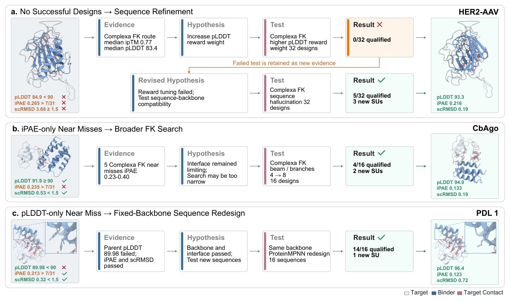
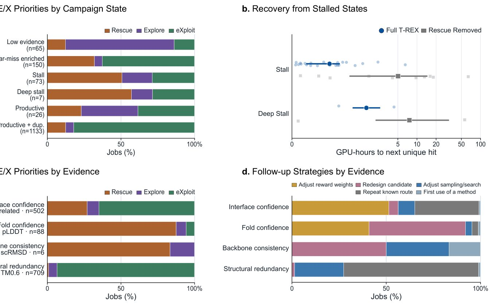
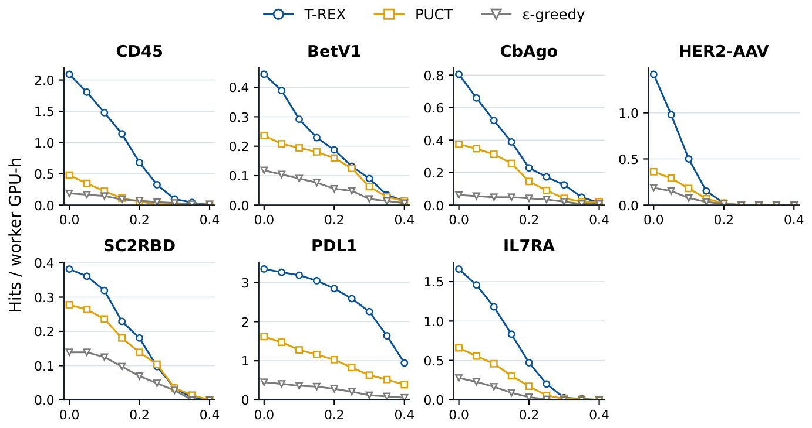
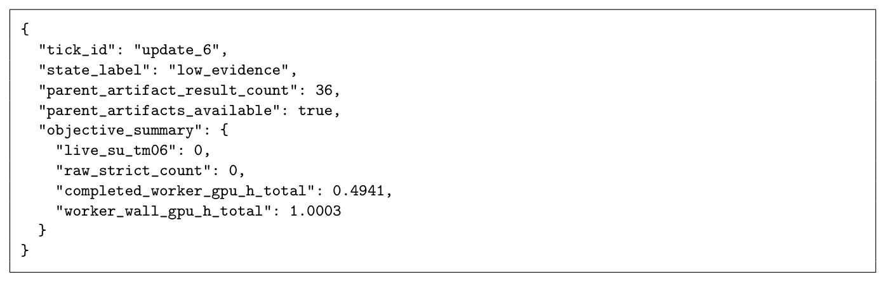
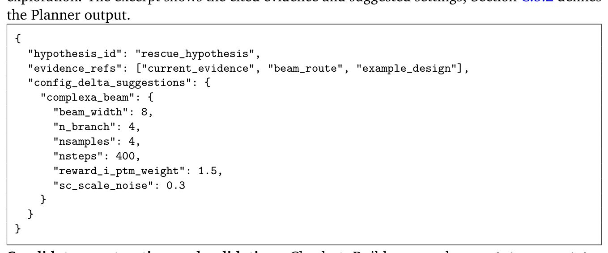
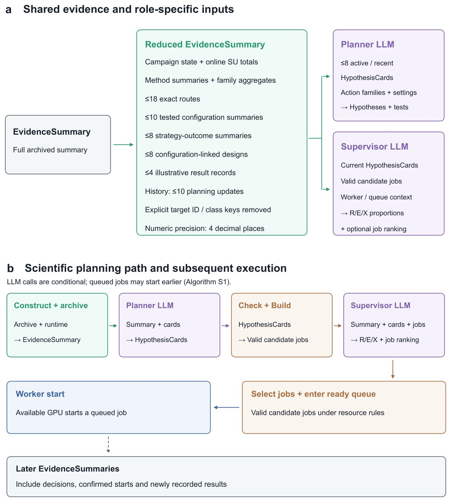
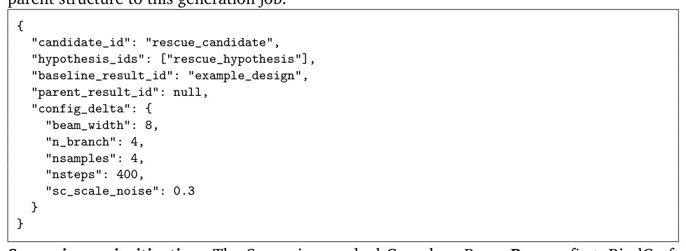

Ақуыздарды жобалауды жылдамдататын жасанды интеллект жүйесі
 шолуы. a. T-REX — бұл бекітіப்பட்ட есептеу бюджеті шеңберінде de novo ақуыз лиганды дизайны үшін есептеу құралдарын бейімделгіш](../../media/2026-09-25/agentic-campaign-control-for-high-throughput-de-novo-binder-f1.jpg)
Суреттің толық сипаттамасы
1-сурет / T-REX шолуы. a. T-REX — бұл бекітіப்பட்ட есептеу бюджеті шеңберінде de novo ақуыз лиганды дизайны үшін есептеу құралдарын бейімделгіш түрде басқаратын агенттік жүйе. b, c. Дизайн нәтижелері кейінгі әрекеттер үшін әртүрлі басымдықтарды туындататын ақаулық режимдеріне бөлінеді: перспективалы дизайнды сақтау (Rescue), балама әдістер мен параметрлерді зерттеу (Explore) немесе өнімді жолдарды пайдалану (eXploit). d. Аяқталған және жүріп жатқан дизайн тапсырмалары туралы деректер науқанның дамушы күйінің құрылымдалған көрінісіне топтастырылады және екі LLM агенті арқылы түсіндіріледі. Жоспарлаушы деректерге негізделген гипотезалар мен кейінгі әрекеттерді ұсынады, ал Супервайзер расталған әрекеттерге басымдық береді және олардың Rescue, Explore және eXploit арасында бөлінуін ұсынады. Детерминирленген басқарушы қолжетімді есептеу ресурстарын ескере отырып, тапсырмалардың орындалуын үйлестіреді. e. Ұсынылған әрекеттер қолжетімді GPU-ларда асинхронды түрде орындалады, ал аяқталған нәтижелер кейінгі жоспарлау және бөлу үшін жаңа деректерді береді.
Қажетті қасиеттері бар ақуыздарды жасау үлкен есептеу қуатын талап етеді. Зерттеушілер әртүрлі генеративті алгоритмдердің жұмысын үйлестіру үшін T-REX жүйесін ұсынды. Бұл тәсіл шектеулі уақыт пен ресурстар жағдайында көбірек бірегей құрылымдарды табуға мүмкіндік береді.
Басты ойлар
- T-REX жүйесі ақуыз генеративті модельдерінің жұмысын үйлестіреді.
- Тілдік модельдер қателерді талдап, есептеу тапсырмаларын бөледі.
- Бірегей ақуыз құрылымдарын өндіру өнімділігі бірнеше есе өсті.
Толығырақ
Заманауи жасанды интеллект әдістері ақуыз молекулаларын жасау үшін көптеген мамандандырылған құралдарды ұсынады. Алайда бұл құралдарды тиімді үйлестіру әлі де күрделі міндет болып отыр. Жаңа T-REX жүйесі бұл мәселені жобалау процесін агенттік басқару арқылы шешеді, міндеттерді перспективалы үміткерлерді сақтап қалу және сәтті бағыттарды масштабтау деп бөледі.
Жүйенің негізінде ағымдағы нәтижелерді талдайтын және келесі қадамдарды ұсынатын тілдік модельдер жатыр. Детерминивті бақылаушы бұл ұсыныстарды тексеріп, тапсырмаларды бөледі. Жеті түрлі нысана бойынша сынақтан өткізу кезінде жүйе дәстүрлі әдістермен салыстырғанда жоғары өнімділік көрсетті.
Шектеулер
Нәтижелер зертханада физикалық синтезсіз және эксперименталды тексерусіз компьютерлік модельдеуге негізделген.
Мақаланың толық талдауы
Түйіндеме
Жасанды интеллекттің дамуы ақуыздарды нолден жобалауға арналған әдістердің қарқынды өсіп келе жатқан экожүйесін қалыптастырды. Алайда зерттеушілер шектеулі есептеу ресурстары жағдайында көптеген арнайы құралдарды қалай тиімді пайдалану керектігімен жиі бетпе-бет келеді.
Бұл мәселені шешу үшін авторлар ақуыз байланыстырғыштарын әзірлеуге арналған Target-adaptive Rescue–Explore–eXploit (T-REX) агенттік жүйесін ұсынады. Бұл жүйе заманауи ақуыз генеративті модельдері мен құрылым бағалаушыларын үйлестіреді. Жобалау барысында үлкен тілдік модельдер (LLM) негізіндегі агенттер жиналған нәтижелерді талдап, перспективалы үміткерлерді сақтап қалу, балама баптауларды зерттеу немесе өнімді бағыттарды пайдалану туралы шешім қабылдайды, ал детерминирленген басқарушы ұсынылған әрекеттерді тексеріп, жоспарлайды.
Түсіндірме
Агенттік жүйе және LLM — бұл жасанды интеллект негізіндегі бағдарламалардың өз бетінше шешім қабылдайтын, аралық нәтижелерді талдайтын және тәжірибе қадамдарын жоспарлайтын тәсілі.
Жеті түрлі нысана бойынша жүргізілген сынақтар T-REX есептеу қуаттарын нақты нысананың ерекшеліктеріне сәйкес бейімделгіш түрде бөлетінін көрсетті. Жүйе барлық базалық әдістермен салыстырғанда құрылымдық жағынан бірегей сәтті ақуыз байланыстырғыштарын жасау бойынша ең жоғары өнімділікті көрсетті.
Маңызды
T-REX жүйесі есептеу ресурстарын тиімді бөледі және сынақтан өткен жеті нысана бойынша бірегей құрылымды сәтті нұсқалар саны бойынша стандартты тәсілдерден асып түседі.
Алынған деректер бейімделгіш басқарудың заманауи ақуызды жобалау модельдерін тиімді түрде толықтыра алатынын дәлелдейді. Авторлар ақуыз байланыстырғыштарын жасау кезінде есептеу шығындарын оңтайландыру үшін T-REX жүйесін ашық қолжетімділікке шығарады.
Кіріспе
De novo ақуыздарын жобалау терапияда, катализде және молекулярлық инженерияда мүмкіндіктер аша отырып, қажетті құрылымдары мен функциялары бар жаңа макромолекулаларды жасаудың қуатты әдісіне айналып келеді. Жасанды интеллект саласындағы соңғы жетістіктер жобалау процесін өзгертетін есептеу құралдарын, атап айтқанда қаңқа құрылымдарының генеративті модельдерін, тізбекті жобалауға арналған кері фолдингті және құрылымды болжау модельдерін ұсынды. Құрылым мен тізбектің бірлескен генеративті модельдері, сондай-ақ BindCraft сияқты интеграцияланған конвейерлер заманауи de novo ақуыз байланыстырғыштарын жасауға қосымша жолдар ашады. Қолжетімді құралдардың саны артып келе жатқандықтан, қай әдістерді қандай параметрлермен қолдану керектігі және шектеулі есептеу ресурстарын қалай бөлу қажеттігі туралы сұрақ туындайды.
Түсіндірме
Ақуызды жобалау науқаны — бұл белгілі бір нысана үшін орындалатын есептеулер, қайта жобалау және бағалау кезеңдерінің тізбегі.
Арнайы құралдар өнімділігі мен есептеу құны бойынша ерекшеленуі мүмкін. Үміткерлер in silico критерийлеріне сай келмеуі немесе қателіктерге әкелуі мүмкін, бірақ сәтсіз нұсқалар кейінгі жетілдіру үшін бастапқы нүкте бола алады. Қолжетімді әдістерді тиімді басқару перспективалы дизайнды өзгерту немесе балама жолдарды сынау туралы шешім қабылдауды талап етеді. Ғылыми агенттер саласындағы соңғы жетістіктер үлкен тілдік модельдердің (LLM) контекстік пайымдау қабілеттерін қамтамасыз ете алатынын көрсетеді.
Абайлаңыз
Үлкен тілдік модельдер мен ресурсты қажет ететін симуляцияларды пайдалану айтарлықтай есептеу шығындары мен токен бюджеттерін талап етеді.
Aқуыздарды жасау және құрылымын бағалау есептеу тұрғысынан ауыр процесс болып қала береді, ал LLM көмегімен аралық нәтижелерді талдау салыстырмалы түрде жылдам жүреді. Параллель міндеттер әр түрлі уақытта аяқталатындықтан, келтірілген деректерді үнемі бағалап, келесі қадамдарды жоспарлай алатын науқан контроллері қажет болады. Біз de novo ақуыз байланыстырғыштарын жоғары өнімділікпен жобалауға арналған Target-adaptive Rescue–Explore–eXploit (T-REX) агенттік науқан контроллерін ұсынамыз.
Маңызды
T-REX жүйесі de novo дизайнының жеті нысанасы бойынша ағаш іздеу контроллерінен орташа есеппен 2.43 есе және ең күшті генеративті базалық модельдерден 2.48 есе асып түсті.
T-REX жүйесінде LLM агенттері жинақталған деректерді талдап, жұмысты үш стратегия бойынша басымдыққа ие етеді: Rescue (перспективті дизайнның әлсіз жақтарын түзету), Explore (аз қолданылатын әдістерді сынау) және eXploit (өнімді бағыттарға қосымша ресурстар бөлу). Детерминистік орындау қабаты ұсынылған тапсырыстарды растайды және ресурстар шектеулерін басқарады. Жеті нысана бойынша T-REX құрылымдық бірегей хиттердің ең жоғары өткізу қабілетіне қол жеткізді.
Нәтижелер
2.1. T-REX науқан контроллеріне шолу
T-REX жүйесі белгіленген есептеу бюджеті шеңберінде құрылымдық жағынан ерекше «хиттерді» максимизациялау үшін әртүрлі ақуыз байланыстырғыштарын жобалау құралдарын бейімделгіш түрде басқаруға арналған (1-сур.). Құралдар жиынтығына алты генерация құралы — Proteína-Complexa-ның төрт нұсқасы (beam search, best-of-n, Feynman-Kac steering және Monte-Carlo Tree Search — MCTS), BindCraft және BoltzGen, сондай-ақ тізбекті қайта жобалауға арналған ProteinMPNN және құрылымды бағалау үшін AlphaFold2 (AF2) кіреді (1a-сур.).
De novo байланыстырғыштарын жобалау науқаны әр тапсырма нақты құралды, гиперпараметр конфигурациясын және ата-аналық дизайнды қамтитын есептеу тапсырмалары бойынша онлайн бөлу проблемасы ретінде тұжырымдалады (S5-кесте). Жобаланған ақуыздар in silico критерийлеріне сай болуы тиіс (pLDDT, iPAE, scRMSD шектері), ал жинақталған кандидаттар жинағы Foldseek көмегімен бірегей хиттерді санау үшін кластерленеді (4.2-бөлім, Әдістер). Науқан барысында хиттердің өндірілуі баяулауы немесе тоқтап қалуы мүмкін, бірақ хиттердің қарапайым саны мәселенің қай жерде екенін көрсетпейді. T-REX жүйесінде төрт операциялық ақаулық режимі бөлінеді (1b-сур.): генерация нәтиже бермеуі, бағалаудың кешігуі, кандидат критерийлерге жетпей қалуы немесе дизайнның бұрын табылған құрылымды қайталауы.
Маңызды
T-REX контроллері алты генерация құралын үйлестіреді және ақуыз байланыстырғыштарын жобалаудағы төрт түрлі ақаулық режимін еңсеру үшін тілдік модельдерге негізделген агенттерді пайдаланады.
Бұл әрекеттерді ұйымдастыру үшін T-REX үш басымдықты анықтайды: Rescue (қтқару), Explore (зерттеу) және eXploit (пайдалану) (1c-сур.). Тек хиттер санына сенудің орнына, нәтижелер мен ресурстарды біріктіретін EvidenceSummary жиынтығы қолданылады (1d-сур.; 4.3-бөлім, Әдістер; C.4-бөлім және S1-сур.). Оның негізінде науқанның жеті күйінің бірі тағайындалады. Контекстті түсіндіру үшін LLM агенттері қолданылады. Planner LLM гипотезаларды HypothesisCards түрінде тұжырымдайды, содан кейін тапсырмалар «Check + Build» тексеру сатысынан өтеді. Содан кейін Supervisor LLM кандидаттарды басымдықтар бойынша бөледі (1d-сур.).
Түсіндірме
LLM агенттері (Planner және Supervisor) — бұл есептеу науқанының күйін талдайтын және келесі әдістерді іске қосу туралы стратегиялық шешімдер қабылдайтын жасанды интеллект модельдері.
Детерминированный контроллер GPU ресурстары босаған сайын тапсырмаларды таңдайды. Генерация мен бағалау уақыты әртүрлі болғандықтан, T-REX асинхронды орындауды пайдаланады (1e-сур.). Нәтижелер науқан мұрағатына (4.3-бөлім, Әдістер) және EvidenceSummary-ге енгізіледі (1e-сур.; 4.5-бөлім, Әдістер). Бұл жұмыста Planner мен Supervisor vLLM арқылы жұмыс істейтін Qwen3.6-27B-FP8 моделін қолданады.
T-REX PUCT ε-gr. CX BC BG T-REX нысанасының PUCT-ке, ең жақсы GO-ға қарағандағы артықшылығы CD45 2.090 0.479 0.188 0.347 0.014 0.035 4.36× 6.02× BetV1 0.444 0.236 0.118 0.118 0.021 0.104 1.88× 3.76× CbAgo 0.806 0.375 0.062 0.014 0.361 0.257 2.15× 2.23× HER2-AAV 1.417 0.361 0.188 0.292 0.722 0.014 3.92× 1.96× SC2RBD 0.382 0.278 0.139 0.000 0.153 0.042 1.38× 2.50× PDL1 3.347 1.618 0.451 1.951 1.604 1.097 2.07× 1.72× IL7RA 1.660 0.660 0.278 1.160 1.236 1.035 2.52× 1.34×
2.2. T-REX әртүрлі ақуыз нысандары бойынша жоғары өнімді in silico дизайнына қол жеткізеді
Біз T-REX жүйесін үш тек генераторға негізделген базалық әдіспен және еét есептеу ресурстары шеңберіндегі екі агенттік емес бейімделгіш бақылаушымен Proteína-Complexa (Complexa) бенчмаркінен таңдалған жеті нысан бойынша салыстырдық: CD45, BetV1, CbAgo, HER2-AAV, SC2RBD, PDL1 және IL7RA (2-сурет; 1-кесте). Генераторлық базалар ретінде Complexa, BindCraft және BoltzGen қолданылды; ал бейімделгіш салыстыру құралдары ретінде PUCT ағашты іздеу бақылаушысы мен ε-greedy алгоритмі алынды. PUCT және ε-greedy T-REX жүйесімен бірдей әрекеттер кеңістігінде және орындау ортасында жұмыс істеді, бірақ тілдік модельдерге негізделген мәтіндік пайымдауларсыз, скалярлық сыйақыға негізделген бөлуді қолданды.
Маңызды
T-REX 0.6 TM табалдырығында топтастырылған 1461 құрылымдық бірегей хитті (SU) жасап шығарды, мұнда әрбір жобалау науқаны 4 H100 GPU түйінінде 48 сағатқа созылып, барлық бес базалық әдістен асып түсті.
T-REX өнімділігі әр түрлі нысандар үшін PUCT көрсеткішінен 1.38–4.36 есе жоғары болды, ал геометриялық орташа өсім PUCT-ке қарағанда 2.43 есе және ең күшті генераторлық базаға қарағанда 2.48 есе құрды (2-сурета; 1-кесте). 10, 50, 100 және 144 GPU сағаттарындағы салыстырулар өнімділік траекторияларын көрсетті (S10-кесте). T-REX өнімділігінің артуы құрылымдық әртүрлілік мен сапа анықтамаларына қатысты тұрақты болды (2b, c-суреттер). Жүйе 0.5, 0.6 және 0.8 TM-score табалдырықтарында және 70% ұқсастықтағы тізбектерді топтастыру кезінде көшбасшы болды (2b-сурет; S13, S14-кестелер). Хиттерге қойылатын талаптар қатаңдатылған кезде де артықшылық сақталды (S4-сурет). AF2, actifpTM, PRODIGY, ESMFold2 және Boltz-2 диагностикалары бойынша T-REX әрбір балл табалдырығынан өткен ең көп құрылымдық ерекше хиттерді сақтап қалды (2c-сурет; S6-сурет). CD45, SC2RBD және CbAgo үшін тәуелсіз басталған қайталанбалы науқандар T-REX жүйесінің тұрақты түрде басым болғанын көрсетті (2d-сурет). T-REX сондай-ақ SMAC3 оптимизаторынан да озып түсті (S11-кесте) және TNF-α мен TrkA үшін жоғары SU өнімділігіне қол жеткізді (S25-кесте).
Түсіндірме
Агенттік жүйелер модельдеу барысында аралық нәтижелерді талдай отырып, қажетті құралдар мен стратегияны автоматты түрде өзгерте алады.
2.3. T-REX сәтсіздіктерді талдау және кейінгі тапсырмаларды ұсыну үшін науқан деректерін біріктіреді
T-REX жүйесінің науқан мәнмәтінін қалай пайдаланатынын сапалы зерттеу үшін біз үш мысалды қарастырдық. HER2-AAV жүйесінде pLDDT сыйақысына негізделген сынақ бірде-бір мақұлданған дизайнды бермеді (0/32), бұл тізбек пен қаңқа үйлесімділігі туралы гипотезаны қайта қарауға әкелді және тізбекті нақтылау жұмысы 5/32 мақұлданған дизайнды берді (3а-сурет). CbAgo жағдайында iPAE мәндері шектен жоғары бес дизайн Feynman–Kac (FK) басқаруын кеңейтуге түрткі болып, 4/16 мақұлданған дизайнды қамтамасыз етті (3b-сурет). PDL1 үшін тек pLDDT тексеруінен өтпеген ата-аналық нұсқа ProteinMPNN көмегімен қайта жобаланып, 14/16 ұрпақтың сәтті өтуіне және бір жаңа SU алуға мүмкіндік берді (3c-сурет). Бұл мысалдар T-REX жүйесінің критерийлерге тән деректерді қайта пайдалана отырып, жаңа есептеу қадамдарын тиімді жоспарлай алатынын көрсетеді.
Абайлаңыз
Алынған нәтижелер есептеулік дизайн тиімділігін көрсеткенімен, олар in vitro эксперименттері арқылы толық растауды қажет етеді.
2.4. T-REX науқан күйлеріне сәйкес ресурс бөлуді бейімдейді және тығырықтан шығуға басымдық береді
Біз T-REX науқан күйлеріндегі Rescue (құтқару), Explore (зерттеу) және eXploit (пайдалану) басымдықтарының қалай өзгеретінін зерттедік. Науқан күйлері архивтелген деректер негізінде жеті күйлі жіктеу арқылы тағайындалды (1d-сурет). Расталған 1454 генерация мен қайта жобалаудың 74%-ы деректер аз кезде Explore үлесіне, 51%-ы тығырық немесе терең тығырық жағдайында Rescue үлесіне, ал 82%-ы құрылымдардың жиі қайталануына қарамастан жаңа нәтиже беретін өнімді күйлерде eXploit үлесіне тиесілі болды (4a-сурет). Осылайша, T-REX жұмысты икемді бөледі: деректер жетіспегенде Explore-ті, тығырық кезінде Rescue-ні, ал тиімді жолдар жалғасқанда eXploit-ті таңдайды.
Маңызды
Rescue басымдығы тығырықтан шығуда маңызды рөл атқарады: толық T-REX жүйесі осындай 27 жағдайдың 26-сында шықса, бұл басымдық алынып тасталғанда 20 жағдайдың 14-інде ғана шықты.
Біз бұл басымдықты алып тастау арқылы Rescue-нің тығырықтан шығудағы рөлін тексердік. Алғашқы 100 GPU-сағат ішінде қалпына келтіру тығырыққа кірген сәттен бастап TM ≥ 0.6 болатын келесі жаңа дизайнға дейін өлшенді (4b-сурет). Толық T-REX осындай 27 жағдайдың 26-сында қалпына келсе, Rescue алынып тасталған нұсқада 20-ның 14-і ғана қалпына келді. Сәтті жағдайлар арасында келесі дизайнға дейінгі орташа уақыт толық T-REX үшін қалыпты тығырықта да (1.77 және 5.04 GPU-сағат), терең тығырықта да (3.52 және 7.60 GPU-сағат) қысқа болды. Сондай-ақ толық T-REX тығырық күйлерінде аз уақыт өткізді (3.8% және 27.7%). Бұл нәтижелер Rescue басымдығының маңызын растайды.
Түсіндірме
Міндеттер нәтижелері мен басымдықтар арасындағы байланысты зерттеу AI-агенттің логикасын түсінуге көмектеседі: сенімділік төмен болғанда балмалар өзгереді, ал құрылым қайталанғанда іздеу баптаулары түзетіледі.
Соңында біз міндет нәтижелері, құрылымның қайталануы және бөлу басымдықтары арасындағы байланысты қарастырдық. Ретроспективті түрде анықталған бастапқы мақсаты бар 1305 генерация ішінде интерфейс сенімділігі (iPAE) және құрылымның қайталануы көбінесе eXploit-пен байланысты болса (тиісінше 65% және 93%), фолдинг сенімділігі (pLDDT) Rescue-мен байланысты болды (88%, 4c-сурет). Келесі міндеттер де дәлелдерге байланысты ерекшеленді: сенімділік көрсеткіштері генератор салмақтарын өзгертуге немесе реттілік дизайнын жаңартуға әкелсе, құрылымның қайталануы іздеу баптауларын өзгерте отырып белгілі жолдарды қайталауға әкелді (4d-сурет).
2.5. Жобаланған ақуыздар әртүрлі екінші ретті құрылымдар мен болжанған байланысу орындарын қамтиды
Т-REX жасаған байланыстырушы құрылымдардың жиынтығын сипаттау үшін біз құрылымдық жағынан ерекше хиттердің екінші ретті құрылым құрамын зерттедік. Барлық 7 нысаналы науқан бойынша TM ≥ 0.6 болатын 1461 өкіл үшін DSSP жіктеуін пайдалана отырып, α-спираль мен β-талшық үлестерін есептедік (5a, 5b-суреттер). Әдістерді салыстыру үшін кластерлеуге дейін кемінде 20%-ы β-талшықтан тұратын барлық сапалы дизайндарды таңдадық. Жеті нысана бойынша T-REX TM ≥ 0.6 болатын 308 кластер түзсе, басқа әдістердің ішіндегі ең жоғарғы көрсеткіш – BoltzGen-only 95 кластер түзді (S23-кесте).
Маңызды
T-REX басқа әдістерге қарағанда β-талшыққа бай кластерлерді көбірек түзіп (308-ге қарсы 95), әртүрлі екінші ретті құрылымдарды көрсетеді.
Содан кейін біз CbAgo нысанасына қатысты болжанған байланыстырушы орындарды талдадық. Әрбір болжанған кешенді нысанаға сәйкестендіргеннен кейін, әр байланыстырушының орталығын оның C_α атомдарының орташа орны ретінде анықтадық. Басты компоненттерді талдау (PCA) T-REX байланыстырушы орталықтарының PUCT әдісіне қарағанда кеңірек аймақты алып жатқанын көрсетті (5c-сурет). Әр әдіс үшін 30 өкілден тұратын 1000 қайта таңдама негізінде байланыстырушы орталықтар арасындағы орташа қашықтық T-REX үшін 31.2 Å, ал PUCT үшін 9.97 Å болды (S24-кесте). Осылайша, T-REX құрылымдық әртүрлілікті және нысанаға қатысты кең ауқымды байланысу орындарын қамтамасыз етеді.
Талқылау
Нәтижелерді талқылау және T-REX әдісінің перспективалары
Авторлар Target-adaptive Rescue–Explore–eXploit (T-REX) агенттік науқан контроллерін ұсынады, ол мамандандырылған ақуыз құрылымының генераторлары мен бағалаушыларын үйлестіре отырып, de novo байланыстырғыш ақуыздарды жоғары өнімділікпен жобалауды қамтамасыз етеді. Бірнеше жобалау құралдары мен стратегияларын қолдана отырып, T-REX бірдей есептеу бюджеттері жағдайында бір генераторлы базалық модельдерге және агенттік емес бейімделгіш контроллерлерге қарағанда жоғары нәтиже көрсеткішіне қол жеткізді (Сурет 2). Бұл нәтижелер науқан деңгейіндегі үйлестіру арнайы ақуыз дизайны құралдарын жетілдірумен қатар маңызды қосымша бағытқа айналып келе жатқанын көрсетеді.

Суреттің толық сипаттамасы
2-сурет / T-REX дизайн науқаны барысында базалық әдістерге қарағанда құрылымдық жағынан бірегей хиттерді көбірек шығарады. a. T-REX, агенттік емес бейімделгіш тәсілдер және бір генераторлы базалық модельдер үшін жеті нысана бойынша GPU сағаттарына қатысты құрылымдық жағынан бірегей хиттердің жиынтық саны. b. Әрбір нысана үшін ең жоғары өнімділігі бар баламаға қатысты көрсетілген, 70% тізбек ұқсастығындағы MMseqs2 кластерлеуі кезіндегі хиттердің өткізу қабілеті. c. Жеті нысана бойынша біріктірілген баламалы post-hoc сапа шектері кезінде сақталған құрылымдық жағынан бірегей хиттердің саны. afpTM және ESMFold2 ipTM болжанған интерфейс сенімділігін өлшейді, ал PRODIGY байланысудың бос энергиясын (Δ𝐺, ккал моль−1) бағалайды. Әрбір шек бірдей TM0.6 кластер өкілдері жиынтығына бөлек қолданылады. d. CD45, SC2RBD және CbAgo бойынша тәуелсіз іске қосылған үш науқан үшін T-REX, PUCT және 𝜖-шақа (𝜖-greedy) үшін хиттердің өткізу қабілеті. Нүктелер жеке науқандарды көрсетеді; ромбтар мен қателік сызықтары орташа мән мен стандартты ауытқуды көрсетеді.
T-REX жүйесінің өзегі тілдік модельдердің (LLM) пайымдауларына негізделген бейімделгіш шешім қабылдауды, нәтижелер мен қателік түрлерін құрылымдық жіктеуді және ресурстарды тиімді бөлу үшін детерминирленген бақылауды біріктіреді. LLM-ге ретсіз тарихты тікелей талдауды тапсырудың орнына, T-REX науқан нәтижелерін түсінікті қателік түрлері мен науқан күйлеріне реттейді (Сурет 1). Екі LLM агенті осы құрылымдық деректер негізінде жұмыс істейді: Жоспарлаушы (Planner) гипотезалар мен әрекеттерді ұсынады, ал Супервайзор (Supervisor) кандидат әрекеттерге басымдық беріп, есептеу қуаттарын Құтқару (Rescue), Зерттеу (Explore) және Пайдалану (eXploit) режимдері арасында бөлуді ұсынады (Сурет 3, 4).
Суреттің толық сипаттамасы
1-сурет / T-REX шолуы. a. T-REX — бұл бекітіப்பட்ட есептеу бюджеті шеңберінде de novo ақуыз лиганды дизайны үшін есептеу құралдарын бейімделгіш түрде басқаратын агенттік жүйе. b, c. Дизайн нәтижелері кейінгі әрекеттер үшін әртүрлі басымдықтарды туындататын ақаулық режимдеріне бөлінеді: перспективалы дизайнды сақтау (Rescue), балама әдістер мен параметрлерді зерттеу (Explore) немесе өнімді жолдарды пайдалану (eXploit). d. Аяқталған және жүріп жатқан дизайн тапсырмалары туралы деректер науқанның дамушы күйінің құрылымдалған көрінісіне топтастырылады және екі LLM агенті арқылы түсіндіріледі. Жоспарлаушы деректерге негізделген гипотезалар мен кейінгі әрекеттерді ұсынады, ал Супервайзер расталған әрекеттерге басымдық береді және олардың Rescue, Explore және eXploit арасында бөлінуін ұсынады. Детерминирленген басқарушы қолжетімді есептеу ресурстарын ескере отырып, тапсырмалардың орындалуын үйлестіреді. e. Ұсынылған әрекеттер қолжетімді GPU-ларда асинхронды түрде орындалады, ал аяқталған нәтижелер кейінгі жоспарлау және бөлу үшін жаңа деректерді береді.


Суреттің толық сипаттамасы
3-сурет / T-REX кейінгі дизайн стратегияларын ұсыну үшін науқан нәтижелерін пайдаланады. Үш ретроспективті мысал T-REX байқалған нәтижелерді кейінгі есептеу әрекеттерін ұсыну үшін қалай пайдаланатынын көрсетеді. a. HER2-AAV үшін pLDDT оңтайландыратын топ сәтті дизайн шығармады, бұл тізбекті нақтылауға түрткі болды, ол 5/32 сәтті дизайнды және үш жаңа құрылымдық жағынан бірегей хитті өндірді. b. CbAgo үшін тек iPAE критерийінен өтпеген қайталанған дизайн Фейнман–Кац (FK) кеңірек іздеуіне түрткі болып, 4/16 сәтті дизайн мен екі жаңа құрылымдық жағынан бірегей хитті берді. c. PDL1 үшін тек pLDDT критерийінен өтпеген дизайн ProteinMPNN бекітілген қаңқалы тізбекті қайта жобалауға итермелеп, 14/16 сәтті дизайн мен бір жаңа құрылымдық жағынан бірегей хитті тудырды. Қызғылт сары және жасыл белгілер сәйкесінше өте алмаған және өткен дизайн критерийлерін көрсетеді.


Суреттің толық сипаттамасы
4-сурет / T-REX дизайн стратегияларын науқан күйіне және жиналған деректерге бейімдейді. a. Науқан күйі бойынша топтастырылған 1454 генерация және қайта жобалау тапсырмалары бойынша Rescue–Explore–eXploit (R/E/X) басымдықтары. b. Тоқтап қалған науқан күйіне кірген сәттен бастап T-REX және айқын Rescue басымдығы жоқ T-REX үшін келесі құрылымдық жағынан бірегей хитке дейінгі GPU сағаттары. Нүктелер жеке қалпына келтіру оқиғаларын көрсетеді; үлкенірек маркерлер мен жолақтар медианалар мен квартильаралық ауқымдарды көрсетеді. c. Әрбір шешім туралы ақпарат беретін негізгі деректер бойынша топтастырылған 1305 генерация және қайта жобалау тапсырмалары бойынша R/E/X басымдықтары. d. c тармағындағыдай негізгі деректер бойынша топтастырылған сол тапсырмалар үшін кейінгі дизайн стратегиялары.
Түсіндірме
> LLM агенттері (бұл жағдайда Qwen3.6-27B-FP8 негізінде) — әрекеттерді дербес жоспарлауға, аралық нәтижелерді талдауға және мәтіндік деректер негізінде шешім қабылдауға қабілетті бағдарламалар.
T-REX әдісін бағалау тек есептеу ортасында, сәтті және бірегей нәтижелерді анықтау үшін орныққан in silico метрикаларын қолдана отырып жүргізілді. Эксперименталды тексеру қажет болғанымен, T-REX құрамындағы жеке генераторлар (Proteína-Complexa, BindCraft және BoltzGen) бұрынғы зерттеулерінде эксперименталды түрде расталған байланыстырғыштарды шығарған. Шынайы de novo дизайны сонымен қатар байланысу аффинндігін, ерекшелігін және әзірлену мүмкіндігін бағалауды талап етеді. Болашақта T-REX жүйесін робототехникамен және дербес зертханалармен біріктіру жобалау мен сынақ циклін жақындата алады.
Маңызды
> T-REX әдісі науқан күйін құрылымдық ұсыну, LLM негізіндегі ұсыныстар және детерминирленген ресурстарды бөлу арқылы есептеу тиімділігін арттырады.
Абайлаңыз
> Әдісті бағалау тек виртуалды ортада орындалған, ал толыққанды енгізу үшін ақуыздардың нақты аффинндігі мен ерекшелігін бағалайтын эксперименталды тексеру қажет.
Әдістер
4.1. Кампания спецификациясы және ортақ әрекеттер кеңістігі
Кампанияны баптау және басқарушылар. T-REX жүйесі бекітілген есептеу бюджеті шеңберінде құрылымы жағынан әртүрлі байланыстырушы ақуыздардың (хиттердің) санын барынша арттыру үшін есептеу тапсырмаларын бейімделгіш түрде таңдайды. Кампания бір нысана үшін белгіленген ресурс бюджеті мен бірнеше графикалық процессорлардың көмегімен орындалатын генерациялау, қайта жобалау және бағалау тапсырмаларын қамтиды. Әрбір нысана үшін алдын ала белгіленген құрылым және байланысу сайтының ыстық нүктелері, сондай-ақ ақуыз ұзындығының стандартты диапазоны қолданылды (S1-кесте). Құрылымдық жағынан бірегей хиттер 4.2-бөлімде сипатталған компьютерлік іріктеу критерийлері мен кластерлеу арқылы есептелді. T-REX, PUCT және ε-greedy алгоритмдері кампания деңгейіндегі басқарушылар ретінде қызмет етті және олар ортақ параметр шекаралары мен бірыңғай орындау және бағалау ортасы бар бірдей әрекеттер кеңістігінде жұмыс істеді. PUCT және ε-greedy алгоритмдері үлкен тілдік модельдер негізіндегі мәнмәтіндік пайымдауларды қолданбай, скалярлық марапаттарға негізделген ресурстарды бөлуді пайдаланды.
Түсіндірме
> Әрекеттер кеңістігі — бұл жүйе ең жақсы ақуыз молекулаларын іздеу үшін басқаратын қолжетімді алгоритмдер мен олардың баптауларының жиынтығы.
Ортақ әрекеттер кеңістігі. Бұл кеңістік кампанияда рұқсат етілген сегіз әрекет отбасы мен конфигурацияларын қамтиды: Complexa іздеудің төрт түрі көмегімен de novo генерациялау (сәулелік іздеу, best-of-n, Фейнман–Кац басқаруы және Монте-Карло ағашын іздеу), сондай-ақ BindCraft пен BoltzGen; ProteinMPNN көмегімен тізбекті қайта жобалау; және AF2 көмегімен бағалау. Осы кеңістік шеңберінде әрекет отбасы есептеу әдісін анықтайды, бағыт ұқсас баптаулары бар генерация немесе қайта жобалау тапсырмаларын топтастырады, ал тапсырма орындалатын нақты есептеуді, соның ішінде рұқсат етілген параметрлерді белгілейді. Басқарушылар отбасына тән баптаулар мен Complexa марапат шарттарының немесе BindCraft жоғалту салмақтарының мәндерін алдын ала белгіленген шекте реттей алатын. Алдын ала оқытылған модельдердің салмақтары мен әрекеттер кеңістігі кампания бойы өзгеріссіз қалды.
Кампанияны орындау. Барлық үш бейімделгіш басқарушылар ортақ бастапқы баптаулары бар алдын ала анықталған Complexa Beam, BoltzGen және BindCraft тапсырмаларымен жұмысты бастады. PUCT пен ε-greedy қосымша өздерінің төртінші жұмыс ағынында Complexa best-of-n тапсырмасын бастады. Нәтижелердің келіп түсуіне қарай келесі тапсырмалар жиналған деректер негізінде таңдалды. Жұмысшыларды пайдалану әр тапсырма бойынша, ал біліктілік әр дизайн бойынша есептелді. Басқарушы статистикасы үшін бағыттар нәтижелерді жинақтау бірлігі болып қызмет етті. Қайта жобалау бағыттары бастапқы генерация мәнмәтінін сақтап қалды. Операциялық тұрғыдан әрбір кампания жинақтау, жоспарлау және орындау циклі бойынша жүзеге асырылды: аяқталған тапсырмалар деректерді жаңартты, басқарушы оларды болашақ жұмысты жоспарлау үшін пайдаланды, ал олардың нәтижелері кейінгі шешімдерге негіз болды.
4.2. Жобалау біліктілігі және өткізу қабілетін өлшеу
Дизайнды сапалық іріктеу және өткізу қабілетін өлшеу екі кезеңде жүзеге асырылды: алдымен нұсқалар жалпы іріктеу критерийлеріне сай болуы тиіс еді, содан кейін сападан өткен байланыстырушы тізбектер құрылымдық жағынан ерекше хиттерді (SU) анықтау үшін кластерлерге біріктірілді. Дизайндар тек байланыстырушының pLDDT көрсеткіші ≥ 90, қалыптасқан iPAE мәні ≤ 7/31 және байланыстырушының scRMSD ауытқуы < 1.5 Å болған жағдайда ғана жарамды деп танылды. Бұл шекті мәндер Proteina-Complexa бағалау хаттамасынан және ColabDesign негізіндегі стандартты AF2-Multimer хаттамасының өлшемдерінен алынды. Қалыптасқан iPAE мәні байланыстырушыдан нысанаға және нысанадан байланыстырушыға бағытталған екі PAE орташа мәндерінің қосындысын 31-ге бөлу арқылы есептелді. Байланыстырушының scRMSD көрсеткіші сәйкес нысана Cα атомдарын Кабш әдісі бойынша түзегеннен кейін жасалған және AF2 болжаған байланыстырушы құрылымдары арасындағы Cα орташа квадратының түбірлік ауытқуы ретінде анықталды. Complexa жүйесі генерация барысында барлық үш сапалық өлшемді өзі шығарды, ал BindCraft, BoltzGen және ProteinMPNN қайта жобалау нәтижелері 4.5-бөлімде сипатталған ережелерге сәйкес бөлек стандартталған AF2 бағалауды талап етті.
Түсіндірме
Стандартталған AF2 бағалауы және pLDDT, iPAE, сондай-ақ scRMSD сияқты көрсеткіштер тұрақты әрі сапалы ақуыз кешендерін нақты іріктеп алуға мүмкіндік береді.
Құрылымдық жаңашылдықты бағалау кезінде, егер жарамды дизайнның байланыстырушы тізбегі науқанда бұрыннан бар құрылыммен кластерленсе, ол жаңа SU қоспады деп есептелуі мүмкін еді. Foldseek бағдарламасы әр науқан шеңберінде жарамды байланыстырушы тізбектерді TM0.6 көрсеткіші бойынша бөлек кластерледі; бұл шекті мән бұрын жасалған ақуыз қаңқаларының құрылымдық алуан түрлілігін анықтау үшін қолданылған. Қосымша сезімталдық талдауы ретінде TM0.5 және TM0.8 мәндері де бағаланды (S14-кесте). Әрбір қорытынды кластер құрылымдық тұрғыдан бірегей бірлік (SU) ретінде есептелді, бұл биологиялық фолд немесе эпитоп ұқсастығын емес, дәл құрылымдық ұқсастықты сандық түрде бағалады. Хаттама және кластерлеу туралы егжей-тегжейлі мәліметтер B.1–B.2 бөлімдерінде және S4-кестеде келтірілген.
Өткізу қабілетін өлшеу кезінде T-REX, PUCT немесе ε-greedy адаптивті әдістерімен басқарылатын науқандардың қорытынды SU саны науқан барысында жасалған соңғы дәлелдер жиынтығынан көшірілмей, түпкілікті науқан жазбаларынан қайта есептелді (4.3-бөлімді қараңыз). Әрбір SU бағалау тапсырмасына емес, таңдалған өкілді нұсқаны жасаған генерация немесе қайта жобалау тапсырмасына жазылды; әр кластерден бір өкіл дизайнды таңдау ережелері B.2-бөлімінде берілген. Өткізу қабілеті NSU/H ретінде анықталды, мұндағы NSU — қорытынды кластерлер саны, ал H — негізгі бенчмарктегі әрбір әдіс пен нысана комбинациясы үшін 144 H100 жұмысшы GPU-сағаты. Адаптивті науқандар үшін генерация, қайта жобалау және стандартталған AF2 бағалау осы бюджетке кірді, өйткені бұл есептеулер науқан барысында орындалып, кейінгі бөлуге әсер етуі мүмкін еді. Тек генераторды қолданатын базалық әдістер үшін генерация мен іздеу бюджетке есептелді, бірақ генерация мерзімі аяқталғаннан кейін орындалған стандартталған AF2 бағалау шығарылып тасталды, өйткені ол қандай дизайн жасалғанына әсер ете алмас еді. T-REX үшін тіл моделіне (LLM) қызмет көрсету және апостериорлы талдаулар H көрсеткішіне енгізілмеді, өйткені бұл параметр дизайн науқаны кезінде пайдаланылатын жұмысшы есептеу қуатын қамтуға арналған. Баламалы есепке алу және науқан деңгейіндегі статистика D.1.3 және D.1.1-бөлімдерінде көрсетілген.
4.3. Науқан мұрағаты және дәлелдемелерді құру
Жоспарлау, орындау және нәтижелер циклінің ашықтығын қамтамасыз ету үшін әрбір науқан барысында арнайы мұрағат жүргізілді. Жүйе ескі файлдарды өшірмей, жаңа жазбаларды үнемі қосып отырды. Негізгі ғылыми нәтижелер мен жоспарлау ақпаратын сақтау үшін үш жазба түрі қолданылды: ResultRecord, EvidenceSummary және HypothesisCard. ResultRecord жазбасы тапсырманың орындалу нәтижесін немесе қатесін тіркеп, әрбір нәтижені әрекеттер тобымен, бағытпен және ата-аналық дизайнмен байланыстырды. Сондай-ақ онда өлшемдер, жұмысшы есептеу ресурстары, орындалу күйі және файлдарға сілтемелер сақталды. Тапсырма бірнеше ResultRecord өндіре алатын. Егер дизайн жарамсыз болса да, ResultRecord қате күйін тіркейтін. Бұдан басқа, мұрағатта кандидаттық тапсырмалар, Supervisor рейтингтері, ресурстарды бөлу пропорциялары және LLM шақыру аудиті сақталды (Сурет S3).

Суреттің толық сипаттамасы
Сурет S3 / Үш T-REX іске қосылуы кезіндегі онлайн SU санақтары. Әрбір панель алдын ала белгіленген 144 H100 жұмысшы-GPU-сағ бөлшегі үшін бір нысанаға арналған дербес инициализацияланған үш науқанды көрсетеді. Тұтас қадамдар Foldseek кластерлеуі жаңартылған кезде азаюы мүмкін мұрағатталған онлайн TM0.6 SU санақтарын көрсетеді; ашық символдар түпкілікті қайта есептелген TM0.6 SU санақтарын көрсетеді. 2d суреті мен S9 қосымша кестесі тиісті адаптивті контроллерлерді салыстырады.
EvidenceSummary жиынтығын құру Жоспарлаушы жаңа тесттерді ұсынғанға дейін жүзеге асырылды. Арнайы детерминирленген код мұрағатталған нәтижелер мен ресурстар негізінде EvidenceSummary жасады. Бұл жиынтық Жоспарлаушы мен Supervisor үшін ортақ контекст болды, ал олардың промптарына қысқартылған нұсқасы берілді. Сурет 1d көрсетілгендей, жиынтық деректерді алты бағыт бойынша ұйымдастырды: (1) құрылым сапасы; (2) құрылым жаңалығы; (3) нақты бағыт шығыны мен өнімі; (4) күтілетін бағалаулар; (5) ата-аналық желі және нәтижелер; (6) GPU ресурстары және белсенді тапсырмалар. Сонымен қатар, жүйе сәттілікке жақын нәтижелерді (near-miss) және көмекші өлшемдерді сақтады. Көмекші өлшемдерге ipTM, ipSAE, интерфейс энергиясы кірді. Толық схема мен сапа есептеулері Сурет S4.1–S4.3 сипатталған, ал LLM үшін қысқарту Сурет S5.2 берілген.








Суреттің толық сипаттамасы
Сурет S5 / Нысаналар бойынша түпкілікті T-REX TM0.6 құрылымдық-бірегей бірліктерінің әрекет отбасы атрибуциясы. Әрбір баған таңдалған өкілді тікелей шығарған генерация немесе қайта жобалау отбасына сәйкес нысананың түпкілікті Foldseek TM0.6 кластерлерін бөледі; оң жақтағы белгілер құрылымдық-бірегей бірліктердің (SU) жалпы санын береді. Әрбір кластер бір рет есептелді және нәтижеге баға берген стандартталған AF2 тапсырмасы тікелей кредит алмады. Генерация немесе қайта жобалау тапсырмасы бірнеше дизайн шығара алады және сондықтан бірден көп SU-ға үлес қоса алады. График себептік үлес тиімділігін немесе бір басталуға шаққандағы тиімділікті емес, нәтиже атрибуциясын сипаттайды.
Түсіндірме
Детерминирленген код — бұл кіріс деректері бірдей болған кезде әрқашан бірдей нәтиже беретін қатаң ережелері бар алгоритм.
Науқан күйін тағайындау LLM пайымдаулары үшін контекст берді (Сурет 1d). Арнайы детерминирленген классификатор жеті науқан күйінің бірін тағайындады: дәлелдердің аздығы, құрылымдық дубликаттардың колапсы, өнімді, дубликатпен өнімді, near-miss байытылған, тоқырау немесе терең тоқырау. Классификатор өнімділікті, дубликацияны және есептеу ресурстарын талдады. Егер бірнеше күйдің шарттары орындалса, басымдықтар тәртібі қолданылды, ал әдепкі бойынша дәлелдердің аздығы таңдалды. Тағайындалған белгі EvidenceSummary құрамына енгізілді. Күй анықтамалары мен шектері Сурет S4.5 берілген.
4.4. Дәлелдерге негізделген жоспарлау және гипотеза бойынша кері байланыс
LLM агенттерінің рөлдері. T-REX жүйесі LLM негізіндегі екі контроллер рөлін — Жоспарлаушы мен Супервизорды (1д-Сурет) пайдаланды. Екеуі де vLLM көмегімен бірдей жергілікті түрде жұмыс істейтін Qwen3.6-27B-FP8 моделі негізінде жасалды, бірақ бөлек промпттар мен құрылымдалған шығыс схемаларын қолданды (Team, 2026; Kwon et al., 2023). Авторлар бұл ашық салмақты модельді бекітілген, нұсқасы бар модель снимкімен және алдын ала белгіленген қызмет көрсету конфигурациясымен жергілікті орналастыруды қамтамасыз ету үшін таңдады. Модель бір H100 графикалық процессорында жұмыс істетілді. Жеті негізгі науқан барысында 3125 LLM шақыруының тек 7-сі (0.22%) құрылымдалған шығысты валидациядан өте алмаған жауаптар берді; бұл жауаптар іске қосылу мақұлданғанға дейін қабылданбай, детерминирленген қосалқы жолдарды іске қосты (S15-Кесте). Функционалды түрде Жоспарлаушы нені және не үшін әрі қарай сынау керектігін ұсынса, Супервизор қай валидацияланған кандидаттар болашақта жұмысшылардың іске қосылуын алуы тиіс екенін басымдыққа бөлді. Ешбір LLM тапсырмаларды тікелей іске қосқан жоқ; кандидаттарды жасау, валидациялау, қабылдау, диспетчерлеу және орындау детерминирленген контроллер логикасымен басқарылды (4.5-Бөлім; C.8.2-Қосымша бөлім).
Түсіндірме
Құрылымдалған шығыс (structured-output) — бұл жасанды интеллект моделінің жауаптарын қатаң түрде алдын ала белгіленген үлгіде (мысалы, JSON форматында) қалыптастыруға мәжбүрлейтін техникалық механизм.
LLM шешімдерін басшылыққа алу. Екі промпт та кейιнгі жұмыс өнімді бағытты кеңейтуі, анықталған әлсіздікті жоюы немесе баламалы жолды немесе конфигурацияны сынауы керек пе деген бағытта нұсқаулар берді. Бағыттың өнімділігі қажетті бағалау және ата-тектік тапсырмаларды қоса алғанда, осы бағытқа жұмсалған бір GPU-сағатқа шаққандағы жаңа TM0.6 құрылымдық пайдалылық бірліктерінің (SU) соңғы саны ретінде өлшенді. Әрі қарайғы есептеулер үшін қай бағыттарға басымдық беру керектігін анықтау үшін промпттар екі LLM рөліне де соңғы бағыт өнімділігін негізгі сандық критерий ретінде пайдалануды бұйырды. Өнімділігі төменірек бағыттың соңғы жаңа TM0.6 SU/GPU-сағат көрсеткіші өнімділігі жоғарырақ бағыттікінің кемінде 85%-ын құраған кезде, екі бағыт өнімділігі салыстырмалы деп есептелді, алайда екі промпт та бұл салыстыру аз бақылауларға немесе шағын есептеулерге негізделген кезде сақ болуды ескертті. Мұндай бағыттар үшін LLM рөлдеріне сапа көрсеткіштерінің 25-ші перцентилі жоғарырақ бағытті артық көру тапсырылды, ал медиана келесі салыстыру ретінде пайдаланылды (C.5.3, C.7 және C.4.3-Қосымша бөлімдер).
Жоспарлау. Жоспарлаушы EvidenceSummary және науқан күйінің контекстін, сондай-ақ сегізге дейін белсенді немесе жуырдағы HypothesisCards (гипотеза карточкаларын), қолжетімді әрекет отбаларын және олардың рөлдерін, рұқсат етілген параметрлер мен әр тапсырма үшін жұмыс жүктемесі шектеулерін алды. Промпт бір мен төрт аралығындағы жаңа HypothesisCards сұрады, олардың әрқайсысы дәлелдерге байланысты гипотезаны және ұсынылатын кейінгі есептеу сынағын сипаттады. Әрбір жаңа карточка қолдаушы дәлелдерге сілтеме жасады, әрекет отбалары мен параметрлерін ұсынды және сынақтың Rescue, Explore және eXploit үшін өзектілігін көрсетті. Сондай-ақ ол таңдалған біліктілік өлшемдерінің қалай өзгеретінін болжады және тиісті жағдайда басқа өлшемдердің белгіленген шектен тыс нашарламауы тиісін анықтады. Қызмет көрсету параметрлері, промпт мәліметтері және шақыру шарттары C.5 және C.5.4-Қосымша бөлімдерде көрсетілген.
Тексеру + Құрастыру және кандидаттарды валидациялау. Жоспарлаушы ұсыныстары тікелей орындалуға жатпады. Тұрақты Check + Build логикасы жаңа немесе сақталған HypothesisCards карточкаларын нақты ActionCandidates кандидаттарына айналдырды және сұралған операцияны, тіркелген әрекет отбасын, рұқсат етілген параметр мен жұмыс жүктемесі шекараларын, қажетті кіріс файлдарын және тиісті жағдайда ата-аналық жарамдылықты тексерді. Рұқсат етілген детерминирленген түзетулер қолданылды, әйтпесе жарамсыз кандидаттар қабылданбады. Бұл валидация қатаң әрекет кеңістігін сақтауды қамтамасыз етті, бұл LLM-ге тіркелмеген әрекет отбандарын енгізуге, алдын ала белгіленген параметр шектерін асып кетуге немесе мақсат, біліктілік критерийлері, құрылымдық жаңалық ережесі немесе жұмысшы бюджеті сияқты бекітілген науқан анықтамаларын өзгертуге жол бермеді. Тек құрастыру тексеруінен өткен кандидаттар ғана Супервизордың басымдық беруіне және кейінгі қабылдануына лайық болды. Check + Build тексеруінен өту жасалу уақытында жарамдылығын растады, бірақ орындалуына кепілдік бермеді; кандидаттар 4.5-бөлімде сипатталған соңғы қабылдау ережелері мен тікелей диспетчерлік тексерулерге бағынуын жалғастырды.
Супервизордың басымдығы мен бөлуі. Супервизор EvidenceSummary және науқан күйінің контекстін, сондай-ақ Жоспарлаушыдан гипотезалар мен жарамды кандидат тапсырмаларды алды. Ол кандидат тапсырмаларды орындауға ұсынды, әрбір ұсынылған тапсырманы Rescue, Explore немесе eXploit санатына тағайындады және оларды барлық үш басымдық бойынша рейтингке қойды. Сондай-ақ ол әрбір басымдық астында орындалатын тапсырмалардың қажетті пропорцияларын көрсететін қалыптастырылған R/E/X қоспасын қайтарды. Толық кіріс және шығыс сипаттамалары, рейтинг бойынша нұсқаулар мен бөлу ережелері C.5.2 және C.7-Қосымша бөлімдерде келтірілген.
Гипотеза бойынша кері байланыс. Кандидат тапсырмаларды таңдағаннан кейін контроллер Жоспарлаушы бұрын ұсынған кейінгі сынақтардың нәтижелерін бағалау үшін алдын ала белгіленген ережелерді пайдаланды. Әрбір HypothesisCards карточкасымен байланысты нәтижелер бұрын байқалған эталондық нәтижемен салыстырылды және қолдаушы, қайшы келетін немесе бейтарап деп жіктелді. Жиналған нәтижелер картаның қолдау тапқанын, жоққа шығарылғанын немесе белгіленген қызмет ету мерзімі аяқталғаннан кейін белсенді емес екенін анықтады. Бұл мәртебелер кейінгі Жоспарлаушы мен Супервизордың шешімдеріне әсер етті, бірақ жобаның біліктілігіне, SU несиесіне немесе ұсынылған себеп-салдарлық түсіндірмені валидациялауға әсер еткен жоқ. Толық бағалау және мәртебені жаңарту ережелері C.9-Қосымша бөлімде, ал практикалық мысал D.2.2-Қосымша бөлімде келтірілген.
4.5. Тапсырмаларды асинхронды түрде бөлу және орындау
Үміткер тапсырмаларды таңдау 4.4-бөлімде сипатталған құрастыру арқылы тексерілген тапсырмаларға негізделді. Супервайзер ұсынылған әрбір үміткер тапсырманы Rescue, Explore немесе eXploit (R/E/X) категорияларының біріне тағайындады және оларды үш басымдық бойынша ретке келтірді. Бақылаушы бұл тапсырмаларды реттілік тәртібімен қарастырды және алдын ала белгіленген орындалу мүмкіндігі мен ресурс шектеулерін ескере отырып, кейінгі генерация және қайта жобалау басталуларын қалай бөлу керектігін бағыттау үшін R/E/X қоспасын қолданды. Егер ортақ жұмысшы кезграфіне қосымша тапсырмалар қабылданса, бақылаушы оларды әрекет отбасылары, маршрут өнімділігі және бағаланған тапсырма құны бойынша соңғы басталуларға негізделген детерминирленген ережелер арқылы қалған жарамды үміткерлердің арасынан таңдап алды. Таңдалған тапсырмалар ортақ жұмысшы кезграфіне енді, бірақ нақты R/E/X үлестіριміне тек расталған генерация және қайта жобалау басталулары ғана үлес қосты. Үміткерлерді ретке келтіру, бөлу, сақтық нұсқалары және диспетчерлеу ережелері C.7 қосымша бөлімінде және S8 кестесінде келтірілген.
Түсіндірме
Тапсырмаларды асинхронды орындау және динамикалық ресурстарды басқару есептеу қуаттарының бос тұруына жол бермей, нәтижелерді үздіксіз өңдеуге мүмкіндік береді.
Жұмысшыларды жоспарлау және асинхронды орындау барысында: T-REX жүйесі үш H100 GPU жұмысшысын және LLM қызмет көрсету үшін бөлек H100 GPU пайдаланды; PUCT және ε-greedy төрт жұмысшыдан қолданады. T-REX есеп беру бюджеті 144 жұмысшы GPU-сағатты құрады, бұл 48 сағат ішіндегі үш жұмысшы слотына сәйкес келеді (3 × 48 = 144). Жұмысшы босаған кезде, бақылаушы келесі тапсырманың кіріс деректерін, ата-аналық элементтердің жарамдылығын және ресурс қолжетімділігін оны бастау немесе кейінге қалдыру алдында қайта тексерді. Аяқталған нәтижелер науқан деректеріне олар қолжетімді болған бойда біріктірілді, бұл басқа тапсырмалар әлі орындалып жатқан кезде кейінгі жоспарлау мен тапсырманы таңдауда оларды пайдалануға мүмкіндік берді. Кезгекке қабылдау, жұмысшыларды іске қосу, параллелизм шектеулері және қателерді өңдеу ережелері C.8 қосымша бөлімінде сипатталған, ал бақылаушының жұмыс үрдісі S1 алгоритмінде жинақталған.
AF2 бағалауын қабылдау стандартталған AF2 бағалауы үшін генерация мен қайта жобалаумен бірдей үш жұмысшы GPU-ны пайдаланды, бірақ бөлек детерминирленген қабылдау саясатын ұстанды. Жарамды құрылымдары бар дизайн осы бағалауға генерация кезінде үш міндетті біліктілік өлшеуінің біреуі немесе бірнешеуі есептелмеген жағдайда рұқсат етілді (1e-сурет). Алдын ала белгіленген детерминирленген бақылаушы ережелері қай жарамды дизайнның бағаланатынын және қандай тәртіппен бағаланатынын анықтады. AF2 бағалауын талап ететін әрбір маршрут үшін бастапқыда төрт дизайнға дейін бағалануы мүмкін еді. Ағымдағы лимит шеңберіндегі барлық бағалаулардың нәтижелері алынғаннан кейін, жиынтық лимит 8, 16, 32 және 64 бағалауға дейін біртіндеп артуы және содан кейін екі еселенуді жалғастыруы мүмкін еді, бірақ тек маршрут алдыңғы лимит шекарасына қатысты жақсару белгілерін көрсеткен жағдайда ғана. Жақсару маршрутқа қатысты жаңа SU-лардың, жақын сәтсіздіктер (near-miss) санының, білікті құрылымдық кластерлер санының, білікті дизайн сапа көрсеткіштерінің 25-ші перцентилі немесе медианасының немесе дереккөзге тән көмекші диагностикалық балдың өсуі ретінде анықталды. Білікті дизайнның сапа көрсеткіштері құрылымдық кластер бойынша ең жоғары бал алған дизайнды сақтай отырып, үш қалыптастырылған өту шегі негізінде есептелді. Нақты бал анықтамалары, салыстыру ережелері, сыйымдылық шектеулері және бос сыйымдылық ерекшелігі C.4.3 және C.8.1 қосымша бөлімдерінде көрсетілген.
Науқанды аяқтау және соңғы нүктелерді қайта құру келесідей орындалды: «деректер – жоспарлау – орындау» циклі алдын ала белгіленген 48 сағаттық науқан уақыт шегіне жеткенге дейін жұмыс істеді; науқандар науқан күйіне, жаңа SU-лардың жоқтығына немесе бұрын алынған SU-лар санына байланысты аяқталмады. Бақылаушы уақыт шегін циклдің әрбір өтуі алдында тексеріп отырды; бұрыннан орындалып жатқан өтудің аяқталуына рұқсат етілді. Тоқтату кезінде әрбір жұмыс істеп тұрған тапсырмаға аяқтау үшін 600 секундқа дейін уақыт берілді. Аяқталған тапсырмалардың нәтижелері талданды. Орындау тоқтатылғаннан кейін, біліктілік критерийлері жарамды құрылымы және барлық үш міндетті біліктілік өлшеуі бар шығыстар үшін мұрағаттағы соңғы ResultRecord жазбаларына, соның ішінде тоқтату кезінде қалпына келтірілген кез келген осындай шығыстарға қатысты қайта қолданылды. Foldseek TM0.6 кластерлеуі біліктіліктен өткен дизайндар үшін қайта есептелді. Тоқтату, соңғы нүктеге қосу және кластерлеу ережелері C.8.3, B.3 және B.2 қосымша бөлімдерінде берілген.
Кесте 1. T-REX пен базалық әдістер үшін ақуыз байланыстырғыш дизайн нәтижелерінің өткізу қабілеті
| Жоспарлаушы | LLM | Қысқартылған EvidenceSummary; науқан архивінен белсенді немесе соңғы HypothesisCards; қолжетімді әрекет отбасылары мен рұқсат етілген параметрлер. | Дәлелдемелермен байланыстырылған гипотезалары, кейінгі сынақтары және болжанған өлшем өзгерістері бар HypothesisCards. | C.5.2–C.5.3 |
|---|
Hit throughput is reported as the number of structurally unique hits per GPU-hour under a total 144 H100 worker GPU-hour budget.Hits are designs that pass the prespecified in silico criteria and are clustered with Foldseek at a TM-score threshold of 0.6.Gain columns report the T-REX ratio relative to PUCT and the highest-throughput generator-only (GO) baseline for each target.𝜖-gr., 𝜖-greedy; CX, Complexa-only; BC, BindCraft-only; BG, BoltzGen-only.Bold and underline indicate the highest and second-highest throughput, respectively, for each target.
4.6. Дәлелдемелер жиынтығын құру және туынды өлшемдер (C.4.EvidenceSummary construction and derived measures)
Жоспарлаудың әрбір жаңартуында бақылаушы мұрағатталған нәтижелерді кезгекте тұрған және жұмыс істеп тұрған тапсырмалармен, AF2 бағалауын күтіп тұрған дизайндармен және қолжетімді жұмысшы сыйымдылығымен біріктіріп, EvidenceSummary құрады. Онда жиынтық біліктілік пен онлайн SU санағы, соңғы нәтижелер, сондай-ақ маршрут нәтижелері мен шығындары көрсетіледі (S1b-сурет). C.5.2 бөлімінде LLM-ге берілетін кішірек кіріс деректері сипатталған; D.2.1 бөлімінде JSON мысалы келтірілген.
C.4.1. Дәлелдемелер мазмұны және жазба терезелері
Өлшемдерді бағалау үшін медиандық мәндер мен біліктілік шектеріне дейінгі қашықтықтар, сондай-ақ сәтті, сәттілікке жақын (near-pass) және сәтсіз нәтижелердің саны қолданылады. Қатаң біліктілік strict ретінде белгіленеді. Foldseek TM0.6 онлайн тағайындаулары мен дупликация көрсеткіштері кластерлеу күйі мен қамтуды қамтиды. Қолжетімділік метрикалары ( extmetric\availability) деректердің бар-жоғын тіркейді, ал жетіспейтін мәндер толтырылмайды және қате ретінде қарастырылмайды. Жиынтық жиынтықтар барлық қолжетімді нәтижелерді пайдаланады, ал соңғы біліктілік шолулары соңғы 60 нәтиже жазбасын (ResultRecords) талдайды.
Түсіндірме
> Foldseek пен pLDDT — ақуыз құрылымын талдау құралдары мен метрикалары; олар 3D құрылымдарды жылдам іздеуге және AlphaFold болжамдарының дәлдігін бағалауға мүмкіндік береді.
3–6 графикалық процессор терезесі (worker-GPU-h) жиынтық есептелген құн белгіленген мөлшерге жеткенше жазбаларды ең жаңасынан бастап кері тәртіпте таңдайды. Соңғы дупликация үлесі f extdup = 1 - \fracN extclustersN extassigned формуласы бойынша есептеледі, мұндағы Nassigned > 0 соңғы 60 жазба арасындағы Foldseek TM0.6 кластері бар жазбаларды, ал Nclusters олардың бөлек кластерлерінің санын білдіреді. Тапшылық өлшемнің біліктілік шегінен қаншалықты қалып қойғанын көрсетеді. Сәттілікке жақын нәтижелер үшін рұқсат етілген шегіністер 5 pLDDT пунктін, 0.05 нормаланған iPAE және 0.3 Å scRMSD құрайды.
Әдістердің жиынтықтары отбасы деңгейіндегі әрекеттерді, аяқталуларды, қателер мен шығындарды біріктіре отырып, тиімсіз тәсілдерді анықтайды. Соңғы жылдамдықтар соңғы 60 нәтиже жазбасындағы жаңа сәттілік бірліктерінің (SU) өсуі негізінде есептеледі. Бұрын сынақтан өткен конфигурациялар нәтижелерді әрекет түрі бойынша топтастырады, ал стратегия мен нәтижелер жиынтығы болашақ жоспарлау циклдерінде қайта пайдалану үшін әр тәсілдің тарихын сақтайды.
C.4.2. Онлайн есептеу бірліктерін (SU) тағайындау және есептеулерді есепке алу
Routeattributionandcost модулі тапсырмаларды C.2.2-бөлімге сәйкес топтастырады. Стандартталған AF2 бағалауы кіріс деректерін тудырған генерация немесе қайта жобалау бағытына бекітіледі. Әрбір білікті онлайн кластер мұрағат тәртібінде өзінің бірінші білікті қатысушысын тудырған бағытқа тура бір есептеу бірлігін (SU) қосады. Басқа бағыттар қосымша SU кредитінсіз білікті қатысушыларға үлес қоса алады. Түпкілікті тағайындау бекітілген өкіл нысанды жасаған тапсырмаға сәйкес келеді (B.2-бөлім). Бағыт құны генерацияны немесе қайта жобалауды, міндетті бағалауды және ата-баба нұсқаларының тіркелген шығындарын қамтиды. Әрбір ата-баба ResultRecord бағыт шеңберінде бір рет есептеледі, бірақ бірнеше бағытта кездесуі мүмкін, сондықтан бағыт шығындарын жай ғана қосу науқан шығынын бермейді. Бірнеше шығысы бар тапсырманың құны оның ResultRecords арасында бөлінеді. Соңғы бағыт шығындары C.4.1-бөлімдегі бүкіл науқан бойынша терезелерді пайдаланады, соның ішінде ата-баба жазбасы терезейден бұрын болса да, қажетті ата-баба шығындарын қамтиды. S6 кестесі бұл шығындарды есеп беру бюджетінен және басқа онлайн уақыт өлшемдерінен ажыратады.
S6 кестесінде негізгі есеп беру бюджеті негізгі науқан үшін әрбір бөлінген жұмысшы бір рет есепке алына отырып, H = 144 сағат H100 жұмысшы слоты сағатына бекітілгені көрсетілген; қорытынды көрсеткіш NSU/H ретінде анықталады және бөлек LLM серверін және бастапқы есепке алу кезіндегі кесуден кейінгі генератор бағалауын қоспағанда. Өткен жұмысшы слотының уақыты конфигурацияланған жұмысшылар санына көбейтілген өткен науқан уақыты (worker_wall_gpu_h_total) болып табылады және бос тұрған слот уақытын қамтиды. Тіркелген жұмысшы құны ResultRecord.gpu_h мәндерінің қосындысын (worker_gpu_h_total) білдіреді, ол жұмыс істеп тұрған тапсырмалардың ішінара нәтижелерін қамтиды.
Түсіндірме
> SU есептеу бірліктері мен шығындарды қадағалау ақуыздарды жасау және қайта жобалау тиімділігін бағалауға мүмкіндік береді.
Соңғы жіктеуші экспозициясы соңғы 60 нәтиже терезесіндегі жазба шығындарының қосындысы болып табылады; өнімділік ставкасының бөлшемі осы қосынды мен 0.5 GPU сағатының үлкені болып табылады, бұл соңғы онлайн SU өсуімен байланыстырылған (C.4.2-бөлім). Жаңа SU-сыз жұмсалған уақыт тіркелген жұмысшы құны мен жұмыс істеп тұрған слоттардағы өткен уақыттың қосындысынан эталондық құнды шегеру арқылы анықталады (теріс мәндер нөлмен алмастырылады). Тоқтап қалу жағдайларын эскалациялау және сақтық шаралары өткен нақты уақытқа емес, жаңа SU жоқ уақытқа негізделген.
Нақты бағыт құны өндірісті, міндетті бағалауды және зарядталған қайта жобалау ата-бабаларын қамтиды. Соңғы бағыт көріністері бағыттарды біріктіруге дейін бүкіл науқанның 3 және 6 GPU сағаттық нәтиже терезелерін пайдаланады, бұл ортақ ата-бабаларға байланысты шығындарды бағыттар бойынша қосылмайтын етіп жасайды.
Жаңа онлайн SU және кластерлеу сенімділігі соңғы 60 ResultRecords ішінде алғаш рет көрсетілген онлайн SU ескереді. Әрбір жаңарту кезінде контроллер барлық жазбалардағы және осы терезеге дейінгі жазбалардағы білікті кластерлерді санап шығады, алдыңғы жазбалар санын толық саннан азайтады және ағымдағы кластер тағайындауларын пайдаланады. Өнімді күйді жіктеу Foldseek кластерлеу күйін ok, қамтуды ≥ 0.999, қолжетімді дубликат үлесін және байланыстырушы тізбегінен кешенді кластерлеуге қайту туралы хабардың жоқтығын талап етеді. Қамту — бұл кластерлер саны емес, білікті құрылымдық кластерлерге тағайындалған білікті ResultRecords үлесі. C.4.5-бөлім қосымша шарттарды белгілейді. Жақын жіберіп алулардың оң саны ok немесе cached_ok күйі бар және қамтуы ≥ 0.999 болатын бөлек кластерлеуді талап етінеді, әйтпесе жіктеуші нөл алады.
Жаңа онлайн SU жоқ уақыт мұрағат тәртібінде нәтижелерді сканерлеу арқылы эталондық құнды қалпына келтіру көмегімен есептеледі. Егер білікті дизайн өз кластерінің бірінші мүшесі болса, эталон сол нәтижеге дейінгі жиынтық тіркелген жұмысшы құнына айналады (бірінші SU-дан бұрын нөл). Егер жаңарту бұрынғыға қарағанда көбірек SU хабарласа, эталон ағымдағы тіркелген жұмысшы құнына тең болады. Тоқтап қалу уақыты сигналы ағымдағы тіркелген жұмысшы құны мен жұмыс істеп тұрған слоттардағы өткен уақыттың қосындысынан осы эталонды азайту арқылы анықталады.
C.4.3. Онлайн сапа және көмекші көрсеткіштер
Сапалы дизайн үшін өлшемдер біліктілік шектерінен қаншалықты жоғары екенін келесі шектік мәндер арқылы өлшейді: up = \max\0, (pLDDT - 90)/5\, ui = \max\0, (7/31 - iPAE)/0.05\ және us = \max\0, (1.5 - scRMSD)/0.3\. Әрбір мән ең көбі 3 қосады, ал олардың қосындысы 9-ға бөлініп, 0 мен 1 аралығындағы q дизайн ұпайын береді: q = \\min(up, 3) + \min(ui, 3) + \min(us, 3)\/9. Әрбір бағыт пен онлайн Foldseek кластерінде барлық үш өлшемі және ең жоғары q мәні бар квалификацияланған дизайн таңдалады. Әрбір кластер бір сапа бақылауын береді, мұнда кейінгі жоғары ұпайлы дизайн алдыңғысын алмастырады. Таңдалған дизайнның медианасы мен 25-ші перцентилі strict_quality_median және strict_quality_p25 ретінде сақталады. Отбасылық жиынтық ең жоғары 25-ші перцентилі бар бағыттың сапа статистикасын көшіреді. Жоспарлаушы мен Бақылаушы бұл деректерді бағыттарды салыстыру үшін пайдаланады, ал соңғы талдаулар m\min көрсеткішіне сүйенеді.
Түсіндірме
Перцентильдер мен шектік рұқсат интервалдары ақуыз дизайн құрылымының сапасын икемді түрде бағалауға мүмкіндік береді.
Қосымша диагностикалық жақсарту ұпайы қосымша өлшемдердің сапа шектеріне сәйкес келетінін немесе бұрынғы нәтижелермен салыстырғанда жақсарғанын жинақтайды. S7 кестесінде көзіне қатысты өлшемдер, шектер, рұқсат етілген ауытқулар, салмақтар мен қабылдау шектері келтірілген. Әрбір бағыт пен өлшем үшін соңғы бақылаулар 6-GPU-сағаттық нәтижелер терезесіндегі шекті мәндер ретінде анықталады. Өлшем кемінде екі соңғы бақылаумен немесе шекті мәнге жеткен бір ғана бақылаумен қолданылады.
Тапшылық өлшемнің сапа шегінен қаншалықты артта қалғанын білдіреді, ал шекке жеткен жағдайда ол нөлге тең. Нормаланған тапшылықты табу үшін бұл мән сәйкес рұқсат шегіне бөлінеді. Одан кейін ағымдағы сапа мен жақсарту мәндері есептеледі. Ағымдағы сапа шекке жеткен бақылаулардың үлесін (1.0), рұқсат шегіндегілерді (0.5) және қалғандарын (0.0) есепке алады. Жақсарту өткен және қазіргі медиандық нормаланған тапшылықтардың айырмашылығын бағалайды. Алынған мәндер S7 кестесіндегі салмақтарға көбейтіледі (тікелей қатысты параметрлер үшін 1.0, қалғандары үшін 0.6). Бағыт ұпайы өлшемдер арасындағы ең үлкен салмақты мәнге тең болып, 0 мен 1 аралығында үш таңбаға дейін дөңгектеліп сақталады. S7 кестесінде қосымша өлшемдер үшін анықтамалық мәндер мен салмақтар толық берілген.
C.4.4. Маршрут күйінің ережелері
Әрбір маршрутта қабылдау мен кейінге қалдыруды бағалау үшін қолданылатын жалпы күй (status), сондай-ақ жалғасып жатқан, кешіктірілген және төмендеп жатқан өнімділікті ажырататын соңғы өнімділік күйі (marginal_status) бар. Екеуі де төмендегі бірінші сәйкес келген ережені қайтарады және күтілудегі бағалауды бөлек анықтайды. Отбасылық агрегаттар да осы ережелерді пайдаланады, бірақ 32 аяқталу тесті ажыратылған және сапалы кластердің дубликат үлесі берілмейді. Бұл күйлер маршруттарды немесе отбасыларды сипаттайды; C.4.5 бөлімі бүкіл науқанның күйлерін анықтайды.
Түсіндірме
> Маршрут күйі мен өнімділік күйі ресурстар шығындарына, дубликаттар үлесіне және SU (ақы төленетін бірліктер) өсіміне сүйене отырып, есептеу тармақтарының өміршеңдігін автоматты түрде анықтайды.
Терезе анықтамалары. 60 жазбадан тұратын терезе соңғы 60 науқан ResultRecords нәтиже жазбаларын қамтиды; 3 және 6 GPU-сағаттық терезелер науқан бойынша жазылған шығындарды пайдаланады (C.4.1 бөлімі). Өсім — бұл көрсетілген терезе шегінде маршрутқа берілген жаңа желілік SU. Соңғы жақын қате жіберулер (near misses) — C.4.2 бөліміндегі кластерлік тексерулерге бағынатын 60 жазбалы терезедегі жеке жақын қате жазбалары. Маршрут шығындары тиісті ата-баба шығындарын қамтиды; өмірлік көрсеткіштер барлық бақыланатын тарихты пайдаланады.
Дубликат өлшемдері. Сапалы/SU қатынасы — бұл маршруттың сапалы жазбалар санын оған берілген SU санына бөлгендегі мән; SU саны нөлге тең болған кезде бұл қатынас қолжетімсіз. Маршруттың дубликат үлесі Eq. (S3) теңдеуі арқылы есептеледі, мұнда Nassigned пен Nclusters маршруттың жиынтық сапалы кластерге тағайындалған жазбалары бойынша есептеледі. Дубликат туралы ескерту сапалы/SU ≥ 8 немесе дубликат үлесі ≥ 0.80 екенін білдіреді. Жетіспейтін дубликат өлшемдері өздерінің шекті тестілерін қанағаттандыра алмайды.
Салыстыру жылдамдығы. Ең жақсы жетілген жылдамдық — бұл ең аз дегенде екі тағайындалған SU және екі маршруттық GPU-сағаты бар нақты маршруттар арасындағы ең үлкен өмірлік SU/GPU-h жылдамдығы; егер ешқайсысы сай келмесе, нөлге тең. Жетіспейтін жылдамдықтар тек төмендегі ережелерді салыстыру үшін нөл ретінде қарастырылады.
AF2 құрылымын бағалау жолдары. AF2 бағалау жолдары төмендегі генерация/қайта жобалау жіктеулерін айналып өтеді. Стандартталған бағалау plumbing мұрағат белгісін алып жүреді; код advisory мәнін басқа бағалау рөлдері үшін, соның ішінде ата-аналық модельді әдейі қайта бүктеу үшін сақтайды.
Жалпы күй ережелері: 1. untried (сынақтан өтпеген): оң жинақталған маршрут шығыны жоқ. 2. awaiting_score_conversion (бағаны түрлендіруді күту): тағайындалған SU жоқ және стандартталған AF2 бағалауын күтіп тұрған кем дегенде бір перспективалы жарамды шығыс бар. Қабылдау сигналдары C.8.1 бөлімінде анықталған. 3. collapse_risk (құлдырау қаупі): не дубликат туралы ескерту, кем дегенде бір тағайындалған SU, кем дегенде сегіз сапалы жазба және 60 жазба немесе 6 GPU-сағаттық SU өсімінің болмауы; немесе сапалы/SU ≥ 8, өмірлік жылдамдық ≤ 0.30 және не 6 GPU-сағаттық өсімнің болмауы, не оң 60 жазбалы өсім. 4. defer (кейінге қалдыру): не өмірлік SU де, соңғы жақын қате жіберу де жоқ, кем дегенде 3 маршруттық GPU-сағаты немесе 32 аяқталған ResultRecords бар; немесе ең жақсы жетілген жылдамдық ≥ 0.50, кем дегенде 3 маршруттық GPU-сағаты, сол ең жақсы жылдамдықтың 35%-ынан төмен өмірлік жылдамдық және 60 жазба, 6 GPU-сағат немесе соңғы жақын қате жіберу өсімінің болмауы. Мұндағы аяқталған ResultRecords ok немесе no_artifacts күйіне ие; бір тапсырма бірнеше жазба шығара алады. 5. observed (stale) (бақыланатын / ескірген): кем дегенде бір өмірлік SU, бірақ 60 жазба, 6 GPU-сағат немесе соңғы жақын қате жіберу бойынша SU өсімі жоқ, 60 жазбалық терезеде кем дегенде 1 маршруттық GPU-сағаты бар. 6. diversify (диверсификациялау): кем дегенде бір өмірлік SU және не сапалы/SU ≥ 4, не дубликат үлесі ≥ 0.55. 7. promote (ілгерілету): кем дегенде бір өмірлік SU, оң ең жақсы жетілген жылдамдық және осы салыстырғыштың кем дегенде 80%-ын құрайтын өмірлік жылдамдық. 60 жазбалы SU өсімінің болмауы, сапалы/SU ≥ 8 немесе дубликат үлесі ≥ 0.70 ілгерілетуге кедергі жасайды. 8. healthy; otherwise observed (салауатты; әйтпесе бақыланатын): алдыңғы ережелерден кейін кем дегенде бір өмірлік SU немесе соңғы жақын қате жіберу healthy күйін береді; әйтпесе observed.
Соңғы өнімділік күйі (marginal_status): 1. untried; awaiting_score_conversion: жалпы күй жіктеуімен бірдей алғашқы екі тест қолданылады. 2. under_tested; otherwise dry_low_quality (жеткіліксіз тексерілген; әйтпесе құрғақ сапасыз): нөлдік өмірлік SU бар маршрут үшін, жинақталған маршрут шығыны 3 GPU-сағаттан төмен және аяқталулар 32 ResultRecords-тан аз болғанда немесе соңғы жақын қате жіберу болғанда under_tested қолданылады. Әйтпесе dry_low_quality пайдаланылады. 3. productive_but_duplicate (өнімді, бірақ дубликатты): дубликат туралы ескерту және 60 жазба немесе 3 GPU-сағаттық терезеде SU өсімі. 4. delayed_productive; duplicate variant (кешіктірілген өнімді; дубликат нұсқасы): 6 GPU-сағаттық терезеде SU өсімі бар, бірақ 60 жазба немесе 3 GPU-сағаттық терезелердің ешқайсысында жоқ. Дубликат туралы ескерту белгіні delayed_productive_duplicate етіп өзгертеді. 5. dry_duplicate (құрғақ дубликат): дубликат туралы ескерту, 3 немесе 6 GPU-сағаттық SU өсімінің болмауы және соңғы жылдамдықтың төмендеуі: 3 GPU-сағаттық терезеде кем дегенде 1 маршруттық GPU-сағаты болып, 60 жазба және 3 GPU-сағаттық терезелердегі үлкенірек SU/GPU-h жылдамдығы оң өмірлік жылдамдықтың 35%-ынан төмен болады. 6. productive (өнімді): 60 жазба немесе 3 GPU-сағаттық терезеде SU өсімі. 7. dry; otherwise observed (құрғақ; әйтпесе бақыланатын): соңғы жылдамдықтың төмендеуін тексеру және 6 GPU-сағаттық SU өсімінің болмауы dry күйін береді; қалған барлық маршруттар observed ретінде белгіленеді.
C.4.5. Кампания күйін анықтау ережелері
Бақылаушы ресурстар шығыны, соңғы нәтижелер, жаңа SU (құрылымдық бірліктер), дубликаттар, «дерлік сәтті» (near-miss) нәтижелер және критерийлер бойынша тапшылықтар негізінде жеті кампания күйінің бірін тағайындайды. Күй белгілері тапсырмаларды бөлу басымдықтарын басқарады. low_evidence деректер жинауға, productive тиімді бағыттарды жалғастыруға, productive_duplicate диверсификацияға, ал strict_duplicate_collapse балама конфигурацияларға бағытталған. rescue_rich ресурстарды шектеулі критерийге бағыттайды, stalled Rescue немесе Explore күйлерін іске қосады, ал deep_stall тиімсіз жолдардың басымдығын төмендетеді.
Түсіндірме
SU (Structural Units) — генерация процесінің сәттілігін бағалау үшін қолданылатын құрылымдық модельдердің сапасы немесе жаңалығының метрикасы.
Критерийлер концентрациясы near-miss санынан бөлек есептеледі. a критерийі үшін соңғы 60 жазбадағы медиандық тапшылық d_a және рұқсат етілген қателік b_a анықталады. Классификатор Caxis = \maxa(da/ba) \suma(da/ba) көрсеткішін пайдаланады, мұнда 0,50 мәні масштабталған медиандық тапшылықтар үшін шекті мән болып табылады. «Суық старт» (cold start) шартына сәйкес, егер шығын 1,0 GPU-сағаттан аз немесе жазбалар саны 3-тен кем болса, low_evidence тағайындалады. Әйтпесе, ережелер тізбегі тексеріледі: құрылымдық дубликаттарды қысқарту, өнімділік, near-miss байыту және stalled/deep_stall күйлері.
Қысқарту күйі сенімді кластерлеуді, кемінде 40 білікті дизайнды, екі SU кластерін, әр SU үшін орташа 8 дизайнды, жинақталған шығын ≤ 0,30 SU/GPU-сағат және соңғы SU өсімі ≤ 1 болуын талап етеді. Foldseek кластерлерінің қатынасы (TM-score 0,8-ден 0,6-ға дейін) 1,30-дан аспауы тиіс. Өнімділік үшін өсім > 0 және жылдамдық ≥ 0,04 жаңа SU/GPU-сағат болуы шарт (кемінде 0,5 GPU-сағат, Кесте S6). Дубликаттар үлесі < 0,60 болса, productive, әйтпесе productive_duplicate күйі таңдалады. Near-miss байыту үшін ≥ 3 кластер және Caxis ≥ 0,50 талап етіледі. 12,0 GPU-сағат ішінде жаңа SU болмаса, жүйе deep_stall күйіне ауысады.
C.5.1. Модель және шақыру параметрлері
Екі рөл де (Planner және Supervisor) бір H100 GPU-да vLLM арқылы жергілікті Qwen3.6-27B-FP8 чекпоинтін пайдаланды (Кесте S4). Контекст шегі 65 536 токен, GPU жадын пайдалану 0,90 болды. Шақыру параметрлері: max_tokens=3072, timeout_s=90, max_retries=1. Planner температурасы 0,2, Supervisor-дікі 0,0 болды. Сенімділік (confidence) 0,55-тен төмен болса, бұл тіркелді, бірақ жауап қабылданбады. Supervisor сенімділігі 0,65-тен төмен болса, бөлу шектеулері іске қосылуы мүмкін еді. Әр шақыру модель идентификаторымен, промпт хэшімен (SHA-256), формат нұсқасымен, парсинг күйімен және токендер санымен бірге сақталды.
C.5.2. Кіріс деректерінің мазмұны және сұралатын нәтижелер
LLM кіріс деректері мен көлем шектеулері. Архивтелген Дәлелдер жиынтығы (Evidence Summary) 32 дәл бағыт жолдарын (routerows) және 20 жоспарлау жаңартуларының жиынтығын (planning-updatesummaries) сақтап қалды. Екінші қысқарту екі LLM-ге де жиынтық онлайн TM0.6 SU қосындыларын, барлық әдіс жиынтықтарын және отбасы деңгейіндегі бағыт жолдарын, сондай-ақ басымдығы жоғары дәл бағыттарды, он сыналған конфигурация жиынтығын (recipes), сегіз стратегия нәтижелерінің жиынтығын (strategy_feedback), конфигурацияға байланысты сегіз дизайнды (exemplars), төрт иллюстрациялық нәтиже жазбасын (examples) және он жаңарту тарихы жазбасын ұсынды (S2a-сурет; анықтамалар C.4.1 бөлімінде келтірілген).
Түсіндірме
> Контекстті сүзгілеу мен жинақы жүйелеу арқылы LLM модельдеріне түсетін жүктеме оңтайландырылады: бұл маңызды параметрлерді жоғалтпай, тек өзекті гипотеза карточкалары мен бағыттар жиынтығын өңдеуге мүмкіндік береді.
Жоспарлаушы сонымен қатар сегізге дейін белсенді немесе соңғы Гипотеза карточкаларын (HypothesisCards), қолжетімді әрекет отбасыларын, рұқсат етілген параметрлерді және тапсырма бойынша жұмыс жүктемесі шектеулерін қабылдады. Супервайзер ағымдағы карточкаларды, жарамды үміткер тапсырмаларды және таңдау контекстін, соның ішінде қолжетімді жұмысшы слоттары мен соңғы басталу оқиғаларын алды. Дәл бағыт жолдары отбасы жиынтықтарының алдында келді. Қысқарту процесі толық ата-аналық идентификаторлар тізімін санауышпен және қолжетімділік жалаушасымен алмастырды; нақты идентификаторлар таңдалған мысалдарда және үміткерлерді құру үшін қолжетімді болып қалды.
Процесс мақсатты идентификатор мен мақсатты сынып кілттерін рекурсивті түрде алып тастады, жоғары деңгейдегі жетіспейтін скалярларды және бос жолдарды өткізіп жіберді, бірақ recipes пен joint_patterns сияқты бос дәлелдер жиынтықтарын және нөлдік әрекеттері бар әдіс жиынтықтарын сақтап қалды. Бұл олқылықтар өлшемдерді болжап енгізуді білдірмейді. Екі динамикалық промпт қысқа дәлелдер дайджестімен (evidencedigest) басталып, одан кейін рөлге тән JSON келді. D.2.1 бөлімінде сақталған толық промпт емес, архивтелген дәлелдер жиынтығынан үзінді және қалпына келтірілген қысқартылған кіріс үзіндісі көрсетілген. Ешбір рөл бұл интерфейс арқылы еркін архив файлдарын оқыған жоқ немесе өлшемдерді жазған жоқ. S2b-сурет кірісті дайындауды, шақыруларды және кейінгі жазбаларды жоспарлау жаңартуы аясында орналастырады.
Сұралатын нәтижелер. Екі рөл де сервер арқылы мәжбүрлі JSON форматтауынсыз бір JSON облысын сұрады. Жоспарлаушы өрістері abstain, confidence, rationale және cards болды, қосымша fail_reason өрісі бар. Жоспарлаушының бас тартпаған жауабы бір мен төрт аралығындағы карточкаларды қамтуы талап етілді, олардың әрқайсысы дәлелдерге сілтеме жасап, талапты, R/E/X жақындықтарын (басымдық белгілері ретінде қолданылатын салыстырмалы салмақтарды), бір немесе бірнеше біліктілік өлшемдеріндегі болжанған өзгерістерді, сақтау шектеулерін, ұсынылған отбасыларды және қосымша параметрлерді көрсетті.
Болжанған өзгерістер бірдей реттелген базалық сілтемелерді бөлісті; C.9 бөлімі олардың кейінгі бағалануын анықтайды. D.2.2 бөлімі архивтелген карточка мен оның жасалған үміткер тапсырмасын береді. Супервайзер mode_mixture және ранжирленген candidate_decisions тізімін қайтарды, оларда abstain, confidence және rationale өрістері болды. Әрбір қайтарылған үміткер белгілі бір басымдыққа тиесілі болып, 1-ден қайтарылған мәнге дейінгі бірегей жаһандық рангтерге және әрбір басымдық шеңберіндегі бірегей оң рангтерге ие болды.
Бөлу мәндері (allocation values) шекті, теріс емес және қосындысы бірге тең болды. Төмендегі JSON бір үміткер үшін сұралатын өрістерді көрсетеді; шаршы жақшадағы жолдар толтырғыштар болып табылады, ал сан мәндері иллюстрациялық сипатта. D.2.2 бөлімі нақты басымдықтарды белгілеу мысалын береді.
Әрбір карточка мен шешім reasoning_trace ішінде үш қысқа түсіндірме өрісін сұрады: байқалған сигнал (observed_signal), қорытынды (inference) және әрекет салдары (action_implication). Бұлар жеке модель ойлауының жазбалары емес, есеп берілген түсіндірмелер еді. Супервайзер жауабы үміткерлердің тек ішкі жиынын, соның ішінде ешқайсысын да ранжирлей алатын еді. Оның ресурс сыныптары аудитті және даулы жағдайларды шешуді қолдады; бөлу шектеулері мен орындалу детерминирленген күйінде қалды (C.7.1 және C.8.2 бөлімдері).
Талдау және тексеру. Талдау бірінші JSON облысын шығарып алып, танылған өріс варианттарын қалыпқа келтірді. Жоспарлаушыны тексеру өріс түрлерін, дәлелдер сілтемелерін, өлшем бағыттарын және басымдық жақындықтарын тексерді; қолжетімді емес отбасылар жойылды және үміткерлерді құру параметрлер шекарасының сақталуын қамтамасыз етті. Супервайзерді тексеру үміткер/дәлел сілтемелерін, бөлу мәндерін, басымдық тағайындауларын, рангтерді және ресурс сыныптарын тексерді. Супервайзердің жетіспейтін түсіндірме өрістері қайтарылған сілтемелер мен түсіндірме мәтінінен толтырылуы мүмкін еді.
C.5.3. Промпт нұсқаулары
Әрбір рөл өз тапсырмасын анықтайтын жүйелік промптті және ағымдағы дәлелдер мен рөлге тән кірістерді қамтитын динамикалық пайдаланушы промптті алады (S2a-сурет). Төмендегі қораптар сақталған науқанды жинақтайды: жүйелік нұсқаулар қысқартылған, кіріс денелері схемалық, ал түзету хабары үлгі үзіндісі болып табылады. Олар архивтелмеген толық тарихи промпттер емес. Кіріс схемаларында шаршы жақшадағы жолдар құрылымдық жазбаларды немесе орындалу кезінде берілген мәтінді білдіреді. C.5.2 бөлімі сұралатын шығыс өрістерін көрсетеді; D.2.2 бөлімі архивтелген жауаптар мен байланысқан үміткер тапсырмаларын береді.
Жалпы ғылыми нұсқаулар (қысқартылған)
Шешімдер мақсатты бірегейлік туралы алдын ала болжамдарсыз, берілген нәтижелер мен шектеулерге негізделді. Басты мақсат — жұмсалған жұмыс сағатына шаққандағы жаңа TM0.6 SU көрсеткішін барынша арттыру. Әдістер мен конфигурацияларды салыстыру кезінде отбасылық қорытындыларға дейін нақты маршрут нәтижелері мен толық шығындар қолданылды (S6 кесте). Қайталанған тапсырмалар SU қоспады, ал басталмаған немесе өлшенбеген тапсырмалар қате ретінде емес, шешілмеген деректер ретінде қарастырылды. Қосымша өлшеулер кейінгі тексерулерге ұсыныс жасағанымен, негізгі критерийлерді алмастырмады. Нәтижелер мен түсіндірмелер үш reasoning_trace өрісі арқылы қайтарылды.
Науқан деңгейіндегі уақыт шығындары бос тұрған уақытты қоса есептегенде GPU жұмыс сағаттарымен өлшенді, ал маршруттар үшін толық шығындар ескерілді (S6 кесте). Төмен құнды Complexa маршруттары үшін шамамен 0.5 GPU сағаты, ал күрделірек немесе кешіктірілген бағыттар үшін (соның ішінде BindCraft, BoltzGen, ProteinMPNN redesign және Complexa MCTS) 1.5–2 сағат уақыт бағдары берілді.
Planner жүйелік нұсқаулары (қысқартылған)
Жоспарлаушы соңғы деректер негізінде біредістен төртке дейін тексерілетін гипотеза карталарын ұсынды. Әрбір картада тұжырым, дәлелдер, ұсынылатын әдістер мен параметрлер, сондай-ақ pLDDT, iPAE немесе scRMSD көрсеткіштерінің болжамды өзгерістері көрсетілді. Болжам бойынша pLDDT артуы, ал iPAE пен binder scRMSD кемуі тиіс еді. Анықталған әлсіз тұстарға қарай әрекеттер таңдалды: scRMSD үшін реттілікті қайта жобалау, iPAE үшін интерфейс немесе қаңқа іздеу, ал төмен pLDDT үшін регенерация қолданылды.
Түсіндірме
> Жоспарлаушы L0–L4 деңгейлерін қатаң реттілік ретінде емес, икемді басымдық ретінде пайдаланды: бастапқы қамтудан (L0) бастап, отбасыішілік параметрлерді өзгерту (L1), ата-аналық тармақтарды қайта өңдеу (L2), марапат салмақтарын реттеу (L3) және қымбатырақ іздеуді кеңейтуге (L4) дейінгі қадамдарды қамтыды.
Planner динамикалық сұранысы evidence, active_hypotheses, seed_action_families, available_families_this_cluster, family_role_table, allowed_params_per_family, eval_budget_per_family және instructions өрістері бар JSON құрылымы түрінде берілді. Детерминирленген кеңесші жалаушалар қосымша Critic LLM шақыруынсыз берілді (C.5.4 бөлімі) және тек ұсыныстар жасау үшін қызмет етті.
Супервайзер нұсқаулары мен промпттары
Супервайзер моделі ағымдағы деректерді, гипотеза карталарын және жарамды кандидат тапсырмаларды R/E/X ресурстарды бөлу үлестерін ұсыну және тапсырмаларды реттілікке қою үшін пайдаланады. Бұл үлестер шекті, теріс емес және қосындысы бірге тең болуы тиіс, әрі олар GPU уақыт үлестеріне емес, болашақ генерация және қайта жобалау бастамаларына қатысты. Реттеу үшін тек ұсынылған кандидат идентификаторлары қолданылады және олардың әрқайсысы 1 мен N аралығындағы бірегей жаһандық рангке ие болады. Бірінші ранг келесі жұмыс процесі үшін еדі жоғары басымдықты білдіреді. Басқа жағдайлар тең болған кезде, жүйе дәл маршруттың толық құны үшін соңғы жаңа SU бірліктеріне басымдық береді. Тиімділігі салыстырмалы маршруттар арасында төменгі квартильдік біліктілік бағасы жоғарырақ нұсқа, содан кейін оның медианасы таңдалады (C.4.3-бөлім).
Түсіндірме
R/E/X бөлу — ғылыми эксперименттерді оңтайландыру үшін есептеу ресурстары мен тапсырмаларды ықтималдықтар немесе салмақтар көмегімен басқару әдісі.
Сирек толтырылған есептеуіштерге сақтықпен қаралады, өйткені жоғары сапа тиімділіктегі айтарлықтай артта қалуды өтемейді. Арнайы диагностикалық деректерді тексеру жергілікті генератордың қабылдануын біліктілік ретінде есепке алмай, негізделген келесі қадамды таңдауға мүмкіндік береді. Ұсынылған үлестер тапсырмалардың ағымдағы басымдықтарына сәйкес келуі тиіс. Ағымдағы қажеттіліктерді түсіндіру үшін науқан күйі, құрылымдық телмерею, жаңа SU жоқ уақыт, күтудегі жұмыстар және расталған бастамалар қолданылады. Таңдалған, бірақ әлі басталмаған тапсырма сәтсіз ғылыми сынақ емес, орындалу кезектегі міндет болып саналады. AF2 көмегімен міндетті бағалау детерминирленген ережелерге бағынады және тілдік модельдің R/E/X бөлінісіне кірмейді.
Супервайзердің динамикалық пайдаланушы промпты дәлелдер дайджестін (EVIDENCEDIGEST), араластыру нұсқаулығын (MIXTUREGUIDANCE) және JSON құрылымын қамтиды. Валидация қатесі орын алған жағдайда, әрбір кандидат ID-інің тек БІР режимде болуын және барлық кандидаттарға 1..N аралығында бірегей жаһандық ранг берілуін талап ететін шартты түзету хабары жіберілуі мүмкін. Бұл түзету C.5.2-бөлімде сипатталған қателер үшін бір рет жіберілуі мүмкін.
Шақыру шарттары мен кеңестік тексерулер
Жоспарлаушының сегіз картадан тұратын жады әр карта үшін ең соңғы жазбаны пайдаланды, бұл ретте белсенді карталарға, сондай-ақ жақында қолдау тапқан немесе жоққа шығарылған карталарға басымдық берілді, ал ескірген карталар шығарып тасталды. Жарамсыз, бос немесе бейтарап жауаптар жаңа карталар тудырмады, сондықтан жүйе сақталған карталар мен ережелер бойынша енгізілген кандидаттарға сүйенді. Жоққа шығарылған немесе аяқталған карталар жаңа кандидаттар тудыра алмады. C.9-бөлім карта күйі мен өмірлік циклін анықтайды. Супервайзер бос емес карталар тізімімен және жарамды кандидаттар жинағымен шақырылды, әйтпесе бақылаушы шақыруды өткізіп жіберу себебін тіркеді.
Түсіндірме
Детерминирленген тексеру — ықтималдық тәсілдерін қолданмай, деректерді қатаң ережелер бойынша тексеру процедурасы.
Қосылған детерминирленген кеңестік тексеру жоспарлаушының карталарды қамтитын жарамды жауабы үстінен іске қосылды. Ол алдын ала есептелген орындалу уақыты қалған жұмыс уақытынан асып кеткен отбасыларды белгіледі. Сондай-ақ бірдей отбасыдағы сақталған сәтсіз рецептпен кемінде екі ортақ параметр бойынша сәйкес келетін конфигурациялар анықталды. Барлық ортақ мәндер сәйкес келуі, сәтсіз рецепт кемінде екі сәтсіз ұрпаққа ие болуы және оның хэші сақталған табысты рецепттер арасында болмауы тиіс еді. Тексеру ағымдағы карталарды, кандидаттарды және таңдауды өзгертпеді. Жалаулар нөлдік токен және нөлдік кідіріске ие LLM шақыру жазбасы ретінде сақталды (S15-кесте, А бөлігі).
Кандидаттарды құру және валидациялау
Тексеру және құрастыру (Check + Build) процесі әрекет отбасыларын, ұсынылған баптауларды және қажетті ата-аналық элементтерді әрекеттер тізілімімен және архивпен сәйкестендіру арқылы гипотеза карталарын кандидат тапсырмаларға айналдырады. Валидация рұқсат етілген баптауларды сақтайды, қолдау таппайтын жазбаларды жояды және сан мәндерін шектеулерге сай келтіреді (S5-кесте). Түзетуге келмейтін тапсырмалар жарамсыз болып қалады. Ата-аналық шекараларды қайта жобалау және бағалау жарамды нысаналы және байланыстырушы тізбектері бар шешілетін құрылымды талап етеді. C.8-бөлім кезек пен басталу уақытын тексеру процестерін сипаттайды.
Түсіндірме
Кандидаттарды валидациялау — есептеу эксперименттеріне рұқсат беру алдында жасалған тапсырмалар параметрлерінің дұрыстығын автоматты түрде тексеру процесі.
C.6.2. Complexa конфигурациясына толықтырулар мен ауыстырулар
Өлшемге негізделген әдепкі параметрлер мен нақтылау. Негізгі көрсеткіш HypothesisCard-тағы бірінші болжамды өзгеріспен анықталады; егер ол көрсетілмесе, әдепкі бойынша iPAE қолданылады. Болжамды өзгерістер бар болса, бірақ параметрлер белгіленбесе, байланыстырушы домен scRMSD үшін sequence hallucination немесе iPAE үшін адаптивті шу (sc_scale_noise = 0,30) қолданылады. Ашкөз оңтайландыру (greedy optimization) қосылғанда немесе итерациялар саны белгіленгенде, sequence hallucination алгоритмі таңдалады. Марапаттау салмақтары (reward weights) жоқ конфигурациялар үшін бұл алгоритм жүйе тоқтап қалғанда (stalled, deep-stall) немесе құрылымдық дубликаттар болғанда таңдалады.
Түсіндірме
Sequence hallucination — бұл ақуыз тізбектерін белгілі бір құрылымға сәйкестендіру арқылы жасау әдісі, мұнда алгоритм жаңа аминқышқыл тізбектерін «қияли» түрде жасайды.
Марапаттау салмақтарын өзгерту. Шу, температура, сәуле ені (beam width), үлгілер немесе репликалар саны сияқты параметрлердің өзгеруі маңызды іздеу өзгерісі болып саналады. Егер бақылаулар саны 32-ден аз болса, марапаттау салмақтары алынып тасталады (егер Complexa MCTS қолданылмаса). 32 және одан да көп бақылауларда салмақтар сақталады. Төрттен көп репликасы бар «best-of-n» конфигурацияларында жадты үнемдеу үшін batch size 8-ге дейін шектеледі.
Адаптивті таңдама шуы. Сандық толықтырулар [L, U] диапазонының f үлесі ретінде L + (U - L)f формуласы бойынша қосылады. Мәндер жуықталады. sc_scale_noise үшін f₀ үлесі топтардағы (pLDDT, iPAE, scRMSD) сәтсіз (F_g) және сәтті (S_g) бақылаулар негізінде анықталады. Бастапқы f₀ үлесі F_g және S_g шектеріне қарай 0,50-ден 0,85-ке дейін өзгереді. ProteinMPNN (rMPNN) деректері болғанда, f₀ қосымша шектеледі (мысалы, rMPNN ≥ 0,50 болғанда 0,50-ге дейін). Сигнал болмағанда 0,55 мәні қолданылады, ол терең тоқтап қалу күйінде 0,65-ке дейін арттырылады.
Іздеу параметрлерін реттік қосу. Егер марапаттауды тексеру өзгерісті талап етсе, жүйе келесі ретпен параметрлерді қосады: 1) Complexa MCTS үшін n_simulations, exploration_prob және exploration_constant; 2) FK steering үшін температура (дубликат қысымында 0,45, әйтпесе 0,30); 3) Басқа Complexa отбасылары үшін сәуле ені (0,43) және репликалар (0,60); 4) Белгілі бір өлшемдер (iPAE, scRMSD, pLDDT) үшін сәуле ені, шу және sequence hallucination комбинациялары; 5) Соңғы кезекте сәуле ені (0,35), репликалар (0,50) және шу (0,45) стандартты мәндері қолданылады.
C.6.3. Тұрақты ережелер арқылы жасалатын қосымша кандидаттар
PrespecifiedMCTSprobe. Құрастырушы картаға негізделген тапсырмаларды осы пункттегі кандидаттармен толықтыра алады. Бұл қосымшалар тексеруден және іріктеуден өтуге тиіс, ал олардың болуы іске қосуды міндетті етпейді. Төмен дәлелдемелі күйден тыс, ол қиын нысандарға арналған Proteina-Complexa шығару уақытындағы іздеу баптауынан бейімделген Complexa MCTS конфигурациясын қоса алады (Didi et al., 2026b). Бұл ереже үшін жаңа SU жоқ кемінде алты жұмысшы GPU-сағаты, сондай-ақ pLDDT бойынша өтпеген, бірақ iPAE бойынша өткен дизайн, не стандартты pLDDT немесе қосалқы binder-pLDDT бақылауларының кемінде жартысының сәтсіздігі, сонымен бірге стандартты iPAE немесе қосалқы минималды iPAE, ipTM немесе орташа ipSAE үшін кемінде 25% сәтті немесе соған жақын көрсеткіш талап етіледі. Мұнда C.4.2 бөліміндегі бос тұру уақытының сигналы қолданылады. Зонд 400 диффузия қадамын, төрт таңдаманы, 16 батч өлшемін, 20 MCTS симуляциясын, 0.5 зерттеу ықтималдығын, 1.0 зерттеу тұрақтысын және 100 сүзгі шегін пайдаланады. Оның iPAE және pLDDT марапат салмақтары сәйкесінше -1.0 және 1.0; sequence_hallucination үшін ықыласпен оңтайландыру (greedy optimization), 15 итерация және greedy_percentage=5 қолданылады. Конфигурация мен триггер барлық нысандар үшін бірдей. Қосымшалар MCTS жиынтығында SU, жуырдағы жақын қателіктер (near miss), 0.35-тен төмен қосалқы диагностикалық жақсарту бағасы болмаса және күтіп тұрған стандартталған AF2 бағалауы болмаса, кемінде үш маршруттық GPU-сағатынан және ok немесе no_artifacts күйіндегі екі ResultRecord-тан кейін тоқтатылады. Бұл тексеру отбасы жиынтығына немесе егер ол болмаса, ең жоғары шығынды дәл маршрутқа сүйенеді.
Түсіндірме
MCTS және pLDDT/iPAE — ақуыз құрылымының сапасын бағалау мен іздеу алгоритмдерінің негізгі әдістері болып табылады, олар модель сенімсіздіктерін анықтауға көмектеседі.
Бұрын бағаланған конфигурациялар. Егер ешбір жарамды кандидат parent-bound ProteinMPNN қайта жобалауды немесе өзгертілген модель, қайта пайдалану және инициализация баптауларымен AF2 қайта бүктелуін ұсынбаса, құрастырушы үшке дейін мұрағатталған генерация конфигурациясын қайта енгізе алауы мүмкін. Мұнда сыналмаған, тек бағалауға арналған, коллапс қаупі бар маршруттар мен бұрыннан бар конфигурациялар алынып тастала отырып, дәл маршрут жолдары қолданылады. SU немесе жақын қателік дәлелдері бар маршруттар тек қосалқы ілгерілеуі барлардан бұрын келеді. Олардың SU/GPU-сағат жылдамдығы 3 GPU-сағаттық, 6 GPU-сағаттық немесе сәйкес 60 жазба терезесінен қолжетімді бірінші жылдамдық болып табылады, содан кейін өмірлік жылдамдық қолданылады. Соңғы SU немесе жақын қателіктер болмаған кезде, маршрутқа кемінде 0.10 SU/GPU-сағат қажет және ол кез келген соңғы терезеде кемінде бір маршруттық GPU-сағатынан кейін алынып тасталады. Жаңа SU-сыз 12 жұмысшы GPU-сағатынан кейін, егер тек өмірлік деректер қалса немесе оның жылдамдығы шығынға негізделген терезелердің ешқайсысынан жылдамдықсыз немесе оң SU санысыз 60 жазба терезесінен алынған болса, ол да шығарылып тасталады. Терезелер мен маршруттар анықтамалары C.4.1 және C.4.4 бөлімдерінде келтірілген. SU және жақын қателік дәлелдері жоқ маршрут, егер оның нәтижелері бөлек AF2 бағалауын талап етсе, күтіп тұрғандары болмаса, қосалқы диагностикалық жақсарту бағасы кемінде 0.35 болса және жинақталған маршрут шығыны 6 GPU-сағаттан аспаса, қайта енгізілуі мүмкін. Оның жалпы күй мәртебесі dry_low_quality, dry_duplicate немесе collapse_risk болмауы тиіс. Жалпы күйді кейінге қалдыру маршруттары тек осы қосалқы баға ережесі арқылы ғана құқылы. Екі жол үшін де 60 жазба жылдамдықтары тек маршрутта төменгі ағындағы AF2 бағалау шығыны да, AF2 біліктілік рөлі де болмаған кезде ғана қолданылады.
Басқа генератор түбірлерінен кандидаттар. Доминантты түбір — ең көп жиналған генератор-маршрут GPU уақыты бар генератор түбірі (C.2.2 бөлімі), бұл ретте қолжетімді болғанда дәл маршрут жолдары, ал басқа жағдайда отбасы жиынтықтары пайдаланылады; теңдік кезінде лексикографиялық тұрғыдан үлкен түбір аты таңдалады. Бұл кандидаттардың қолжетімділік ережесі үшін ағымдағы SU дәлелі 3 немесе 6 GPU-сағаттық терезеде сол түбір үшін кез келген маршрутта немесе отбасы жиынтығында оң SU саны বা жылдамдығын білдіреді. 60 жазба есебі немесе жылдамдығы да жаңа SU-сыз 12 жұмысшы GPU-сағатынан бұрын жарамды, бірақ тек төменгі ағындағы AF2 бағалау шығыны мен AF2 біліктілік рөлі жоқ маршруттар үшін. Бұл терезелер мен шығындар C.4.1 және C.4.2 бөлімдерін сәйкестендіреді. Мүмкіндігінше, келесілердің кез келгені орындалған кезде, жарамды кандидат тапсырмалар мен кезекте тұрған немесе орындалып жатқан тапсырмалар арасында кемінде басқа екі түбір ұсынылады:
- Күй төмен дәлелдемелі немесе тоқырау күйінде, жиынтық және соңғы SU сандары нөл, кемінде 0.10 тіркелген жұмысшы GPU-сағаты және бір ResultRecord жиналған; доминантты түбір бар және ағымдағы SU дәлелдері жоқ.
- Күй терең тоқырау болып табылады және доминантты түбірдің ағымдағы SU деректері жоқ.
- Күй тоқырауда немесе құрылымдық дубликат коллапсында, жаңа SU-сыз кемінде алты жұмысшы GPU-сағаты өтті және доминантты түбірдің ағымдағы SU деректері жоқ.
Кез келген өнімді күйде, кішірек талап — соңғы SU өсімі оң болса, алдыңғы он жоспарлау жаңартуының кемінде төртеуі нөлдік SU өсімі бар терең тоқырау жаңартулары болған және жиынтық өткізу қабілеті әр жұмысшы GPU-сағатына көбімен 0.25 SU болған кезде басқа бір түбір болып табылады. Соңғы өсім 60 жазба терезесін пайдаланады (C.4.2 бөлімі). Қосымша түбір сыналмаған немесе жеткіліксіз тексерілген отбасыға, AF2 бағалауын күтіп тұрған отбасыға немесе SU, соңғы жақын қателіктер, оң SU/GPU-сағат немесе кемінде 0.35 қосалқы диагностикалық жақсарту бағасы бар отбасыға ие болуы тиіс. Жаңа SU-сыз өткен уақыт шарттары бос тұру уақытының сигналын пайдаланады, ал жиынтық өткізу қабілеті тіркелген жұмысшы шығынын пайдаланады (S6-кесте).
C.7. Супервайзердің приоритеттеуі және детерминистік іріктеу
Супервайзердің рейтинг жасау нұсқаулары. Супервайзер кандидат тапсырмаларды Rescue, Explore және eXploit бойынша рейтингтейді және олардың қажетті бөлу пропорцияларын ұсынады. Оған дәл маршруттарды соңғы SU/GPU-сағат бойынша, талап етілетін бағалау шығындарын қоса отырып салыстыру тапсырылған. Екі жылдамдықтың төмені көбінің 85%-дан кем болмаған кезде, ол онлайн сапа бағасының q (C.4.3 бөлімі) жоғарырақ 25-ші перцентилін, содан кейін медианасын қалауы керек. Сұраныс аз бақылаулар немесе аз есептеу ресурстары кезінде абай болуды талап етеді; ол бұл салыстыру үшін қосымша минималды таңдама санын жүктемейді. Осы сапа диапазонынан тыс, сапа тиімділіктен артық кетпейді. Арзан маршурт жеткілікті сапамен салыстырмалы немесе үлкенірек SU/GPU-сағат берген кезде қымбатырақ маршруттан бұрын болуы тиіс. Нұсқаулар сондай-ақ жаңа SU-сыз алты жұмысшы GPU-сағатынан кейін көбірек диверсификация жасауды талап етеді және он екіден кейін жақын қателіктерді жеткілікті прогресс ретінде қабылдауға кеңес бермейді. Созылмалы терең тоқыраудан шектеулі қалпына келгеннен кейін олар басқа генератор түбірін қарастыруды жалғастыруды сұрайды. Бұлар LLM үшін нұсқаулар болып табылады; C.6.3 және C.8.2 бөлімдері жеке кандидаттардың қолжетімділік және параллельдік ережелерін белгілейді. D.2.2 бөлімінде мұрағаттық приоритеттеу мысалы келтірілген.
C.7.1. Жауаптарды өңдеу және үлестіру шектері
S8B кестесі жарамды Supervisor жаһандық ретін, жаһандық ретсіз жарамды үлестіру пропорцияларын және сақтық көшірме нұсқасын (fallback) ажыратады. Берілетін сақтық көшірме себебі Supervisor пропорцияларын А бөлігіндегі күйге тәуелді мәндермен алмастырады және оның жаһандық ретін ажыратады. Сақталған карталар үміткерлерді ұсынуды жалғастыра жеді. Егер жауап жеке үміткер шешімдерін сақтаса, олардың басымдық адекватты рангтері мен ресурс кластары төменде сипатталған бекітілген ретке кіре алады. Үміткерге тән қателер тек сол үміткерге ғана әсер етеді. Сенім деңгейін жазу C.5.1 бөліміне сәйкес жүзеге асырылады.
Түсіндірме
> Сақтық көшірме (fallback) және үлестіру шектері — тілдік модель (LLM) жауаптарында қателер немесе төмен сенімділік орын алған кезде ресурс үлестерін (Rescue, Explore, eXploit) автоматты түрде реттейтін алгоритмдік қорғаныс механизмдері.
Үлестіру шектері. Қажетті пропорциялар S8C кестесіндегі негізгі немесе шартты шектерін қолдану арқылы нормализацияланады және түзетіледі. Шартты шектеулер сақтық көшірме нұсқасы кезінде, орнатылған немесе құрылымдық дубликатты қысқарту күйлерінде, құрылымдық концентрация кемінде 0.50 болғанда, хабарланған Supervisor сенімділігі 0.65-тен төмен болғанда немесе соңғы төрт қолжетімді LLM қоңырау жазбаларының кемінде 30%-ы сақтық көшірмені немесе OK емес талдауды көрсеткенде қолданылады. Сенімділіктің жоқтығы және терең тоқырау (deep stall) өзінен-өзі оларды белсендірмейді. Бұл шектеулер кейінгі расталған іске қосулардың қажетті үлестерін шектейді; жаһандық рет пен үміткерлердің қолжетімділігі іске қосу үлестері мен GPU уақыт фракцияларын өзгерте ала үді. Құрылымдық концентрация соңғы 60 ResultRecords жазбасындағы қолжетімді доминантты кластер үлестерінің үлкені болып табылады: онлайн құрылымдық тағайындауы бар барлық жазбалар арасында немесе білікті кластер тағайындауы бар білікті жазбалар арасында. Білікті үлес тек кемінде төрт тағайындалған білікті жазба болғанда ғана қолданылады (бұлар жазбалар, төрт бөлек SU емес). Шартты шектеулер кезінде екі өнімді күй жиынтығындағы ≥ 0.50 концентрация eXploit жоғарғы шегін 0.60 етіп, ал Explore аралығын 0.20–0.40 етіп орнатады, қалған шектеулерді сақтайды. Жақын қателермен байытылған күйде (near-miss-enriched) ≥ 0.70 концентрация Rescue төменгі шегін сақтай отырып, Explore жоғарғы шегін 0.50-ге дейін көтереді. Бұл шектер C.4.5 бөліміндегі 0.75 тоқырау күйі тестінен ерекшеленеді.
Құтқару (Rescue) Зерттеу (Explore) Пайдалану (eXploit)
Төмен дәлелдер 0.30 0.35 0.35 Өнімді 0.25 0.10 0.65 Дубликатталған өнімді 0.35 0.10 0.55 Құрылымдық дубликатты қысқарту 0.15 0.75 0.10 Жақын қателермен байытылған 0.50 0.20 0.30 Тоқыраған 0.35 0.45 0.20 Терең тоқырау 0.30 0.50 0.20
B. Қателерді өңдеу және іріктеу саясатын шешу
Шешілген жол — Іріктеу әрекеті. Supervisor жарамды жаһандық рангтері; таратылған сақтық көшірме себебі жоқ: оның үлестіру пропорциялары мен ағымдағы жаһандық реті қолданылады (қысқарақ рет тек қайтарылған ішкі жиынды ғана реттейді). Жарамды жаһандық ретсіз жарамды пропорциялар; сақтық көшірме себебі жоқ: жарамды жаһандық рет жоқ, түзетілген пропорциялар мен тасымалданатын үлестіру айырмашылығы басымдық квоталарын басқарады. Жарамсыз немесе қалыс қалған Supervisor: күйге тәуелді сақтық көшірме пропорциялары мен квота таңдауы қолданылады; жаһандық рет қолданылмайды. Жоспарлаушы себебі (planner_invalid, planner_abstain немесе planner_empty_cards): бұл себептер тіпті жарамды Supervisor жауабы арқылы да таратылады — сақтық көшірме пропорциялары қолданылады және жаһандық реттеу өшіріледі (басымдық ішіндегі сақталған рангтер бекітілген пул ретіне кіре алады, C.7.2 бөлімі). Басқа Жоспарлаушы себеп жолдары өзінен-өзі бұл таралуды белсендірмейді. Бір үміткер сәйкестік немесе тікелей іске қосу тексерісінен өтпейді: сол үміткер қабылданбайды немесе кейінге қалдырылады; қалған ұсыныстар өз тексерістерін сақтайды (бұл оқиға өзінен-өзі жаһандық жауап сақтық көшірмесін жасамайды). Жарамды шығыспен төмен сенімділік: әдеттегі жауап жолы сақталады, сенімділік аудиті жүргізіледі және жеке шартты шек тесттері қолданылады.
C. Нормализацияланған қажетті үлестіру пропорцияларына қойылатын шектеулер
Науқан күйі — Негізгі шектер — Шартты шектер. Төмен дәлелдер: E ≥ 0.05 / E ≥ 0.05. Өнімді: X ≤ 0.95, E ≥ 0.05 / 0.45 ≤ X ≤ 0.80, R ≥ 0.10, 0.05 ≤ E ≤ 0.20. Дубликатталған өнімді: X ≤ 0.90, E ≥ 0.05 / 0.40 ≤ X ≤ 0.70, R ≥ 0.20, 0.05 ≤ E ≤ 0.30. Құрылымдық дубликатты қысқарту: X ≤ 0.30, E ≥ 0.45 / X ≤ 0.20, R ≤ 0.30, E ≥ 0.55. Жақын қателермен байытылған: R ≥ 0.10 / R ≥ 0.40, E ≤ 0.30. Тоқыраған: X ≤ 0.35, R ≥ 0.25, E ≥ 0.25 / негізгі шектермен бірдей, шартты шектер әрқашан қолданылады. Терең тоқырау: X ≤ 0.40, E ≥ 0.35 / X ≤ 0.30, R ≥ 0.15, E ≥ 0.45.
Түсіндірме
> Кезекте тұрған AlphaFold2 (AF2) тапсырмалары мен кезек сыйымдылығы ережелері есептегіштің сыйымдылыққа қатынасын бағалау арқылы жоғары жүктеме кезінде Rescue төменгі шегін динамикалық түрде жоюға мүмкіндік береді.
Күтудегі AF2 тапсырмалары және Rescue төменгі шегінен бас тарту (Rescue-floor waiver). K^* қосымша кезек позициялары бар жаңарту үшін бұл тексеріс 4 \max(1, K^*) сыйымдылығын пайдаланады. Ол байланысқан ResultRecord жазбасы жоқ таңдалған немесе іске қосылған жеке AF2 үміткер тапсырмаларын санап шығады. Жазылған диспетчерлеу немесе талдау қателері жоғары құнды жұмыс істеп тұрған жұмыс лимитінен туындаған кейінге қалдыруларды қоспағанда, үміткерлерді алып тастайды. Есептегіш/сыйымдылық қатынасы ≥ 0.95 болғанда, Rescue төменгі шегі алынып тасталады. Бұл санақ дайын кезек ұзындығынан және бағаланбаған дизайн санынан бөлек тұрады (C.8.1 бөлімі). Басқарушы ауқымнан тыс пропорцияларды өз шектеріне дейін қысқартады және қалған үлесті шекте ұсталмайтын басымдықтар арасында пропорционалды түрде қайта бөледі; нөлге тең қалған кіріс салмағы тең үлестерді береді. Түзету бес өтуден аспайтын жиілікпен қайталанады. Бұл түзетулер үміткерлердің жарамдылығын өзгертпестен, үлестіру мақсаттарын өзгертеді. Кезек сыйымдылығы мен жұмысшылардың қолжетімділігі бөлек шамалар болып қала береді (S1 алгоритмі).
C.7.3. Іске қосулар бойынша бөלіу және квоталық қорғаныс тетіктері
Тасымалданған бөлу айырмасы. Түзетілген пропорциялар p = (p_R, p_E, p_X) үшін контроллер мұрағатталған шешімдер мен бастамалар негізінде тасымалданған бөлу айырмасын d қалпына келтіреді. Әрбір мұрағатталған жаңарту кезінде ол осы жаңартудың пропорцияларын оның мақұлданған генерация/редизайн іске қосу ниеттері санының немесе байланыстырылған расталған бастамалар санының үлкеніне көбейтіп қосады, содан кейін сәйкес басымдықтан әрбір расталған бастама үшін бірін азайтады. Әрбір компонент әрбір жаңартудан кейін [-3, 3 диапазонына шектеледі. Сондықтан ешқашан іске қосылмайтын мақұлданған или кезекке қойылған тапсырма жүзеге асырылған бөлу ретінде есепке алынмайды. Жаһандық реттегі жаңартулар өздерінің пропорциялары мен бастамаларын сол реконструкцияға қосады, бірақ квоталар олардың тікелей таңдалуын басқармайды. K^* позициясы бар квотаны жаңарту үшін m \in \R, E, X\ болғанда уақытша бөлу айырмалары d_m + K^* p_m құрайды және [-3, 3] шегіне дейін қысқарады. Әрбір позиция ең үлкен айырмасы бар сәйкес басымдыққа тағайындалады; алты ондық таңбаға дейін дөңгелектегеннен кейінгі теңдіктер үлкен p_m мәніне, содан кейін eXploit, Rescue, Explore санаттарына басымдық береді. Әрбір тағайындау осы уақытша айырмадан бірді азайтады. Мұндай алдын ала азайтулар ағымдағы квоталарды бөледі; кейінгі реконструкция расталған бастамаларды пайдаланады. Сәйкес кандидаттары жоқ басымдықтар квота алмайды, ал пайдаланылмаған позициялар C.7.2-бөлім арқылы толтырылуы мүмкін.
Түсіндірме
Тасымалданған бөлу айырмасы мен квоталар — бұл бос тұрған тапсырмаларды есепке ала отырып, есептеу ресурстарын басымдықтар бойынша әділ бөлуді қамтамасыз ететін алгоритмдік механизм.
Өнімді есептеулерді қолдау. Квота жолында бір eXploit позициясы өнімді, қайталануы бар өнімді немесе сәтсіздікке жақын нәтижелермен байытылған күйлерде сақталуы мүмкін, егер бос тұру уақыты ең көбі 6 worker GPU-сағатты құраса, алдыңғы eXploit бөлінісі бір бастамадан артық аспаса және лайықты кандидат оң бағытқа немесе соңғы отбасылық SU/GPU-сағат өнімділігіне ие болса. Оң 3-GPU-сағаттық жылдамдығы немесе 3-/6-GPU-сағаттық SU өсімі жоқ dry_duplicate белгісі бар қайта пайдаланылатын конфигурациялар тек маршрут жылдамдығы бойынша квотаға үміткер бола алмайды. Құрылымдық дубликаттардың құлауы бұл қорғаныс шарасына жол бермейді. Бос тұру уақыты C.4.2-бөлімге сәйкес келеді. Кемінде үш позиция, ең көбі 3 worker GPU-сағат бос тұру уақыты және науқанның соңғы өткізу қабілеті ≥ 0.50 SU/GPU-сағат немесе кемінде екі SU өсімі болған кезде, квота екі eXploit позициясын сақтай алады. Өсім алдыңғы ең жоғары жиынтық SU санымен салыстырғандағы өсуді немесе мұндай өсу нөлге тең болмаған немесе қолжетімсіз болған кездегі 60 жазба бойынша өсімді білдіреді. Екі жетекші eXploit кандидаты да жоғары құнды отбасынан тыс болуы, төмен, диагностикалық немесе стандартты болжалды құны болуы, жоғарыда аталған қайта пайдаланылатын конфигурация ерекшелігінен аулақ болуы және ≥ 0.50 SU/GPU-сағат маршрут немесе соңғы отбасылық өткізу қабілеті болуы тиіс. Қажетті AF2 бағалаулары бұл позицияларды қамтамасыз ете алмайды.
Кросс-генератор кандидатын сақтау. Қарапайым іріктеуден кейін квота жолы C.6.3-бөлімдегі кросс-генератор ережесі қосқан бір кандидатты сақтай алады. Ол пайдаланылмаған позицияны толтырады немесе Басымдық ішіндегі жетекші рангі бірге тең емес кандидатты алмастырады. BindCraft, BoltzGen немесе ProteinMPNN ұсынған мұндай кандидат маршрут бойынша кейінге қалдырылған пулдан қалпына келтірілмейді, егер оның отбасында байланыстырылған стандартталған AF2 нәтижесі жоқ кемінде source ResultRecords және сондай нәтижесі бар кемінде төртеуі болса, сондай-ақ отбасылық немесе сәйкес келетін маршруттық SU немесе сәтсіздікке жақын нәтиже және келешегі бар күтілетін құрылым болмаса. Бұл шектеу кросс-генератор қорғанысына да, осы пулдан әдеттегі толтыруға да қолданылады. Бастау уақытының жарамдылығы мен сыйымдылығын тексерулер әлі де C.8.2-бөлімді орындайды.
C.8. Бағалауға рұқсат беру және worker арқылы орындау
Генерация, редизайн және стандартталған AF2 бағалауы үш ортақ worker GPU ресурсын бөліседі. Бағалауға рұқсат беру қай жобалардың жалпы біліктілік хаттамасына енетінін анықтайды; кезектерді басқару олардың тапсырмаларының қашан басталатынын белгілейді. S2b суреті және S1 алгоритмі осы бөлек қадамдарды көрсетеді. Бағалауды күтіп тұрған жобалар біліктілік қатесі ретінде есептелместен күту күйінде қалады.
C.8.1. Стандартталған AF2 бағалауы: қабылдау және сыйымдылық
Контроллер кіріс деректерін басымдыққа бөлу үшін нативті өлшемдер мен өткен бағыт нәтижелерін пайдалана отырып, генерация және қайта жобалаумен қатар AlphaFold2 стандартталған бағалауын жоспарлайды. Бағалау көзі отбасы — бұл бағалау кірісін шығарған генерация немесе қайта жобалау тобы. BindCraft немесе Complexa түріндегі құрылым генераторлық 0–100 шкаласындағы pLDDT ≥ 90, қалыптастырылған iPAE ≤ 7/31 және байланысқан нысанның RMSD немесе scRMSD мәні < 1.5 Å болғанда нативті тәрізді деп есептеледі. Басқа құралдар үшін жеке болашағы бар сигналдар анықталған: BindCraft үшін бұл генератор қабылдаған шығыс немесе барлық үш нативті өлшемі бар және near-pass рұқсат шектерінен тыс ең көбі бір критерийі бар нысан; BoltzGen үшін — жоба ipTM ≥ 0.80, жоба-нысана ipTM ≥ 0.65, интерфейстік ipTM ≥ 0.65, минималды жоба-нысана PAE ≤ 7 Å, құрылым сенімділігі ≥ 0.75 және нативті рефолдинг RMSD < 2.0 Å параметрлерінің кем дегенде екеуі; ProteinMPNN үшін — тізбекті қалпына келтіру үлесі 0.15 пен 0.85 аралығында немесе көрсетілмеген жағдайда, қалдыққа шаққандағы жаһандық немесе жергілікті теріс логарифмдік ықтималдық ≤ 1.20.
Кірістер нативті тәрізді болса, олардың нақты бағыты promote мәртебесіне ие болса, соңғы SU өсімі, таңдалған бағыттың оң үлесі немесе healthy мәртебесімен бірге соңғы near miss тіркелсе, ең жоғары бағалау басымдығы беріледі. Әрбір бағыт шеңберінде мұндай кірістер болашағы бар прокси-объектерден бұрын келеді, ал diversify және defer/collapse_risk төменірек басымдыққа ие болады. Нативті бағалаулар мен тұрақты идентификаторлар теңдіктерді шешеді. Әрбір нақты бағыт үшін жиынтық лимит бастапқыда төрт стандартталған AF2 бағасын құрайды және дәлелдемелік база жақсарған сайын 8, 16, 32, 64 дейін өсіп, кейін екі еселене алады. Төрттен сегізге өту ережелерді айналып өтпестен ең көбі төрт қосымша бағалауды қосуға мүмкіндік береді. Шекті арттыру үшін контроллер ағымдағы жиынтықты алдыңғы конфигурацияланған шектен аспайтын ең жақын ертеректегі жиынтықпен салыстырады. Алты өлшемнің кем дегенде біреуі өсуі тиіс: бағытқа қатысты SU, жеке near-miss нәтижелерінің саны, сапалы кластерлер саны, онлайн сапа көрсеткішінің 25-перцентилі немесе медианасы, қосалқы диагностикалық жақсарту балы. Көрсеткіштердің өсуі 10⁻⁶ мәнінен асуы тиіс, ал диагностикалық бал үш таңбаға дейін сақталады.
Түсіндірме
> AlphaFold2 стандартталған бағалауы және pLDDT, iPAE, RMSD, ipTM, PAE сияқты метрикалар нейрондық желі алгоритмдері арқылы жасалған ақуыз құрылымдарын физикалық синтезге дейін автоматты түрде сүзгіден өткізуге және ең сапалыларын таңдауға қолданылады.
Әдеттегі қабылдау ағымдағы қолдау көрсетілмейтін бағалаулар үшін іске қосылған және бұрыннан таңдалған тапсырмаларды ескере отырып, әрбір бағалау көзі отбасына ең көбі 24 рұқсат береді. Отбасының бір жоспарлау-жаңарту идентификаторы астындағы жалпы мақұлдаулары қолдау таппаған кандидат үшін төрт немесе дәлелдемелік базасы бар кандидат үшін он алты шегімен салыстырылады; бұл квоталар қосылмайды. Кем дегенде 20 іске қосу тіркелгеннен кейін, резервтеу жүйесі стандартталған AF2 іске қосуларының санын соңғы 40 қолжетімді іске қосу арасында 24 шегімен салыстырады (өнімді дубликаттау немесе құрылымдық дубликаттардың құлау күйлерінде 20 дейін азайтылады). 20 іске қосуға дейін тиісті шектер 12 және 10 құрайды. Егер бұл бюджет таусылса, қолжетімді нативті тәрізді кірістер ең көбі екі позицияға немесе терең тоқырау күйінде бір позиция үшін ерекшелік жасауға мүмкіндік береді.
Кезектерді брондау
AlphaFold2 (AF2) тапсырмалары бөлініске дейін кезектің басына және кезек қайта толықтырылған кезде қайтадан енгізілуі мүмкін. Бұл өтулер сәйкесінше бос жұмысшыларды F(\mathcalW) және кезек кеңістігін K(\mathcalQ) пайдаланады; бірінші тәсіл кезек тереңдігін мақсатты мәннен уақытша асыра алады. Екі өту де бір цикл үшін бір шекті бөліседі, бұл шек үшін пайдаланылатын күтілетін шығыс саны 32-ге жеткенде екіге дейін өседі. Бұл санды есептеу үшін болған жағдайда түпнұсқа тәрізді немесе прокси-перспективті нәтижелер қолданылады, әйтпесе барлық жарамды бағаланбаған нәтижелер есепке алынады. Әрбір өту белгіленген шектен осы циклдегі алдыңғы брондарды да, қазір орындалып жатқан AF2 тапсырмаларын да шегеріп тастайды (S1 алгоритмі). Кезектен тыс тұрған AF2 тапсырмасы басқа броньның жасалуына жол бермейді. Сондай-ақ әрбір өту қолжетімді позициялар мен жарамды үміткер тапсырмаларды тексереді.
Жергілікті шектеу осындай позициялардың жартысынан аспайды, жоғары қарай дөңгелектенеді және екі немесе одан көп позиция қолжетімді болған кезде біреуін брондалмаған күйде қалдырады. Оның бірден екіге дейін өсуі осы өтуде 32 жарамды үміткердің болуын талап етеді, сондықтан үш жұмысшы конфигурациясы кезінде әрбір өту ең көбі бір үміткерді қабылдайды. Терең тоқырау кезінде, егер жарамды нәтиже әлі де AF2 бағалауын күтіп тұрса, ортақ шек бірге тең болады; бұл ретте түпнұсқа тәрізді дәлелдер талап етілмейді. Жаңартылған күй терең тоқырауға кірген кезде кезектегі артық брондалған AF2 тапсырмалары жойылады. Бағаланбаған нәтиже болған кезде бағалау үшін бір бос позицияны пайдалануға болады; әйтпесе бұл позиция генерация немесе қайта жобалау үшін қалдырылады. Бұл ережелер графикалық процессорды бағалауға тұрақты түрде бекітудің орнына кезек позицияларын брондайды.
Түсіндірме
Кезектерді басқару және ресурстарды бөлу ережелері Бұл жүктемені динамикалық басқару және есептеу ресурстарын бөлу механизмі болып табылады, онда тапсырмалар қолжетімді жұмысшыларға, отбасылық шектеулерге және жүйенің ағымдағы күйіне байланысты кезекте орын алады.
Бос кезек позицияларын толтыру
Генерация және қайта жобалау таңдауынан кейін, егер кезекте орын қалса, жүйе терең тоқырау күйінде болмаса және стандартты AF2 тапсырмасы кезекте тұрмаса немесе орындалып жатпаса, бір AF2 тапсырмасын қосуға болады. Бұл жол алдымен әдеттегі бағыт квоталарын пайдаланады. Егер олар үміткер бермесе, ол квотасы таусылған бағыттан үміткерді таңдай алады, бұл ретте қолдау көрсетілмейтін отбасылар үшін жиынтық шектеу де айналып өтіледі. Әрбір жаңарту үшін отбасылық шектеулер және іске қосу кезіндегі тексерулер өз күшінде қалады. Бұл ерекшелік кезек сыйымдылығының бос бөлігін пайдаланады; ол жақсартылған дәлелдерді де жасамайды, бағыт квотасын да екі еселемейді.
C.8.2. Кезекке қабылдау, іске қосу және нәтижелерді жинау
Кезек толтыру. Үміткерлерге тапсырыс беру және оларды бөлу C.7.2 және C.7.3 бөлімдеріне сәйкес орындалады, ал C.6 бөлімінде растау жүргізіледі. Кезек сыйымдылығы K(\mathcalQ) және бос жұмысшылар F(\mathcalW) S1 алгоритмінде анықталған. Жоспарлаушы барлық жұмысшылар бос емес кезде, бірінші мақсатты ResultRecord келгеннен кейін кезек толтыра алады; оған дейін егер әрбір жұмысшы бос болмаса, бұл үдеріс тоқтатыла тұрады. Кезекті тапсырмалар жаңа жоспарлау шақыруларына дейін және кезек толтырылғаннан кейін алгоритмнің екі диспетчерлік нүктесінде қайта басталуы мүмкін.
Кезек тәртібі және жаңа деректер. Диспетчерлікке дейін қажетті AF2 тапсырмалары бірінші орынға қойылады. Генерация және қайта жобалау тапсырмалары өздерінің тіркелген аннотацияларына сәйкес келеді: соңғы SU немесе жақын сәтті (near-miss) нәтижелер, диагностикалық жақсартулар, кәдімгі ұсыныстар және соңында тек өмірлік деректермен (lifetime evidence) қолдау көрсетілетін қайта пайдаланылатын конфигурациялар. Топ ішінде таңдау жазбалары (selection records) бар тапсырмалар олар жоқтардан бұрын орындалады; жаңа таңдау жаңартулары бірінші болып келеді, ал қолданыстағы кезек тәртібі теңдікті шешеді. Бұл реттілік маршрут бағаларын қайта есептеудің орнына үміткерлер мен таңдау жазбаларындағы аннотацияларды пайдаланады. Жаңа нәтижелер немесе күйдің өзгеруі кәдімгі кезектегі тапсырмаларды өздігінен жойып жібермейді. Ерекшелік — кез келген нәтиже пайда болғанға дейін төмен дәлелдерде таңдалған тапсырмалар: бірінші нәтиже келген бойда, жоспарлаушы жаңа деректерді пайдалана алуы үшін бұл кезектегі тапсырмалар жойылады.
Түсіндірме
> BindCraft — бұл жинақталған есептеу шығындары мен өткен итерациялардың сәттілігіне байланысты қатаң бір мезгілде орындалу шектеулері бар жоғары ресурсты қажет ететін ақуыз дизайны әдісі.
BindCraft параллелизм лимиті. BindCraft — бұл жоғары шығынды отбасы, ол жұмыс істейтін бір тапсырмаға арналған әдеттегі лимитке ие. Таңдауда толтыру үшін бірден артық кезек позициясы болған кезде, BindCraft-тан кемінде бір позиция ұстап қалынады; бұл шектеу тіпті балама болмаса да қолданылады. Үш жұмысшыдан тұратын пул да ең көбі екі бір мезгілде орындалатын BindCraft тапсырмасына рұқсат береді. Осы параллелизмді тексеру үшін ағымдағы маршрут деректері 3 немесе 6 сағаттық GPU терезесіндегі оң SU санын, 3 сағаттық GPU жылдамдығын немесе сенімді соңғы жақын сәтсіздікті білдіреді. Кейінгі AF2 шығындары жоқ және AF2 біліктілік рөлі жоқ жолдар да 60 жазбалы SU санын және 3 сағаттық GPU жылдамдығы жоқ болған кезде оның жылдамдығын пайдалана алады (C.4.1 бөлімі). Лимит бірден екіге дейін келесі шарттардың кез келгені бойынша артуы мүмкін:
- Отбасылық деректер: әдіс түйіндемесіндегі оң соңғы тікелей немесе атрибутталған SU/GPU-сағат жылдамдығы немесе сенімді соңғы жақын сәтсіздік (C.4.1 бөлімі); балама ретінде, өмірлік SU немесе жақын сәтті деректер, егер бұл деректер ескірмеген болса, ≥ 0.25 SU/GPU-сағат өмірлік жылдамдыққа ие.
- Маршрут деректері: отбасының ең жоғары жылдамдықтағы маршруты немесе отбасылық түйіндемелер кемінде бір SU, кемінде 1.0 маршрут GPU-сағатын және ағымдағы SU немесе жақын сәтті деректерді қамтамасыз етеді. Олардың жылдамдығы (ең үлкен ағымдағы немесе өмірлік мәнді ала отырып) кемінде 0.10 SU/GPU-сағат және ағымдағы деректері бар бәсекелес түйіндемелер арасындағы ең жақсы ағымдағы жылдамдықтың 80%-ы болуы тиіс. Тең ең жоғары жылдамдықты түйіндемелер үшін ең үлкен сан мен шығын және ағымдағы деректердің болуы қолданылады.
- Тоқтап қалу кезінде баламаны сынау: кемінде 32
ResultRecord, жаңа SUsiz кемінде 0.75 жұмысшы GPU-сағаты және төмен дәлелдер, тоқтап қалу, терең тоқтау немесе құрылымдық дубликат құлауы жағдайындағы бағалау отбасына кірмейтін ең жақсы соңғы жылдамдық 0.25 SU/GPU-сағаттан төмен. - Кешіктірілген бастаулармен қайта басымдық беру: мұрағатталған Супервайзер үміткер шешімдеріндегі кемінде алты BindCraft жазбасы, бастаудың кіріске қатынасы ≤ 0.35 және сыйымдылығы бойынша кейінге қалдырылған немесе таңдалған, бірақ басталмаған кемінде бір тапсырма. Күй төмен дәлелдер, тоқтап қалу, терең тоқтау немесе құрылымдық дубликат құлауы болуы тиіс, немесе науқан төрттен аз SU-ға ие болуы тиіс. Өмірлік деректер ескірмеген болуы тиіс.
Өмірлік деректер, егер отбасылық немесе маршруттық түйіндемелер ағымдағы SU немесе сенімді жақын сәтті деректерді сақтамаса және бұрын өнімді болған түйіндеме кемінде 1.0 соңғы маршрут GPU-сағатын жинақтаған болса, ескірген болып саналады. Соңғы терезелер C.4.1 бөліміне сәйкес келеді; маршрут жылдамдықтары C.4.2 бөліміне сәйкес келеді. SU негізіндегі жылжыту сол жерде сипатталған кластерлеуді тексеруді талап етеді, ал жақын сәтсіздіктер C.4.2 бөлімін пайдаланады. 2–4 шарттар кемінде 6 тіркелген отбасылық GPU-сағаттан кейін және тікелей немесе атрибутталған SU немесе сенімді өмірлік/соңғы жақын сәтсіздіктерсіз бір реттен артық уақыт біткеннен кейін блокталды. Лимитті көтеру басқа бастауға рұқсат береді, бірақ тапсырманы таңдамайды; кезектегі тапсырмалар жұмыс істеп тұрған тапсырмалар деп есептелмейді.
Бастаулар, кейінге қалдырулар және қателер. Бекітілген іске қосу шешімдері (Launch Decisions) кезекке қабылдауға рұқсат береді; диспетчерлік жазбалар (Dispatch Records) іске қосу және орындау оқиғаларын жазып алады (C.3 бөлімі). Басталғанға дейін басқарушы қажетті кірістерді шешеді және ағымдағы шектеулерді қайта тексереді. Параллелизмді кейінге қалдыру әрекетті шығындамай тапсырманы кезекке қайтарады. Басқа уақытша іске қосу қателері барлық қазіргі уақытта бос жұмысшылар қарастырылғаннан кейін ең көбі үш рет, барлығы төрт рет қайталанады. Тұрақты қателер мен сарқылған әрекеттер тапсырманы жояды. Dispatch Records терминалды іске қосу қателерін және сыйымдылықты кейінге қалдырудың жеке себептерін сақтайды; аралық уақытша қайталанулар әрбір жеке жазбаны тудыруы міндетті емес. Кейінгі орындау немесе шығыстарды жинау қатесі бұрын расталған бастауды өшірмейді.
Біртіндеп және түпкілікті нәтижелерді жинау. Жұмыс істеп тұрған BindCraft тапсырмалары C.8.3 бөліміндегі интервалда жаңа шығыстардың бар-жоғына тексеріледі. Тек бұрын мұрағатталмаған ResultRecords қосылады. Нәтижелерді прецедентті қосудан бастап жұмысшы уақыты жаңа жазбалар арасында бөлінеді; түпкілікті талдау кез келген қалған шығыстарды жинайды. Осылайша жұмыс істеп тұрған тапсырма жазылған нәтижелер мен шығындарға әлдеқашан үлес қоса алады. Мұрағатталған шығыстарды қайта оқу оларды қайтадан қоспайды. Егер түпкілікті талдау бұрынғы нәтижелерден кейін жаңа дизайн бермесе немесе мүлде шығыс бермесе, синтетикалық аяқтау жазбасы ≥ 0.005 GPU-сағат төленбеген қалдықты немесе сәтсіз нәтижені сақтайды. Ол басқа дизайнды емес, шығын мен нәтижені білдіреді. Басқа жолмен бұрын мұрағатталған шығыстарды сәтті қайта оқу екінші төлемді қоспайды. Осы шектен төмен сәтті, бос талдау оның орнына ResultRecord-сыз шығыстарды жинау қатесін жазып алады. Түпкілікті талдау ерекшеліктері бөлек жазылады; кемінде 0.005 өткен GPU-сағаттан кейін қате жазбасы бұрынғы ішінара зарядтармен қабаттаса алатын толық өткен тапсырма құнын сақтайды. Таблица S6 бұл жазбаларды басқа есептеу мөлшерлерінен ажыратады.
C.8.3. Жұмысшы уақытының шектеулері және қателерді өңдеу
Сұрау және жоспарлау қателіктері. Белсенді контроллер итерациялары әдетте сұраулар арасында 5 с күтеді; жоспарланған, кезекке қойылған, жіберілген немесе орындалып жатқан тапсырмалары жоқ итерация 120 с күтеді. Нәтижелер саны, жұмысшылардың қолжетімділігі, жұмыс істеп тұрған жұмысшының 0.25 GPU-сағ қадамына дейін төмен қарай дөңгелектелген құны және отбасылар бойынша кезектегі/жұмыстағы тапсырмалар саны өзгермеген жағдайда, кэштелген науқан күйін есептеу 60 с дейін қайта пайдаланылуы мүмкін. Күйді тексерудегі қате алдыңғы күйді сақтайды. Толық жоспарлауды жаңарту ерекшелігі бұрын қосылған жазбаларды сақтайды, 60 с күтеді және қосымша қабылдау немесе жіберу алдында циклды қайта іске қосады. Қосымша BindCraft жинау жұмыстары әдепкі бойынша 600 с интервалмен, төменгі шекарасы 300 с болып орындалады.
Түсіндірме
Кэштеу және сұрау аралықтары өзгермейтін параметрлерді қайта-қайта есептемеу арқылы есептеу ресурстарын үнемдейді.
Прогресс бақылау нүктелері. Жеке бақылау нүктесі барлық жұмысшылар жұмыс істеп жатқан кездерді қоса алғанда, өткен науқан уақытын және мониторинг деректерін әдепкі 60-с интервалда сақтайды. Жергілікті немесе перспективалы дизайн стандартталған AF2 бағалауын күтіп тұрғанда және стандартты AF2 тапсырмасы орындалып жатқанда, бақылау нүктесі ағымдағы деректерді қайта есептейді және науқан күйін жаңарта алады. Әйтпесе, ол соңғы мұрағатталған жиынтықты пайдаланады және өткен уақытты жаңартады. Бақылау нүктелері JSONL тарихына EvidenceSummary қоспайды және LLM шақырмайды.
Тапсырма уақытының шектеулері. Шектеулер бір жұмысшы ұяшығы үшін өткен секундтар болып табылады. ComplexaBeam, best-of-n және FK тапсырмалары 5,400 с шегіне ие; MCTS үшін бұл шек 9,000 с құрайды. Standardталған AF2, ProteinMPNN және BoltzGen шектері 2,160, 900 және 10,800 с құрайды. Шектеу асып кеткен кезде, контроллер қолжетімді нәтижелерді жинауға тырысады және аяқталмаған тапсырманы тоқтатады. Бұл шектер күтілетін орындалу уақытын немесе таңдау құнын көрсетудің орнына артық орындалуды шектейді. BindCraft мұның орнына прогресті бақылайтын таймерді (progress watchdog) пайдаланады. 5,400 с жеңілдік кезеңінен кейін бірінші тексеру прогресс жоқтығы таймерін іске қосады. Бағаланатын нәтижелер санының өсуі оны нөлдейді; мұндай прогресссіз 5,400 с-тан астам уақыт өтуі тоқтатуға әкеледі. Тек аралық файлдардың өсуі таймерді өзі өшірмейді.
Қайта-қайта сәтсіз болған отбасыларды өшіру. Ата-ананы талап етпейтін басқа қолжетімді генерация отбасы қалған жағдайда, нәтижелерінде сәйкес келетін немесе шегіне жақын метрикалық дәлелдері жоқ, кем дегенде екі таймаут ResultRecord және 3 жазылған жұмысшы GPU-сағатынан кейін отбасы қолжетімсіз болады. Стандартталған AF2 бұдан тыс қалдырылады. Контроллер сол отбасынан қосымша үміткерлердің пайда болуына жол бермейді және оның кезектегі тапсырмаларын жояды, ал жұмыс істеп тұрған тапсырмалар жалғаса береді. Өшірудің өзі таймаутты да, жаңа жұмысшының басталуын да тіркемейді.
Науқан уақытының шектеуі және жұмысты аяқтау. Контроллердің 48 сағаттық шегі циклға кіру кезінде тексеріледі және егер науқан жалғасса, сақталған өткен уақытты қамтиды. Жоспарлау және жіберу бұрыннан басталған итерация шеңберінде аяқталуы мүмкін. B.3 бөлімі 144 H100 жұмысшы GPU-сағатының бөлек есептік бөлімшесін анықтайды. Жұмысты аяқтау кезінде бос емес жұмысшылар пул тәртібімен қаралады және әрқайсысы аяқтау үшін 600 с дейін алады. Қалыпты аяқталу келесі жұмысшыға өтуден бұрын талданады; таймаут нәтижелерді қалпына келтіруге әрекет жасауды, содан кейін тоқтатуды тудырады. Жоспарлаушы барлық күтулер аяқталмай тұрып бөлуді аяқтай алады. Соңғы соңғы нүктені қосу осы орындалу уақытын күтулерге емес, B.3 бөліміне сәйкес келеді.
C.9. Гипотезалар бойынша кер байланыс
Гипотезалар бойынша кер байланыс HypothesisCards (C.5.2-бөлім) болжаған өлшем өзгерістерін сынақтан өткізеді. Әрбір жоспарлау жаңартуының соңында детерминистік ережелер бұрын белсенді болған карточкаларды сол жаңартудың басында қолжетімді нәтижелер негізінде бағалайды. Жаңартылған карточкалар біліктілікті немесе SU несиесін өзгертпестен, кейінгі жоспарлау үшін (C.3-бөлім) сол гипотеза идентификаторы астында қосылады. Бұл тесттер себеп-салдарлы түсіндірулерді емес, сандық болжамдарды бағалайды. D.2.2-бөлімдегі мысалда сегіз ұрпақ біліктіліктен өтті, бірақ ешқайсысы карточканың нақты болжамдарын қолдаған жоқ.
Нәтижелер және салыстырудың базалық сызықтары. Нәтиже оны тудырған кандидат тапсырма арқылы карточкамен байланыстырылады, соның ішінде сол гипотеза сілтемесін алып жүретін кейінгі бағалау тапсырмалары да кіреді. Әрбір кандидат барлық болжамды өлшемдер үшін ортақ бір салыстыру базалық сызығын пайдаланады: карточканың реттелген базалық сілтемелері арасындағы бірінші шешілетін нәтиже, одан кейін оның дәйексөз келтірілген дәлелдері. Кейінгі бағалау бұл базалық сызықты мұрагерлікке ала алмайды; әйтпесе, жазылған салыстыру базалық сызығы жоқ тапсырма өзінің орындаушы ата-анасын пайдаланады. Осылайша, салыстыру базалық сызығы тапсырмаға кіріс ретінде берілген дизайн болуы міндетті емес. Шешілетін базалық сызығы жоқ нәтижелер шығарып тасталады. Есептеулер әрбір жаңартуда сол дәлелді қайта қосудың орнына, барлық байланысқан нәтиже–базалық сызық жұптарынан қайта есептеледі.
Түсіндірме
> Салыстырудың базалық сызығы — жоспарлау барысында жаңа кандидаттардың жақсаруы бағаланатын бастапқы референстік нәтиже.
Болжамды жақсару. dbaseline мен dresult өлшемнің теріс емес біліктілік тапшылықтарын белгілесін (C.4.1-бөлім). dbaseline > 0.01 үшін салыстырмалы тапшылықтың қысқаруы (dbaseline - dresult)/dbaseline карточкада көрсетілген минималды талапқа сай болуы тиіс. dbaseline ≤ 0.01 болған кезде, қолдау көрсету үшін қолайлы бағытта көрсетілген абсолютті жақсару талап етіледі, егер мән жоқ болса немесе нөлге тең болса, осы өлшем бірліктерінде 1.0 болып есептеледі. 0.01 допускі әрбір өлшемнің бірліктерінде қолданылады.
Маңызды
> Барлық болжамды өзгерістер талаптарды орындап, нашарлау шектері бұзылмаса және екі қолдау ұпайы жиналса, карточка қолдау тапқан деп есептеледі.
Нәтиже деңгейіндегі дәлелдер. Нәтиже карточканы қолдайды, қашан әрбір болжамды өзгеріс өз жақсару талабына сай келсе және нашарлайтын өлшемдер бойынша тексерілген ешқандай шектеу бұзылмаса. Әрбір осындай шектеу үшін базалық сызық тапшылығы ≤ 0.01 болып қалуы тиіс; әйтпесе, нәтиже тапшылығы базалық сызық тапшылығын карточка рұқсат еткен салыстырмалы өсудің бір қосылған мәніне көбейтіндісінен аспауы тиіс. Шектеу тек базалық және нәтиже өлшемдері қолжетімді болған кезде ғана тексеріледі. Жетіспейтін салыстыруды өткізіп жіберу өлшемнің сақталғанын дәлелдемейді. Нәтиже карточкаға қайшы келеді, қашан әрбір болжамды өлшем базалық сызық тапшылығы > 0.01 және салыстырмалы тапшылықтың қысқаруы ≤ 0.05 мәніне ие болса. Қолдау көрсету де, қайшылық та болжамды бағыттың өлшемнің қолайлы бағытына сәйкес келуін талап етеді. Жетіспейтін болжамды өлшемдер кез келген қорытындыны болдырмайды, бір ерекшелікті қоспағанда: байланысқан стандартталған AF2 нәтижесі толық біліктілік ережесінен өткен кезде, жетіспейтін базалық сызық өлшемі қолдау ала алады. Басқа болжамды өзгерістер мен сақталу шектері өз күшінде қалады. Қолдау және қайшылық тәуелсіз түрде есептеледі; ешқандай тестке жауап бермейтін нәтижелер бейтарап болып қалады.
Карточка күйі. Берілген науқандарда әрбір қолдаушы нәтиже бір ұпай қосты; екі ұпай карточканы қолдау тапқан ретінде белгіледі. Әйтпесе, кемінде үш бағаланған нәтиже–базалық сызық жұбы және қайшылық үлесі ≥ 0.70 оны теріске шығарылған деп белгіледі (қайшы келетін ретінде мұрағатталған). Бейтарап жазбалар бұл бөлімде қалады. Егер екі шекті мән де орындалса, қолдау көрсету басымдыққа ие болады. Ешқандай шекті мәнге жетпейтін карточка жоспарлау жаңартуларында жасалған сәттен бастап есептелетін көрсетілген өмір сүру мерзіміне дейін белсенді болып қалады (әдепкі бойынша он; рұқсат етілген ауқым бірден жиырмаға дейін), содан кейін зейнетке шығарылады. Байланысқан нәтижелері жоқ мерзімі өткен карточкалар Жоспарлаушы шақырылғанға дейін зейнетке шығарылады; басқа күй жаңартулары жоғарыдағы жаңарту соңындағы бағалауға сәйкес келеді. Қолдау тапқан, теріске шығарылған және зейнетке шығарылған күйлер соңғы болып табылады.
D. Қосымша эксперименттер мен науқан талдаулары
Төмендегі талдаулар өткізу қабілеті мен сенімділікті (2-сурет), мұрағатталған кейінгі шешімдерді (3-сурет), бөлу және қалпына келтіруді (4-сурет), сондай-ақ пост-хок сенімділік пен құрылымдық әртүрлілікті (2c және 5-суреттер) зерттейді. Қосымша нысандар бойынша барлау науқандары осы бастапқы бенчмарк талдауларынан кейін жүреді.
D.1.1. Қайталанатын науқандар
CD45, SC2RBD және CbAgo бойынша әрбір контроллер үшін тәуелсіз түрде іске қосылған үш науқанның барлығында әрбір T-REX науқаны сол нысандағы кез келген PUCT немесе ε-greedy науқанына қарағанда көбірек соңғы TM0.6 SU өндірді (2d-сурет; S9-кесте). B.7-бөлім репликация дизайнын сипаттайды. S3-сурет онлайн T-REX траекторияларын көрсетеді және соңғы қайта есептелген санақтарды бөлек белгілейді; кластерлеу жаңартылған кезде онлайн санақтар өзгеруі мүмкін (C.4.2-бөлім).
CD45, SC2RBD және CbAgo нысандары үшін Worker GPU-h басындағы құрылымдық тұрғыдан ерекшеленетін хиттер саны бойынша кесте деректері T-REX әдісінің барлық үш тәуелсіз іске қосуда (Run 0, Run 1, Run 2) PUCT пен ε-greedy әдістерінен тұрақты түрде басым екенін көрсетеді. CD45 үшін T-REX орташа 2.104 ± 0.014 мәніне жетеді, ал PUCT 0.505 ± 0.331, ал ε-greedy 0.171 ± 0.034 көрсетеді. SC2RBD нысаны үшін көрсеткіштер T-REX үшін 0.370 ± 0.033, PUCT үшін 0.266 ± 0.011 және ε-greedy үшін 0.153 ± 0.018 құрайды. CbAgo нысаны үшін T-REX 0.683 ± 0.125, PUCT 0.382 ± 0.039 және ε-greedy 0.120 ± 0.077 көрсетеді.
D.1.2. Ретроспективті бақылау нүктелері және кішірек бюджет кезіндегі салыстырулар
Жиналу қисықтарын қалпына келтіру үшін B.3 бөліміндегі дизайн үшін соңғы біліктілік пен TM0.6 кластер тағайындаулары пайдаланылды. Бейімделгіш қисықтар әр кластерді білікті мүшесі бар ең ерте мұрағаттық есепке байланыстырады; тек генераторға арналған қисықтар S10 кестесінде көрсетілген аяқталу оқиғаларына сүйенеді. Соңғы есептен кейін келіп түсетін PUCT HER2-AAV жазбалары 144 жұмысшы-GPU-сағ шегіне жатқызылады. Соңғы көлденең сегмент кластерлерді қоспастан соңғы санды сол шекте тұрақты ұстайды. Мұндай ретроспективті түрде қалпына келтірілген қисықтар онлайн кластер санақтарынан өзгеше болуы мүмкін. Әдістер бойынша тіркелген оқиғалар әртүрлі болғандықтан, аралық бақылау нүктелері нақты әдісаралық аяқталу уақыттарын емес, жиналу процесін сипаттайды. B жұмысшы-GPU-сағ бақылау нүктесінде N(B) мөлшері B-да немесе одан бұрын оқиға алған соңғы кластерлерді санап шығады, ал N(B)/B қатынасы бақылау нүктесінің жылдамдығын береді (S10 кестесі). Кластер тағайындаулары өзгеріссіз қалады; бұлар B-да дербес тоқтатылып аяқталған науқандар емес, 144 жұмысшы-GPU-сағ дейін жүгіртілген науқандардың бақылаулары болып табылады. 10 жұмысшы-GPU-сағ кезінде T-REX алты нысанада ең үлкен санға ие болды және HER2-AAV бойынша тек-BindCraft-пен тең түсті; ол 50, 100 және 144 жұмысшы-GPU-сағ кезінде барлық жеті нысанада көш бастады. Нысаналар бойынша T-REX/PUCT есептеу қатынастарының геометриялық орташа мәндері сәйкесінше 3.94, 3.10, 2.73 және 2.43 құрады.
Түсіндірме
Бақылау нүктелері (checkpoints) есептеу ресурстарының жұмсалуына қарай алгоритмдердің өнімділігін динамикада бағалауға мүмкіндік береді.
Байестік оңтайландырумен салыстыру көрсеткендей, 100 жұмысшы-GPU-сағ кезінде дербес тоқтатылған SMAC3 науқандары жеті нысана бойынша барлығы 329 соңғы TM0.6 құрылымдық бірлігін шығарды, ал T-REX-тің 100 жұмысшы-GPU-сағ ретроспективті бақылау нүктелері 1,108 бірлікті құрады, және T-REX әрбір нысанада басым болды (S11 кестесі). SMAC3 төрт жұмысшыда шамамен 25 сағаттан кейін тоқтатылды (баптау B.5.2 бөлімінде), ал T-REX бақылау нүктелері 144 жұмысшы-GPU-сағ үшін жоспарланған үш жұмысшылы науқандардан алынған. Бұл салыстыру есептеу көлемін теңестіргенімен, T-REX-ті 100 жұмысшы-GPU-сағ кезінде дербес тоқтату нәтижесін анықтамайды.
D.1.3. Есептеулерді есепке алу сезімталдығы
Тілдік модель (LLM) шақыруларының ресурс пен уақыт шығынын талдау 3 125 мұрағатталған модель шақыруын қамтыды. Жалпы аяғына дейінгі кідіріс уақыты 84 533 секундты (23,48 сағ; орташа есеппен бір шақыруға 27,05 с) құрады, бұл 336 сағаттық жалпы номиналды науқан уақытының (7 науқан, әрқайсысы 48 сағаттан) 6,99%-ына тең. LLM қызмет көрсетуі бөлек GPU-да жүзеге асырылды, ал жұмысшы тапсырмалары орындала берді, сондықтан бұл сома науқан ұзақтығының артуын да, кезек толықтырудағы кідірістерді де көрсетпейді. Жұмысшылар бюджетінің негізгі анықтамасы мен соңғы нүктелерді қосу ережелері B.3 бөлімінде келтірілген.
Бірінші сезімталдықты талдау әр науқанның қалпына келтірілген жұмысшы уақытына толық 48 сағаттық LLM сервер резерві қосылды. Бұл жеті науқан бойынша барлығы 336 H100 GPU сағатын құрайды немесе жалпы шақыру кідірісінен 14,3 есе көп. Бұл тәсіл үш жұмысшыдан тұратын орындау конфигурациясын сақтай отырып, әрбір T-REX науқанына шамамен 192 H100 GPU сағатын жүктейді. Осыған қарамастан, T-REX әдісі осы есеп айырысу бойынша да барлық нысаналарда PUCT-тен асып түсті: артықшылық жалпы H100 GPU сағатына шаққандағы TM0.6 SU мәнінде 1,03 мен 3,27 есе аралығын құрады, геометриялық орташа мәні 1,82 есе (S12a-кесте).
Түсіндірме
SU (Success Unit) және геометриялық орташа көрсеткіш — генерация сәттілігі мен әдістің барлық тесттердегі жалпы басымдығын көрсететін өлшемдер.
Екінші сезімталдықты талдау толық сервер төлемін сақтап қалды және әр нысана үшін ең күшті түзетілген базалық сызықты таңдамас бұрын, тек генераторлардан тұратын барлық базалық сызықтарға мұрағаттағы кесуден кейінгі AlphaFold2 (AF2) бағалау уақытын қосты. Онлайн T-REX бағалауы жұмысшы уақытына әлдеқашан кіргізілген болатын; Complexa жалпы AF2 өлшемдерін жұмыс барысында қамтамасыз етті және кесуден кейінгі бөлек бағалау шығындарын қажет етпеді. Бұл сценарийде де T-REX барлық нысаналар бойынша көш бастап, 1,07–4,52 есе диапазонында артықшылық көрсетті, геометриялық орташа мәні 1,90 есе болды (S12b-кесте). S12-кестеде көрсетілгендей, a бөлігіндегі T-REX көрсеткіштері, жалпы шығындар мен түзетілген мөлшерлемелер b бөлігіне де қолданылады.
a. Толық LLM-сервер ақысы PUCT-ке қарсы
T-REX үшін жұмысшы жүктемесі мен толық 48 сағаттық GPU H100 сервер резерві есепке алынды. CD45 нысанасы үшін 143,8 SU, 191,8 жұмысшы GPU сағаты, барлығы 192,0 GPU сағаты және SU/total GPU-h қатынасы 1,570 құрады. BetV1 үшін — 144,0 SU, 192,0 жұмысшы GPU сағаты, барлығы 192,0 GPU сағаты, қатынасы 0,333. CbAgo үшін — 144,0 SU, 192,0 жұмысшы GPU сағаты, барлығы 192,0 GPU сағаты, қатынасы 0,604. HER2-AAV үшін — 144,0 SU, 192,0 жұмысшы GPU сағаты, барлығы 192,0 GPU сағаты, қатынасы 1,063. SC2RBD үшін — 144,0 SU, 192,0 жұмысшы GPU сағаты, барлығы 192,0 GPU сағаты, қатынасы 0,286. PDL1 үшін — 143,8 SU, 191,8 жұмысшы GPU сағаты, барлығы 191,8 GPU сағаты, қатынасы 2,513. IL7RA үшін — 144,0 SU, 192,0 жұмысшы GPU сағаты, барлығы 192,0 GPU сағаты, қатынасы 1,245.
LLM сервер төлемінсіз PUCT әдісі үшін CD45 бойынша 143,7 SU, 0,480 total GPU-h және 3,27 өнімділік қатынасы тіркелді. BetV1 үшін — 143,9 SU, 0,236 total GPU-h, қатынасы 1,41. CbAgo үшін — 144,0 SU, 0,375 total GPU-h, қатынасы 1,61. HER2-AAV үшін — 144,0 SU, 0,361 total GPU-h, қатынасы 2,94. SC2RBD үшін — 144,0 SU, 0,278 total GPU-h, қатынасы 1,03. PDL1 үшін — 143,6 SU, 1,623 total GPU-h, қатынасы 1,55. IL7RA үшін — 144,0 SU, 0,660 total GPU-h, қатынасы 1,89. Өткізу қабілетінің геометриялық орташа қатынасы 1,82 құрады.
b. Толық сервер ақысы және шекті мәннен кейінгі базалық бағалау ақысы
Толық сервер төлемі мен кесуден кейінгі AF2 базалық бағалау шығындары қосылған тек генераторлары бар базалық сызықтар үшін келесі деректер алынды. CD45 (Complexa-only) үшін базалық SU 0,000, кесуден кейінгі AF2 GPU уақыты 144,0 сағат, барлығы 0,347 GPU-h, қатынасы 4,52. BetV1 (Complexa-only) — 0,000 SU, 144,0 AF2 сағаты, 0,118 total GPU-h, қатынасы 2,82. CbAgo (BindCraft-only) — 4,710 SU, 148,7 AF2 сағаты, 0,350 total GPU-h, қатынасы 1,73. HER2-AAV (BindCraft-only) — 8,066 SU, 152,1 AF2 сағаты, 0,684 total GPU-h, қатынасы 1,55. SC2RBD (BindCraft-only) — 1,234 SU, 145,2 AF2 сағаты, 0,151 total GPU-h, қатынасы 1,89. PDL1 (Complexa-only) — 0,000 SU, 144,0 AF2 сағаты, 1,951 total GPU-h, қатынасы 1,29. IL7RA (Complexa-only) — 0,000 SU, 144,0 AF2 сағаты, 1,160 total GPU-h, қатынасы 1,07. Осы бөлік үшін өткізу қабілетінің геометриялық орташа қатынасы 1,90 құрады.
D.1.4. Әрқилылық және іріктеу шектеріне сезімталдық
T-REX әдісі MMseqs2 тізбекті 70% ұқсастықта кластерлеу және Foldseek құрылымдық кластерлеудің TM0.5, TM0.6 және TM0.8 табалдырықтарында барлық жеті нысана бойынша ең жоғары кластер өткізу қабілетін сақтап қалды (2b сурет; S13 және S14 кестелер). Бұл талдауларда B.2 бөліміндегідей сапалы дизайн жиынтықтары мен кластерлеу параметрлері қолданылды, мұнда тізбекті кластерлеу құрылымдық дубликаттарды жоюдан бұрын қолданылады.
Түсіндірме
> Тізбекті кластерлеу және TM-ұпай бойынша құрылымдық сүзу ұқсас ақуыз нұсқаларын топтастыруға және келешегі жоқтарды шығарып тастауға мүмкіндік береді.
Әрбір нысана (CD45, BetV1, CbAgo, HER2-AAV, SC2RBD, PDL1 және IL7RA) және әртүрлі тәсілдер (T-REX, PUCT, ε-greedy, Complexa-only, BindCraft-only және BoltzGen-only) үшін егжей-тегжейлі нәтижелер іріктен өткен нұсқалар санын (Qualified), тізбек кластерлерінің санын (Seq.clusters), жұмыс жылдамдығын (Seq.clusters/worker) және GPU сағатпен есептелген ресурс шығынын (GPU-h) көрсетеді. Мысалы, CD45 нысаны үшін T-REX әдісі жұмысшы başına 5.61 жылдамдықпен 1 936 іріктелген нұсқа жасады, ал PUCT 0.90, ε-greedy 0.44, Complexa-only 0.56, BindCraft-only 0.01, ал BoltzGen-only 0.15 GPU-h көрсетті. PDL1 нысаны үшін T-REX 14.33 GPU-h жұмсай отырып, 6 203 іріктелген нұсқа мен 2 064 тізбек кластеріне қол жеткізді, ал PUCT 5.38, ε-greedy 0.95, Complexa-only (2 897 нұсқа, 6.44 GPU-h), BindCraft-only (2 033 нұсқа, 2.77 GPU-h) және BoltzGen-only (1 412 нұсқа, 1 326 кластер, 9.21 GPU-h) талап етті. IL7RA үшін T-REX 1 178 нұсқаны (3.69 GPU-h), PUCT 1.14, ε-greedy 0.52, Complexa-only (1 086 нұсқа, 2.72 GPU-h), BindCraft-only (1 047 нұсқа, 1.72 GPU-h) және BoltzGen-only 3.34 GPU-h нәтижесін көрсетті.
Түсіндірме
> GPU-h сияқты метрикалар есептеу күрделілігін бағаласа, TM0.5–TM0.8 параметрлері ақуыз модельдерінің құрылымдық ұқсастығын өлшейді.
Баламалы TM-ұпай табалдырықтары (TM0.5, TM0.6, TM0.8) арқылы жүргізілген талдаулар T-REX-тің тұрақты артықшылығын көрсетті. Атап айтқанда, CD45 үшін T-REX көрсеткіштері 1.389 (TM0.5), 2.090 (TM0.6) және 3.271 (TM0.8) құрап, PUCT (0.326, 0.479, 0.604), ε-greedy (0.139, 0.188, 0.229), Complexa-only (0.257, 0.347, 0.486), BindCraft-only (барлық үш табалдырықта 0.014) және BoltzGen-only (0.028, 0.035, 0.104) нәтижелерінен асып түсті. BetV1 үшін T-REX 0.326, 0.444 және 0.542 мәндеріне қол жеткізді (PUCT үшін 0.188, 0.236, 0.250). CbAgo үшін T-REX мәндері 0.562, 0.806 және 1.042 болып, PUCT (0.250, 0.375, 0.417) және басқа тәсілдерден басым түсті. HER2-AAV үшін T-REX 0.951, 1.417 және 2.194 көрсетіп, PUCT (0.306, 0.361, 0.389) пен BindCraft-only (0.472, 0.722, 0.826) нәтижелерінен озды. SC2RBD үшін T-REX 0.236, 0.382 және 0.535, ал PUCT 0.215, 0.278 және 0.326 тіркеді. PDL1 үшін T-REX 1.875, 3.347 және 6.646 беріп, PUCT (1.021, 1.618, 2.792), Complexa-only (1.090, 1.951, 4.111) және BoltzGen-only (0.486, 1.097, 4.014) нәтижелерінен жоғары болды. Соңында, IL7RA үшін T-REX 1.062, 1.660 және 2.653 мәндерін көрсетіп, PUCT (0.465, 0.660, 0.833) пен қалған алгоритмдерді артта қалдырды.
Іріктеу шектеріне сезімталдық талдауы TM0.6 табалдырығындағы соңғы кластерлерді өзгеріссіз сақтайды және таңдалған өкілі m\min ≥ au шартын қанағаттандыратындарын іріктеп алады (S4 сурет; B.2 бөлімі). Әрбір өкіл өз кластері ішінде m\min шамасын барынша арттырады, сондықтан сақталған кластер барлық үш қатаңдатылган шекке сай келетін кем дегенде бір дизайнды қамтиды. Сүзгіден өткеннен кейін кластер мүшелігі қайта есептелмейді. τ = 0 кезінде іріктелген жиынтық бастапқы қатаң scRMSD шектеуін сақтай отырып, бастапқы санақты қалпына келтіреді. 63 нысана-шек тіркесімдерінен ( au = 0, 0.05, \dots, 0.40) T-REX 50 жағдайда PUCT-тен асып түсті, он жағдайда (соның ішінде жеті нөлдік тең есеп) тең түсті және үштеуінде әр жолы дәл бір SU-ға төмен нәтиже көрсетті. Осылайша, өткізу қабілетіндегі артықшылық сынақтан өткен шек кесулерінің көбінде сақталды, ал кластерлер саны азайған сайын тең түсулер мен артта қалулар орын алды. Бұл шекті сақтау талдауы баламалы TM табалдырықтарында қайта кластерлеуден ерекшеленеді.
D.2.1. Мұрағатталған жоспарлау жаңартуындағы дәлелдер
Бұл мысал мұрағатталған деректер мен LLM үшін қысқартылған кіріс негізінде HER2-AAV 6-жоспарлау жаңартуын көрсетеді, мұнда жаңарту нөмірлері уақытты емес, жоспарлау қадамдарын білдіреді. JSON үзінділері өріс атауларын, кірістірілген құрылымдарды және логикалық мәндерді сақтайды, сипаттамалық бүркеншек аттар қолданылады, ал өлшемдер төрт таңбаға дейін дөңгелектенеді.
Біліктілік және күтілетін бағалау. Кампанияда білікті дизайн немесе онлайн табыс бірліктері (SU) болған жоқ, екі шекті кластер (near-miss) және low_evidence күйі тіркелді. Талқыланып жатқан нұсқа pLDDT (90.8924) және scRMSD (0.7215 Å) шектерінен сәтті өтті, бірақ оның нормаланған iPAE көрсеткіші 0.2397 болып, рұқсат етілген шектен асып түсті. Кейінірек тілдік модель scRMSD қате түрде сәтсіз деп сипаттады, бірақ біліктілік үшін жазып алынған өлшемдер қолданылды. Білікті пул кластерлеуінде құрылымдар болмады (no_strict, нөлдік қамту), ал шекті кластерлеу аяқталды (ok, қамту 1.0). Он алты BoltzGen дизайнының төртеуі стандартталған AF2 бағалауынан өтті, он екісі рұқсат ету ережелері бойынша бағалауды күтті.
Түсіндірме
> Нормаланған iPAE (predicted aligned error) — ақуыз домендерінің кеңістіктік орналасу дәлдігін бағалайтын көрсеткіш, белгіленген шектен төмен мәндер кешеннің дұрыс моделделгенін растайды.
Критерийлер жиынтығы және құрылымдық қайталану. Әрбір критерий жиырма өлшемді қамтыды. pLDDT, нормаланған iPAE және scRMSD үшін сәтті/шекті/сәтсіз нәтижелер саны сәйкесінше 4/8/8, 0/5/15 және 8/2/10 болды, ал медианалар 85.7853, 0.3446 және 2.2067 Å тең болды. Жұптастырылған pLDDT және iPAE көрсеткіштері бойынша екеуі де сәтті 0, екеуі де сәтсіз 8, біреуі сәтті екіншісі сәтсіз 0 және екеуі де шекті 1 болып тіркелді. Соңғы кластер жазбалары арасында қайталану коэффициенті fdup = 0.75 құрады және ең үлкен кластер жазбалардың 20% қамтыды.
Жазылған нәтижелер мен есептеу шығындары. 36 ResultRecords жазбалары 16 Complexa Beam шығысын, 16 BoltzGen шығысын және ok мәртебесіндегі 4 стандартталған AF2 бағасын қамтыды. Олардың шығындары сәйкесінше 0.3216, 0.1362 және 0.0363 жұмысшы GPU-сағатты құрап, жиынтығында 0.4941 жұмысшы GPU-сағатқа жетті. Үш pending_children элементі белсенді тапсырмаларды орындап жатты. Жұмысшы уақыты 1.0003 GPU-сағатты, ал кідіріс уақыты сигналы 0.9673 GPU-сағатты құрады, алты жаңарту SU алмай өтті. Complexa Beam екі шекті кластерге де үлес қосты. Барлық үш біліктілік өлшемі Complexa Beam мен AF2 үшін қолжетімді болды, бірақ BoltzGen үшін болмады. Complexa Beam рецепті 4 сәуле ені, 4 тармақ және 4 үлгімен сегіз ұрпақты шекті нәтиже астында топтастырды.
Бір кампания ішіндегі төрт түрлі нәтиже түрі. Бұл жазбалар 1b суретіндегі айырмашылықтарды көрсетеді: кейінгі Complexa FK басқару тапсырмасы нәтижесіз тайм-аутпен аяқталды; 12 BoltzGen дизайны бағалауды күтті; көрсетілген Complexa Beam дизайны iPAE шегінен өте алмады. 11 және 12 жаңартулар арасында білікті дизайн саны 42-ден 43-ке көбейді, ал онлайн SU саны төрт болып қалды.
LLM үшін қысқартылған кіріс деректері. Келесі үзінді енгізуді қысқарту ережелері арқылы қалпына келтірілді. Мақсат идентификаторы алынып тасталды, 36 ата-аналық идентификатор есептегіш пен қолжетімділік жалаушасына айналдырылды, ал жиынтық мақсатты өрістер objective_summary астына топтастырылды. Ата-аналық идентификаторлар кандидаттарды құру үшін қолжетімді болып қалды, ал гипотеза карталары мен қадағалаушы тапсырмалары бөлек ұсынылды.
D.2.2. Ұсыныстан орындауға және кері байланысқа дейін
Үдеріс D.2.1 бөліміндегі 6-жаңартудан басталып, бір гипотезаның іріктелуден бастап орындалуы мен кері байланыс алуына дейінгі толық жолын көрсетеді. Мұрағаттар шикі тілдік модель жауаптарын емес, бірдей сипаттаушы бүркеншек аттарды қолданатын құрылымдық HypothesisCard және ActionCandidate өрістерін қамтиды. Жоспарлаушының ұсынысы кезінде карточкалардың бірі нормализденген iPAE пен байланыстырушы scRMSD мәндерін төмендетуге, сонымен бірге жоғары pLDDT көрсеткішін сақтауға бағытталған Rescue тестін ұсынды, ал қалған екі карточка BindCraft және Complexa n ішінен үздік іздеу стратегияларын ұсынды.
Кандидаттарды құрастыру және валидациялау кезеңінде Check+Build модулі reward_i_ptm_weight параметрін алып тастады, өйткені интерфейс өлшемдері арасындағы ең үлкен бақылаулар саны 20-ны құрады, бұл талап етілген 32-ден төмен еді. Қалған баптаулар отбасының қолжетімділігін, конфигурацияны, жұмыс көлемі мен ресурс тексерулерінен сәтті өтті. Аталған дизайн салыстыру үшін бапталған базалық сызық ретінде қызмет етті, бірақ бұл генерация жұмысына ата-аналық құрылым ретінде берілмеді.
Басымдық беру және кезек
Супервизордың басымдық беру кезеңінде Complexa Beam Rescue әдісі бірінші орынға шықты, одан кейін BindCraft Explore және Complexa best-of-n Explore орналасты. Супервизордың 0.50 сенімділік деңгейі шартты бөлу шекараларын белсендірді, бірақ түзетуден кейін Rescue/Explore/eXploit үшін ұсынылған үлестер 0.40/0.60/0.00 деңгейінде қалды және ешқандай қосалқы нұсқалар қолданылмады. Бұл көрсеткіштер графикалық процессор (GPU) уақытының үлестері емес, келесі іске қосулардың мақсатты үлестері болып табылады.
Түсіндірме
> Rescue/Explore/eXploit қатынасы жоспарлау алгоритмдерінде перспективалы идеяларды сақтау, жаңа салаларды зерттеу және табылған сәтті шешімдерді пайдалану арасындағы тепе-теңдікті анықтайды.
Кезекке кіру үшін бір орын бос болды, бірақ үш жұмысшы да тапсырмаларды орындап жатты. Селектор супервизордың ағымдағы рейтингін басшылыққа алып, бірінші орын алған жұмысты қабылдады; қалған екеуі таңдалмады. Тіркелген іске қосылған күй кезекке қабылданғанын білдіреді, ал орындалуы бөлек расталды.
Тәуелсіз бағалау және нәтижелер
Тәуелсіз бағалау және расталған іске қосу кезінде сол жаңартуда бағалау-қабылдау ережелері алдын ала генерацияланған BindCraft дизайнын стандартталған AF2 бағалауы үшін қабылдады. Диспетчерлік жазбалар бұл бағалаудың және таңдалған Complexa Beam жұмысының басталу уақытын тексеруден өтіп, сәтті басталғанын растады. 7-жаңартуда науқан BindCraft бағалауынан алғашқы білікті дизайнды және онлайн SU (жұмыс бірлігін) тіркеді.
Науқан күйі productive_duplicate болды, ал жалпы шығын 1.1468 жұмысшы GPU сағатын құрайды. Бұл бірінші SU таңдалған Complexa жұмысынан келген жоқ. BindCraft бағыты бір стандартталған AF2 бағалауынан өтті, оның құны 0.3491 GPU сағатын құрады, ал жалпы және соңғы өнімділік күйлері сау/өнімді деңгейде болды. Бір білікті кластермен оның сапа балының медианасы мен төменгі квартилі бірдей болып 0.3670 құрды, ал қосалқы диагностикалық жақсарту балы 1.0 тең болды.
Тіркелген нәтижелер және гипотеза кері байланысы
Өндіруші кандидат жұмысына сілтемелер ok күйі бар 32 ResultRecord-ты анықтады, олардың сегізі барлық үш біліктілік критерийіне сай келді. Олардың жаңарту идентификаторы нәтиже келген уақытқа емес, жұмыстың басталуына қатысты. Бұл нәтижелер саны тапсырмалардан, SU-лардан және гипотезаны қолдау нүктелерінен өзгеше.
9-жаңартуда карточканың 32 бағаланған ұрпағы, нөл қолдау нүктесі және нөл қайшылық нүктесі болды. Біліктілік салыстыру базалық сызығына қатысты болжанған өзгерістерді орната алмады. Базалық scRMSD талапқа сай болғандықтан және карточка абсолютті жақсарту шегін көрсетпегендіктен, қолдау көрсету үшін бастапқы 0.7215 Å-ден стандартты 1 Å төмендеу талап етілді — бұл қол жеткізуге болмайтын өзгеріс еді.
Бұрыннан өткен критерий әрбір болжамды теріске шығаруды талап ететін ереже бойынша қайшылық нүктелерінің пайда болуына да жол бермеді. Карточка белсенді күйінде қалып, он жаңартулық өмір сүру мерзімі аяқталғаннан кейін 16-жаңартуда зейнетке шықты.
D.2.3. Мұрағатталған шешім трассалары және бұрынғы нәтижелерді пайдалану
3-суреттегі үш жағдай сәтсіз тест, қайталанатын жақын сәтсіздіктер немесе ата-объектіге тән ақаулар туындатқан қосымша тестілерді көрсету үшін ретроспективті түрде таңдалды. Мұнда сипатталған әрбір жағдай үшін авторлар ұсынысты, кандидаттық жұмысты және іске қосу шешімін расталған жұмыс басталуымен және кейιнгі нәтижелермен байланыстырды. Біліктілік көрсеткіштері мен көрсетілген pLDDT, iPAE және scRMSD мәндері стандартталған AF2 жазбаларынан алынды; желідегі TM0.6 SU өсімдері байланысқан науқан жиынтықтарынан алынды. HER2-AAV және CbAgo панельдері бағыт деңгейіндегі дәлелдер мен нәтижелерді салыстырады (3a, b-сурет), ал PDL1 тікелей ProteinMPNN ата-ұрпақ сызығына ереді (3c-сурет).
Түсіндірме
scRMSD және pLDDT — ақуыз құрылымы сапасының метрикалары: біріншісі ақуыз қаңқасының кеңістіктік сәйкестігін бағаласа, екіншісі AlphaFold2 моделінің жергілікті құрылымды болжаудағы сенімділігін (100 балдық шкала бойынша) өлшейді.
Партияға тиесілілік және бағыт деңгейіндегі SU үлестірілімі жеке бағаланды: бір жұмыс бірнеше дизайнды тудыруы мүмкін, ал бағыт жиынтығы бірнеше жұмысты қамтуы мүмкін. Визуализация үшін шығыс кешендері нысана бойынша тиісті дәлелге немесе ата-кешенге қатаң түрде тураланды. Көрсетілген PDL1 ұрпағы өз ата-объектісінен 58 қалдықтың 35-і бойынша ерекшеленді және ата-объектіге қатысты нысанаға тураланған Cα атомдарының rmsd (scRMSD) мәні 0.714 Å құрады. Біліктілік scRMSD мәні осындай нысанаға негізделген туралауды пайдаланады, бірақ қайта жобаланған ұрпақпен ата-объектіні емес, генерацияланған кешенді оның AF2 болжамымен салыстырады.
Науқан аясында дәлелдерді қайта пайдалану жеті нысана бойынша бағаланды. Бұл ретроспективті түрде таңдалған жағдайлар сәтсіз қайта пайдалануды қамтиды және табыстылық көрсеткіштерін бағаламайды. Есептеулер білікті дизайнды жұмыспен тікелей байланысқан соңғы Foldseek TM0.6 өкілдерінен ажыратады; желілік конфигурация деңгейіндегі нәтижелер бөлек анықталады (C.4.2-бөлім). Көрсеткіштер мен дубликат үлестері ұсыныс жасалған кезде қолжетімді желілік деректерді сипаттайды (C.4-бөлім). Карточканы қолдау және жоққа шығару себеп-салдарлық түсініктемелерді емес, сандық болжамдарды бағалайды, ал жұмысты тоқтату екі тұжырымсыз да карточканың өмірлік циклін аяқтайды (C.9-бөлім).
CD45: өнімді бағытті жалғастыру және оны Құтқару (Rescue) үшін қайта пайдалану. Генератордың ішкі марапат салмақтары реттелген Complexa бағыты соңғы 2.32 SU/GPU-сағ жылдамдыққа ие болды, ал әдепкі бағытта соңғы SU болған жоқ және дубликат үлесі 0.81 құрады. Контроллер жазып алынған тазарту және интерфейске қатысты салмақтары бар өнімді Complexa Beam бағытын жалғастырды. Кейιнгі Rescue ұсынысы сол бағыт пен салмақ жұбын интерфейспен шектелген жақын сәтсіздік үшін қолданып, бұл конфигурацияның туыс жағдай үшін пайдалы болып қала беретінін тексерді. Өндірісі жалғасқан жұмыс 27 білікті дизайн және үш соңғы өкіл берді; кейιнгі Rescue жұмысы 11 білікті дизайн және бір соңғы өкіл әкелді.
SC2RBD: өнімді генератор ішіндегі әртүрлілікті арттыру. Сегіз қабылданған нативті дизайнды сұраған BindCraft бағыты 1.40 SU/GPU-сағ берген еді, бірақ барлық соңғы дизайн бір құрылымдық кластерге шоғырланған болатын. Он алты қабылданған нативті дизайнды сұраған бағыт кейіннен төрт кластерде төрт SU берді. Ұсынылған тест сұралған қабылданған нативті дизайн санын сегізден он алтыға дейін арттырып, интерфейстік салмақ конфигурациясын сақтап қалды, содан кейін тар бағыт қайтадан артық болып қалғаннан кейін осы конфигурацияны қайта пайдаланды. Бастапқы жұмыс 19 білікті ұрпақ пен үш соңғы өкіл берді; кейιнгі қайталау 10 білікті ұрпақ пен бір соңғы өкіл әкелді.
PDL1: аралық іріктеу параметрін сынақтан өткізу. Қаңқаны іріктеу шуының мәні 0.30 ең жоғары соңғы көрсеткішке (6.36 SU/GPU-сағ) ие болды, бірақ дубликат үлесі 0.84 еді. 0.20 мәні төменірек өнімділік пен үлкен құрылымдық дубликацияны көрсетті, ал сынақтан өткен 0.40 конфигурациясы төмендетілген өнімділікке ие болды. Контроллер өнімділік пен диверсификация арасындағы ықтимал ымыраны зерттеу үшін басқа бағыт параметрлерін сақтай отырып, рұқсат етілген шектерде 0.35 мәнін сынақтан өткізді. Жұмыс 30 білікті дизайн мен бес соңғы өкіл берді.
HER2-AAV: сәтсіз тесттен кейін гипотезаны қайта қарау. Complexa-ның FK бағыты бойынша нативті метрикалары жоғары интерфейстік сенімділікті (медиана ipTM 0.77), бірақ төменірек фолдинг сенімділігін (медиана pLDDT 83.4) көрсетті. Бұрынғы pLDDT марапат салмағының тесті білікті дизайндарды бермеді және оның карточкасы жоққа шығарылды. Кейιнгі ұсыныс FK бағытын сақтай отырып және тізбек галлюцинациясына ауысу арқылы тізбек пен қаңқаның үйлесімділігін тексерді (3a-сурет). Бес дизайн біліктілікке ие болды. Сол бағыт пен конфигурация үшін бірінші нәтижелер жиынтығы үш желілік SU туралы хабарлады; бұл есеп жеке жұмысқа жатпайды. Кері байланыс барлық 32 бағаланатын дизайнды біліктіліктен ерекшеленетін карточкаға тән жақсарту және сақтау тесттері аясында қолдау ретінде есепке алды.
BetV1: бұрынғы құрылымдық әртүрлілігі бар генераторға оралу. Complexa дубликаттарға бай болып қалған еді. BindCraft бұрын үлкен құрылымдық әртүрлілікпен 33 SU өндірген болатын, алайда соңғы терезеде ештеңе өндірмеген еді. Контроллер басқа генератор отбасы жаңалықты қалпына келтіре алатынын тексеру үшін сегіз қабылданған нативті дизайнды сұрап және оң спиральділік, ipTM мен pLDDT салмақтарын пайдаланып BindCraft-қа қайта оралды. Жұмыс 17 білікті дизайн мен екі соңғы өкіл берді. Оның гипотеза карточкасы өмірлік цикл шегінде жабылды.
BetV1: ерте конфигурацияны сәтсіз қайта пайдалану. Интерфейстік сенімділік бойынша Rescue ұсынысы білікті дизайн өндірген бұрынғы конфигурацияға сілтеме жасады. Контроллер басқа жақын сәтсіздік үшін тізбек галлюцинациясын, рұқсат етілген максималды интерфейстік сенімділік марапат салмағын және қаңқаны іріктеу шуын 0.50 қолдана отырып Complexa Beam бағытын қайта пайдаланды. Байланысқан 16 дизайнның ешқайсысы біліктілікке ие болмады. Гипотеза карточкасы өмірлік цикл шегінде жабылды. Осылайша, бұрын өнімді болған конфигурацияны қайта пайдалану біліктілікке кепілдік бермеді.
CbAgo: ең жоғары өнімді белсенді бағытты қайталау. Теріс iPAE марапат салмағы бар FK бағыты белсенді конфигурациялар арасында ең жоғары соңғы жылдамдыққа (2.72 SU/GPU-сағ) ие болды және бұрын білікті дизайндардың жоғары үлесін берген еді. Контроллер бұл бағытты құрылымдық кластерлерді қосуды жалғастыратынын тексеру үшін жазып алынған тазарту және интерфейске қатысты салмақтарымен қайта іске қосты. 3b-суреттегіден ерекшеленетін бұл жұмыс сегіз білікті дизайн мен бір соңғы өкіл әкелді.
IL7RA: дубликаттардың жоғары үлесіне қарамастан жалғасып жатқан өндіріс. BindCraft 1.46 SU/GPU-h өткізу қабілетін және 0.80 дубликат үлесі кезінде 57 SU жиынтық онлайн есебін көрсетті. Басқарушы басқа тапсырмалар баламаларды сынақтан өткізіп жатқан кезде, екі native қабылданған дизайнды сұрай отырып, бағытын жалғастырды. Екі байланысқан дизайн сараптамадан өтіп, картаның сандық болжамдарын растады.
D.3. Басқарушының әрекеті және араласуы D.3.1. LLM пайдалану және интерфейсті тексеру
Модель шақырулары мен шығысты валидациялау. Жеті негізгі науқанда 3,125 LLM шақыруы тіркелді: 1,719 Жоспарлаушы (Planner) және 1,406 Бақылаушы (Supervisor) шақырулары (S15 кестесі, А бөлігі). Бақылаушының жеті жауабы құрылымдық шығысты валидациядан өте алмады, бұл барлық модель шақыруларының 0.22% құрайды. Барлық жеті жауап JSON ретінде талданды, бірақ алтауы рұқсат етілген жиынтықтан тыс дәлелдерге сілтеме жасады және біреуі жарамсыз ресурс класын пайдаланды. Бұл қабылданбаған жауаптар детерминирленген сақтық көшірме ауысуын (fallback) тудырды; C.5.2 және C.7.1 бөлімдері валидация мен жауапты өңдеуді сипаттайды.
Таңдау жолдары және расталған бастамалар. Таңдау кезінде модель шақыруын валидациялау және сақтық көшірме ауысуы әртүрлі бөлімдерге ие. Авторлар Бақылаушы шешімдері жазбаларындағы бірегей жоспарлау жаңартуларын санап шықты және әрбір расталған генерация немесе қайта жобалау бастамасын LaunchDecision арқылы таңдаушы жаңартуға байланыстырды. 1,719 жаңартудың 1,398-і ағымдағы Бақылаушы кандидаттар рейтингін пайдаланды және 321-і (18.7%) сақтық көшірме нұсқасын пайдаланды. Бұларға Бақылаушы шақыруы үшін гипотезаларсыз немесе кандидаттарсыз 313 жаңарту, қабылданбаған Бақылаушы жауаптары бар жетеуі және жарамды Бақылаушы жауабына қарамастан бос Жоспарлаушы картасы тізімінен сақтық көшірме себебін алып жүрген біреуі кіреді. Бұл көрсеткіштерге ешқандай генерация немесе қайта жобалау жұмысын бастамаған жаңартулар да кіреді. Барлық 1,454 генерация немесе қайта жобалау бастамалары тіркелген таңдауға байланыстырылды: 1,446-сы Бақылаушы рейтингін пайдаланатын жаңартуларға және сегізі (0.55%) сақтық көшірме нұсқасына. Жеке қабылданған 3,160 AF2 бастамалары бұл бөлімнен шығарылып тасталды. Таңдау жолы LLM жұмысты ұсынғанын дәлелдемейді: қатаң құрылыс ережелері кез келген жолға кандидаттарды қоса алады (C.6 және C.7 бөлімдері).
Түсіндірме
> Шығысты валидациялау модель жауаптарының қатаң техникалық талаптарға (мысалы, JSON схемаларына) сәйкестігін тексеріп, сақтық көшірме тетігі LLM қатесі кезінде бағдарламаланған ережелерді автоматты түрде іске қосады.
Бақыланатын интерфейс тексерулері. Жоспарлаушы сынақтары бес синтетикалық дәлел жағдайын пайдаланды: өнімді жұмыс, сәттілікке жақын нәтижелердің шоғырлануы (near misses), тоқырау (stall), түсініксіз дәлелдер және сараптамадан өткен, бірақ құрылымдық жағынан артық шығыс. Бақылаушы сынақтары түсініксіз дәлелдерді қоспағанда, әрбір рөл үшін әрбір жағдайға бес шақырудан тұратын сол жағдайларды пайдаланды. Тексерулер жарамды талданған шығыстарды талап етті; қалыпқа келтірілген Бақылаушы үлестірім үлестері де жағдайға тән күтулерге сай болуы тиіс еді: өнімді режим, X ≥ 0.45 және E ≤ 0.30; сәттілікке жақын нәтижелер көп болғанда, R ≥ 0.40; тоқырау, E ≥ 0.25 және X ≤ 0.45; құрылымдық жағынан артық шығыс, E ≥ 0.25. Шығыстың жарамдылығы мен үлестірімі бойынша барлық тексерулер сәтті өтті (S15 кестесі, В бөлігі).
Қайталанушылық және таңдама сезімталдығы сынақтары бір фиксирленген өнімді дәлел жағдайын және бес кандидаттық тапсырманы пайдаланды: екі эксплуатация (eXploit), екі құтқару (Rescue) және бір зерттеу (Explore). Әрбір сынақ қайталанушылықты тексеру үшін 0 температурасында және таңдама сезімталдығын бағалау үшін 0.05 қадаммен 0.00 мен 0.45 аралығындагы температураларда он Бақылаушы шақыруын орындады. Әрбір сынақ шеңберінде жарамды жауаптардың барлық жұптары басымдықтар шеңберіндегі бірінші орынды алған кандидаттардың сәйкестігі, Кендалл корреляциясы және үлестірім үлестерінің абсолютті айырмашылықтарының қосындысы көмегімен салыстырылды (S15 кестесі, В бөлігі). Таңдама сериалдарының үштеуі бір Rescue кандидатын өткізіп алды, сондықтан көрсетілген сәйкестік толық рейтингтердің бірдейлігін дәлелдемейді. Бұл тексерулер сыннан өткен кіріс деректері үшін шығыстың жарамдылығы мен қайталанушылығын бағалайды, түсіндірмелерді растамайды және биологиялық дәлдікті, бүкіл науқан бойынша сенімділікті немесе LLM пайымдауларының себептік пайдасын анықтамайды. S15 кестесі LLM шақырулары мен бақыланатын интерфейс тексерулерін көрсетеді. А бөлігі Жоспарлаушының жарамды бас тартуларын қоса алғанда модель шақыруларын есептейді, бірақ өткізіп жіберілген шақырулар мен детерминирленген кеңесші жазбаларын шығарып тастайды. В бөлігі синтетикалық кіріс деректерін пайдаланады. Сәйкестік бірдей бірінші орындағы кандидаты бар басымдықтар шеңберіндегі жұптық салыстырулардың үлесі болып табылады. Кендалл корреляциясы кем дегенде екі тапсырмасы бар бірдей кандидаттар жиынтығын талап етеді. Үлестірім айырмашылығы — R/E/X үлестері бойынша абсолютті айырмашылықтардың қосындысы. Жарамсыз немесе қолжетімсіз тапсырмаларды фиксирленген түрде өңдеу C.5.2, C.6 және C.8.2 бөлімдерінде сипатталған.
А. Модель шақырулары мен құрылымдық шығысты валидациялау
Мақсатты модель шақырулары: Жоспарлаушы, Бақылаушы, Валидация қателері (CD45, BetV1, CbAgo, HER2-AAV, SC2RBD, PDL1, IL7RA). Барлығы 3,125 шақыру: 1,719-ы Жоспарлаушыда және 1,406-сы Бақылаушыда (0.22%). Модель шақыруларының саны Жоспарлаушының 201 жарамды бас тартуын қамтиды. Мұрағаттарда сондай-ақ Бақылаушының 313 өткізіліп жіберілген шақыруы және осы есептен шығарып тасталған 1,517 детерминирленген кеңесші жазбалары бар. Модель шақырулары 114,105,382 оқу және 4,430,504 жазу токенін пайдаланды. Кідіріс (latency) және ресурстарды есепке алу сезімталдығы D.1.3 бөлімінде және S12 кестесінде келтірілген.
В. Бақыланатын интерфейс тексерулері
Дәлелді тексеру, нәтиже: Стандартты жағдайлар (бес Жоспарлаушы және төрт Бақылаушы жағдайы, әрқайсысы бес қайталаудан) — Жоспарлаушы 25/25 және Бақылаушы 20/20 жарамды; барлық жағдайға тән үлестірім тексерулері сәтті өтті. Қайталанушылық (бір фиксирленген Бақылаушы жағдайы, 0 температурасында он шақыру) — 10/10 жарамды; басымдықтар шеңберіндегі бірінші кандидаттардың сәйкестігі және минималды сәйкес келетін Кендалл корреляциясы 1.00 құрды; үлестірім үлестерінің максималды жиынтық айырмашылығы 0.00 тең болды. Таңдама сезімталдығы (0.00–0.45 температураларындағы сол жағдай) — 10/10 жарамды; басымдықтар шеңберіндегі бірінші кандидаттардың сәйкестігі және минималды сәйкес келетін Кендалл корреляциясы 1.00 құрды; үлестірім үлестерінің максималды жиынтық айырмашылығы 0.10 тең болды.
Науқан бойынша бөלіנו және әрекеттер кеңістігін нақты пайдалану
4a-Суретте 1 454 расталған генерация және қайта жобалау басталуы науқан күйінің белгілері мен тіркелген R/E/X артықшылықтары бойынша топтастырылған; әрбір күй ішіндегі пайыздар міндетті AF2 бағалауларын қоспағанда, сол күйдегі барлық генерация және қайта жобалау басталуларын бөлім ретінде пайдаланады. Негізгі мәтіндегі пайыздар төмен дәлелдемелер деңгейіндегі 48/65 Explore басталуына, тоқырау және терең тоқырау күйлері біріктірілген 41/80 Rescue басталуына, сондай-ақ қайталануы бар өнімді күйлердегі 930/1 133 eXploit басталуына сәйкес келеді. Құрылымдық дубликаттардың күйреуі күйінде ешқандай генерация немесе қайта жобалау басталуы тіркелген жоқ. Күй ережелері C.4.5 қосымша бөлімінде анықталған; c, d панельдері ретроспективті аннотацияларды пайдаланады.
Дәлелдемелер фокусының аннотациясы. Әрбір басталу мақсат және кандидат тапсырмасының идентификаторы бойынша құрылымдық шешім мәтінімен байланыстырылып, қайталанатын басталулар жеке оқиғалар ретінде сақталды. Төрт аннотация санатына интерфейстің сенімділігі, бүктелудің сенімділігі, қаңқаның үйлесімділігі және құрылымдық артықтық кірді. Байланыстырылған шешімдер үшін 27 жобалау шешімін (35 басталу) қамтитын қолмен жасалған аннотациялар мәтіндік сәйкестендіруден басым болды. Әйтпесе, регистрді ескермейтін сәйкестендіру алдымен ұсынылған тапсырма сипаттамасын (не екенін) тексерді. Бұл өріс ешбір санатқа сәйкес келмеген жағдайда ғана сәйкестендіру біріктірілген дәлелдемелер мен негіздеме өрістерін қарастырды. Бір санатқа сәйкестік бірыңғай фокус тағайындады, ал бірнеше санатқа сәйкестік көп фокусты белгі берді. Сәйкестігі немесе байланыстырылған шешімі жоқ басталулар аннотацияланбаған күйінде қалды. c, d панельдері көп фокусты және аннотацияланбаған басталуларды қоспағанда, бірыңғай фокус тағайындалған 1 305 басталуды қамтиды. 4-Суреттегі қаңқаның үйлесімділігі белгісі scRMSD, поза қатесі немесе қаңқаның ығысуы туралы сөздерді қоса алғанда, құрылымдық өзін-өзі үйлесімділікті білдіреді. Бұл аннотациялар тәуелсіз түрде анықталған дизайн шектеулерін емес, келтірілген дәлелдемелерді сипаттайды; аннотациялау жабық түрде жүргізілмеді және сарапшылар арасындағы келісім бағаланбаған. S16-Қосымша кестеде өлшенген біліктілік қателері мен құрылымдық артықтық осы шешім мәтінінің аннотацияларынан бөлек хабарланады. Науқан күйі, дәлелдемелер фокусы және артықшылық арасындағы байланыстар сипаттамалық сипатқа ие: детерминирленген күй ережелері, кандидаттарды жасау және бөлу шекаралары да іске асырылған басталуларға әсер етеді.
Түсіндірме
Дәлелдемелер фокусын аннотациялау — зерттеушілер стратегиясын түсіну үшін ақуыз модельдерінің төрт негізгі сапа критерийі бойынша есептеу тапсырмаларының негіздемелерін жіктеу әдісі.
Кестеде әртүрлі нысаналы ақуыздар үшін көрсеткіштер келтірілген: CD45 үшін 6 291 басталу, 67.6% iPAE қателері, 25.7% pLDDT қателері, 25.4% scRMSD қателері, 1 936 білікті TM ≥ 0.6 құрылымдары және есептеу бірлігіне (SU) 6.43 білікті нұсқа тіркелген; BetV1 үшін 2 310 басталу, 84.0% iPAE, 72.9% pLDDT, 51.7% scRMSD, 3.81 білікті SU; CbAgo үшін 5 170 басталу, 89.1% iPAE, 62.6% pLDDT, 43.5% scRMSD, 4.34 SU; HER2-AAV үшін 3 733 басталу, 73.0% iPAE, 62.8% pLDDT, 14.8% scRMSD, 4.21 SU; SC2RBD үшін 1 906 басталу, 79.3% iPAE, 82.5% pLDDT, 42.3% scRMSD, 4.58 SU; PDL1 үшін 9 099 басталу, 26.3% iPAE, 29.5% pLDDT, 10.5% scRMSD, 6 203 білікті TM ≥ 0.6 құрылымы және 12.87 SU; IL7RA үшін 3 163 басталу, 51.0% iPAE, 50.1% pLDDT, 24.5% scRMSD, 1 178 білікті құрылым және 4.93 SU.
Келесі тапсырма түрлері. 4d-Сурет үшін тапсырмалар келесі ретпен жіктелді: ProteinMPNN тапсырмалары кандидатты қайта жобалауға, мұрағатталған маршруттардың нақты қайталанулары жазылған маршрутты қайталауға, ал әрбір нысаналы науқан шеңберіндегі генерация отбасының бірінші басталуы әдісті бірінші рет пайдалануға тағайындалды. Қалған тапсырмалар үшін регистрді ескермейтін сәйкестендіру ұсынылған тапсырма сипаттамасын немесе мұндай сипаттама болмаған жағдайда тіркелген конфигурацияны пайдаланды. sequence[_-]?hallucination сәйкестігі кандидатты қайта жобалауды анықтады, әйтпесе reward, weight, penalty немесе objective сөздері ұпай қою салмақтарын түзетуге жатқызылды. Барлық қалған тапсырмалар іріктеуді немесе іздеуді реттеуге тағайындалды. Бұл рет санаттарды өзара жоққа шығаратын етеді; мәтінге негізделген санаттар ұсынылған тапсырмаларды сипаттайды және әрбір сәйкес келген тапсырма ұпай қою салмақтарын немесе іріктеу параметрлерін өзгерткенін дәлелдемейді.
Әрекеттер кеңістігін нақты пайдалану. Жеті негізгі T-REX науқаны барлық алты тіркелген генерация отбасы мен ProteinMPNN қайта жобалауын қолданып, 161 нысаналы конфигурацияны және 1 454 расталған генерация немесе қайта жобалау басталуын қамтыды (S17-Қосымша кесте). Кесте нысаналар бойынша тікелей SU бөлінісін біріктіреді; S5-Қосымша сурет нысаналар деңгейіндегі санақтарды көрсетеді. Әрбір соңғы SU өзінің таңдалған өкілін шығарған отбасыға жатқызылады, оның шығу тегіне үлес қосқан барлық тапсырмаларға емес. Бұл бөלініс себеттік үлесті немесе шығындарға қатысты қалыптастырылған тиімділікті өлшемейді. Рұқсат етілген конфигурация диапазондары S5-Қосымша кестеде келтірілген.
D.3.3. Айқын құтқару басымдығынсыз араласу
Айқын құтқару (Rescue) басымдығын сынау үшін авторлар жоспарланған 100 жұмысшы GPU-сағат бюджетімен әр нысанаға бір араласу науқанын жүргізді. Әрекеттер кеңістігі, құрылымдық дәлелдер, ресурс шектеулері және науқан күйінің шектері сақталды. Жоспарлаушы мен қадағалаушының басымдықтары тек Explore және eXploit шектелді; қосалқы бөлу және басымдық есебі де тек осы екі басымдықты пайдаланды. Детерминистік ережелер бойынша Rescue тағайындалған кандидаттар Explore деп қайта аталды. Rescue терминологиясы LLM нұсқауларынан алынып тасталды және жақын сәтсіздіктермен байытылған күй өзінің анықтамасын өзгертпестен blocker_rich бейтарап белгісін алды.
Қалпына келтіру және тоқтап қалу уақыты. 4b суретте әр саясаттың алғашқы 100 жұмысшы GPU-сағаты ішіндегі жоспарлау жазбалары қолданылады. Әр жұмысшы-уақыт мәніндегі соңғы жазба сақталғаннан кейін, тоқтап қалу немесе терең тоқтап қалу күйіне әр өту жаңа жазбаны бастады, оның ішінде тоқтап қалудан терең тоқтап қалуға өту де бар (күй анықтамалары C.4.5 бөлімінде). Қалпына келтіру осы уақытқа дейін байқталған ең жоғары онлайн TM0.6 SU саны кіру кезіндегі мәнінен асып түскен алғашқы кейінгі жоспарлау жазбасы болды, тіпті күй өзгерген болса да. Сондықтан қалпына келтіру уақыттары жоспарлау жазбасының ажыратымдылығына ие. Қалпына келтірусіз жазбалар қалпына келтіру үлесінің бөл<bos>1ге бөлімінде қалды. Қалпына келтіру уақытының медианалары түзетілмеген қалпына келтірілмеген жазбаларды есепке алмастан, тек қалпына келтірілген жазбаларды пайдаланды. Толық T-REX 27 жазбаның 26-сында қалпына келді, ал араласу кезінде 20-дан 14-і қалпына келді; сәйкесінше бір және алты жазбада бақыланатын қалпына келтіру болмады. Бұл жазбалар науқан ішіндегі қайталанатын бақылаулар болып табылады және қалпына келтіру бақылауын бөлісе алады: 26 және 14 қалпына келтірілген жазба сәйкесінше 9 бөлек нысана-қалпына-келтіру-уақыты жұптарына сәйкес келді. Тоқтап қалудың жұмысбастылығын есептеу үшін әр күй белгісі келесі жоспарлау жазбасына тасымалданды, соңғы белгі 100 жұмысшы GPU-сағатына дейін созылды. Тоқтап қалуға немесе терең тоқтап қалуға бөлінген жалпы ұзақтық, нысаналар бойынша жиынтық терезе ұзақтықтарына бөлінгенде, толық T-REX үшін 3.8% және араласу үшін 27.7% жиынтық жұмысбастылықты берді.
Түсіндірме
> Мұндай есептеу әдістерінде алгоритмдердің тиімділігін бағалау үшін нәтижелер есептегіштері (SU) және жұмсалған GPU уақыты талданады, сондай-ақ жоспарлаушының тоқтап қалу және қалпына келтіру кезеңдері өлшенеді.
Соңғы нүктелерді салыстыру. SN кестеде араласудың соңғы SU сандары D.1.2 бөліміндегі ретроспективті түрде қалпына келтірілген жинақтау қисықтарынан алынған толық T-REX сандарымен салыстырылады. Толық T-REX 144 жұмысшы GPU-сағатына жоспарланған болатын, сондықтан бұл бірдей жоспарланған бюджетпен жүргізілген науқандар арасында емес, бірдей бақыланатын жұмысшы уақытындағы салыстыру болып табылады. CD45 үшін жұмысшы уақыты 99.742 сағат, SU 2.256, жылдамдық 2.316 SU/GPU-сағатты құрады; BetV1 үшін уақыт 99.991, SU 0.560, жылдамдық 0.430; CbAgo үшін уақыт 99.988, SU 0.490, жылдамдық 0.860; HER2-AAV үшін уақыт 99.977, SU 1.810, жылдамдық 1.440; SC2RBD үшін уақыт 99.968, SU 0.020, жылдамдық 0.430; PDL1 үшін уақыт 99.963, SU 3.111, жылдамдық 3.781; IL7RA үшін уақыт 99.951, SU 2.351, жылдамдық 1.821. Толық T-REX бұл бақылау нүктесінде төрт нысана үшін жоғарырақ және үш нысана үшін төменірек сандарға ие болды. Осылайша, салыстыру бірыңғай өткізу қабілеті артықшылығын орнатпайды. Rescue басымдығының алынып тасталуы тоқтап қалулардың жиілігін және қай тоқтап қалулардың қалпына келтіру талдауына кіргенін де өзгерте алады. Араласу LLM нұсқауларын, басымдықтарды бөлуді және күй белгілерінің тұжырымдарын бірлесіп өзгертті; ол бөлу коэффициентін немесе LLM пайылауларының үлесін оқшауламайды.
D.4. Байланыстырушы дизайнポスト-hoc сипаттамасы D.4.1. Қосымша болжамдық модельдер мен метрикалар
Біз B.2 бөлімінде анықталған бекітілген өкілдік нұсқаларды қосымша модельдік болжамдар мен ұпайлар көмегімен сипаттадық. Жиынтық алты әдіс және жеті нысана бойынша 3766 өкілді қамтыды, әрбір әдіс–нысана жұбы үшін әрбір соңғы Foldseek TM ≥ 0.6 кластерінде бір өкілден болды. Барлық нәтижелер S19 кестесіндегі әрбір өлшем үшін шекті мәндерге ие болды. Біріздендірілген AlphaFold2 (AF2) кешендерді ортақ параметрлермен қайта бағалады, ал actifpTM сол AF2-Multimer конфигурациясын қолданды. Сондықтан екеуі де іріктеу кезеңіндегідей болжаушылар отбасын пайдаланды. Ал ESMFold2 мен Boltz-2 кешендерді тек нысана мен байланыстырушы тізбектері негізінде қайта болжады. Бұл post-hoc талдаулар бөлуге, іріктеуге, кластерлеуге немесе SU санына әсер еткен жоқ. AF2 түзуленген қателіктер негізіндегі өзара әрекеттесуді болжау ұпайы (ipSAE) интерфейстің сенімділік көрсеткіші болып табылады, онда жоғары мәндер жақсы нәтижеге сәйкес келеді (іріктеу кезінде қолданылған төменгі мәні жақсы болатын қалыптасқан iPAE-ден айырмашылығы). Біз оның екі бағытталған мәнінің арифметикалық ортасын келтіреміз, ал actifpTM интерфейс сенімділігін болжанған контакт ықтималдықтары бойынша салмақтайды. PRODIGY болжанған байланысудың бос энергиясын Δ G және одан шығарылатын диссоциация константасын K_D ұсынды. Бұл көрсеткіштер эксперименталды байланысу өлшемдері емес, сенімділік немесе аффинность болжамдары болып табылады. S19 кестесінде бағалаушының кіріс деректері, параметрлері, бірліктері және ұпайларды біріктіру тәсілдері келтірілген. 2c-суретте таңдалған post-hoc шекті мәндері көрсетілген, ал S6a–d қосымша суреттерінде біріздендірілген AF2, actifpTM, PRODIGY, ESMFold2 және Boltz-2 бойынша барлық 24 шекті мән берілген. Әрбір шекті мән бірдей бекітілген өкілдер жиынтығына бөлек қолданылды және өткен саны барлық жеті нысана бойынша жинақталды. T-REX әрбір шекті мәнде ең үлкен жиынтық санын сақтап қалды. Бұл жиынтық көрсеткіштер әр әдістің білікті өкілдер жиынының көлемін де, әр шектен өткен үлесін де көрсетеді. Шекті мәндер Δ G мен оның туындысы K_D-ны қоса алғанда, өзара байланысқан өлшемдерді қорытындылайды және тәуелсіз валидация тәжірибелері болып табылмайды.
Түсіндірме
> Post-hoc талдаулар және ipSAE, ipTM немесе PRODIGY сияқты метрикалар дайын модельдер негізінде ақуыз кешендерінің сапасын бағалауға арналған қосымша есептеу әдістері болып табылады, олар нақты физикалық өлшемдерді алмастырмаса да, сәтсіз нұсқаларды сенімді түрде алып тастауға көмектеседі.
Шектен өткен дизайн саны әр құрал үшін кіріс деректері мен параметрлерге байланысты. Біріздендірілген AF2 S4 кестесіндегі жалпы AF2 іріктеу параметрлері бар өкілді кешенді және бекітілген кіріс тізбегін пайдаланады; тиімді кездейсоқ сан (seed) пен AF2 салмақ хеші сақталмаған. Ол тізбекаралық pTM (ipTM) пен екі бағытталған ipSAE мәнінің арифметикалық ортасын өлшейді. ActifpTM біріздендірілген AF2-мен бірдей өкілді кешен мен AF2-Multimer конфигурациясын қолданады; ол AF2 болжаған 8 Å төмен тізбекаралық қашықтық ықтималдықтарымен салмақталған интерфейстік pTM есептейді. PRODIGY параметрлерді өзгертпей, стандартты 25 ^°C түрлендіруін пайдалана отырып Δ G (ккал·моль⁻¹) пен K_D (М) болжау үшін біріздендірілген AF2-Multimer болжаған кешенді қолданады. ESMFold2 тек нысана және байланыстырушы тізбектерін пайдаланады; 20 цикл, 100 іріктеу қадамы, бір диффузиялық үлгі және өкілдің бекітілген бүтін сан түріндегі бағалау индексіне тең seed. Boltz-2 де тек тізбектерді бос көптік тізбекті түзу (MSA) режимімен, 200 іріктеу қадамымен, үш қайта өңдеу циклімен, бір диффузиялық үлгімен және толық PAE шығысымен пайдаланылады; ол ақуыздың ipTM-ін, екі бағыт бойынша орташаланған нысана-байланыстырушы қалдық жұптарының орташа PAE мәнін (Å) және байланыстырушының орташа pLDDT мәнін (0–1 шкаласы) береді.
D.4.2. Метрикаға қатысты қысқа тізімдер
S20–S22 кестелері әрбір әдіс пен нысана жұбы үшін белгіленген TM0.6 өкілдерін алты түрлі рейтинг жүйесі бойынша қорытындылайды: минималды біліктілік шегі, AF2 ipTM, орташа бағытталған ipSAE, ESMFold2 жалпы ipTM, actifpTM және PRODIGY болжанған жақындық (affinity). Әрбір рейтинг өзінің қысқаша тізімін құрайды; Δ G және K_D бірдей жақындық бойынша реттелген тізімді сипаттайды. Қолжетімді N өкілдерден әр тізім бос орындарсыз n = \min(10, N) мөлшерін сақтайды. Шекті мәндер B.2 бөлімінде, ал посткалибрлік метрикалар D.4.1 бөлімінде сипатталған. Бұл жиынтықтар бір ортақ көп метрикалық тізімді емес, әр түрлі көлемдегі жиындардан метрикаға тән іріктеуді сипаттайды. Рейтинг ұпайлары таңдалған дизайнды да қорытындылайтындықтан, бұл тәуелсіз валидация болып табылмайды.
Түсіндірме
Метрикаға қатысты қысқа тізімдер әрбір нысана (CD45, BetV1, CbAgo) үшін әртүрлі алгоритмдер (T-REX, PUCT, ε-greedy, Complexa-only, BindCraft-only, BoltzGen-only) негізінде AF2 ipTM және еркін энергия Δ G сияқты критерийлер бойынша ең жақсы 10 нұсқаға дейін іріктейді.
Іріктеу және тең нәтижелерді шешу (tie-breaking) қатаң иерархияға негізделген. Шекті рейтинг дизайнды кему ретімен m\min, содан кейін орташа шекті мән, одан әрі pLDDT, iPAE және scRMSD шектері бойынша реттейді. Әрбір сенімділік рейтингі аталған көрсеткіштің кемитін мәндерін, содан кейін m\min мен орташа шекті мәнді қолданады. Жақындық рейтингі өсетін K_D, содан кейін Δ G, одан кейін кемитін m\min мен орташа шекті мәнді пайдаланады. Қалған теңдіктер тұрақты жазба идентификаторының өсу ретіндегі лексикографиялық тәртібімен шешіледі. Барлық рейтингтерде экранға шығару үшін дөңгелектеуге дейінгі бастапқы сандық мәндер қолданылады.
CD45 нысанасы үшін T-REX әдісі (N=301) n=10/10 таңдамасын құрайды: минималды шек m\min = 0.359 [0.395, 0.328], AF2 ipTM 0.872 [0.887, 0.865], орташа бағытталған ipSAE 0.714 [0.729, 0.711], ESMFold2 ipTM 0.813 [0.906, 0.778], actifpTM 0.959 [0.974, 0.958], PRODIGY Δ G = -12.90 [-13.40, -12.00] ккал моль⁻¹ және K_D = 3.6× 10⁻¹⁰ [1.5× 10⁻¹⁰, 1.5× 10⁻⁰⁹] М. PUCT әдісі (N=69) n=10/10 береді: m\min = 0.225 [0.364, 0.199], AF2 ipTM 0.824 [0.876, 0.819], ipSAE 0.622 [0.715, 0.594], ESMFold2 ipTM 0.716 [0.827, 0.685], actifpTM 0.946 [0.961, 0.934], Δ G = -11.50 [-13.00, -10.90], K_D = 3.7× 10⁻⁰⁹ [3.0× 10⁻¹⁰, 1.0× 10⁻⁰⁸]. ε-greedy нұсқасы (N=27) n=10/10 береді: m\min = 0.289 [0.497, 0.224], AF2 ipTM 0.838 [0.880, 0.832], ipSAE 0.648 [0.746, 0.589], ESMFold2 ipTM 0.733 [0.819, 0.610], actifpTM 0.941 [0.958, 0.919], Δ G = -9.95 [-13.70, -9.30], K_D = 5.2× 10⁻⁰⁸ [9.1× 10⁻¹¹, 1.4× 10⁻⁰⁷]. Complexa-only әдісі (N=50) n=10/10 береді: m\min = 0.172 [0.241, 0.134], AF2 ipTM 0.809 [0.845, 0.801], ipSAE 0.599 [0.676, 0.567], ESMFold2 ipTM 0.744 [0.864, 0.699], actifpTM 0.933 [0.954, 0.931], Δ G = -12.05 [-12.80, -11.30], K_D = 1.4× 10⁻⁰⁹ [3.9× 10⁻¹⁰, 4.9× 10⁻⁰⁹]. BindCraft-only үшін (N=2) n=2/10\dagger қолжетімді: m\min = 0.216 [0.321, 0.111], AF2 ipTM 0.811 [0.837, 0.784], ipSAE 0.585 [0.639, 0.531], ESMFold2 ipTM 0.542 [0.779, 0.305], actifpTM 0.896 [0.924, 0.868], Δ G = -9.90 [-10.30, -9.50], K_D = 6.8× 10⁻⁰⁸ [2.7× 10⁻⁰⁸, 1.1× 10⁻⁰⁷]. BoltzGen-only үшін (N=5) n=5/10\dagger алынды: m\min = 0.170 [0.326, 0.020], AF2 ipTM 0.780 [0.856, 0.722], ipSAE 0.528 [0.665, 0.436], ESMFold2 ipTM 0.207 [0.528, 0.082], actifpTM 0.924 [0.937, 0.858], Δ G = -11.00 [-12.20, -9.70], K_D = 8.7× 10⁻⁰⁹ [1.1× 10⁻¹⁹, 8.3× 10⁻⁰⁸].
BetV1 нысанасы үшін T-REX әдісі (N=64) n=10/10 береді: m\min = 0.351 [0.438, 0.330], AF2 ipTM 0.898 [0.915, 0.887], ipSAE 0.793 [0.823, 0.765], ESMFold2 ipTM 0.932 [0.955, 0.920], actifpTM 0.965 [0.978, 0.957], Δ G = -10.90 [-13.80, -10.30], K_D = 1.1× 10⁻⁰⁸ [7.4× 10⁻¹¹, 2.7× 10⁻⁰⁸]. PUCT әдісі (N=34) n=10/10 береді: m\min = 0.345 [0.415, 0.296], AF2 ipTM 0.896 [0.912, 0.882], ipSAE 0.784 [0.817, 0.752], ESMFold2 ipTM 0.932 [0.951, 0.927], actifpTM 0.966 [0.971, 0.955], Δ G = -11.50 [-14.10, -10.30], K_D = 3.7× 10⁻⁰⁹ [4.8× 10⁻¹¹, 2.6× 10⁻⁰⁸]. ε-greedy нұсқасы (N=17) n=10/10 береді: m\min = 0.279 [0.404, 0.161], AF2 ipTM 0.867 [0.905, 0.837], ipSAE 0.707 [0.817, 0.650], ESMFold2 ipTM 0.897 [0.946, 0.847], actifpTM 0.944 [0.962, 0.922], Δ G = -9.75 [-12.40, -8.50], K_D = 7.0× 10⁻⁰⁸ [8.1× 10⁻¹⁰, 5.7× 10⁻⁰⁷]. Complexa-only (N=17) n=10/10 береді: m\min = 0.113 [0.243, 0.038], AF2 ipTM 0.816 [0.838, 0.789], ipSAE 0.588 [0.671, 0.532], ESMFold2 ipTM 0.868 [0.917, 0.644], actifpTM 0.910 [0.927, 0.898], Δ G = -8.35 [-9.30, -7.80], K_D = 7.5× 10⁻⁰⁷ [1.6× 10⁻¹⁰, 1.8× 10⁻⁰⁶]. BindCraft-only үшін (N=3) n=3/10\dagger қолжетімді: m\min = 0.106 [0.173, 0.069], AF2 ipTM 0.838 [0.862, 0.780], ipSAE 0.610 [0.694, 0.555], ESMFold2 ipTM 0.786 [0.919, 0.648], actifpTM 0.927 [0.946, 0.906], Δ G = -8.60 [-12.60, -6.00], K_D = 5.1× 10⁻⁰⁷ [5.5× 10⁻¹⁰, 4.0× 10⁻⁰⁵]. BoltzGen-only үшін (N=15) n=10/10 алынды: m\min = 0.186 [0.363, 0.070], AF2 ipTM 0.867 [0.898, 0.852], ipSAE 0.675 [0.774, 0.615], ESMFold2 ipTM 0.858 [0.921, 0.814], actifpTM 0.943 [0.963, 0.923], Δ G = -13.00 [-17.80, -11.40], K_D = 3.1× 10⁻¹⁰ [9.0× 10⁻¹⁴, 4.6× 10⁻⁰⁹].
CbAgo нысанасы үшін T-REX әдісі (N=116) n=10/10 береді: m\min = 0.382 [0.412, 0.332], AF2 ipTM 0.862 [0.888, 0.853], ipSAE 0.682 [0.726, 0.659], ESMFold2 ipTM 0.353 [0.636, 0.231], actifpTM 0.943 [0.952, 0.936], Δ G = -11.05 [-12.70, -10.70], K_D = 7.5× 10⁻⁰⁹ [4.7× 10⁻¹⁰, 1.5× 10⁻⁰⁸]. PUCT әдісі (N=54) n=10/10 береді: m\min = 0.306 [0.424, 0.287], AF2 ipTM 0.868 [0.872, 0.859], ipSAE 0.688 [0.711, 0.645], ESMFold2 ipTM 0.360 [0.714, 0.248], actifpTM 0.940 [0.951, 0.932], Δ G = -10.65 [-11.70, -10.40], K_D = 1.5× 10⁻⁰⁸ [2.7× 10⁻⁰⁹, 2.5× 10⁻⁰⁸]. ε-greedy нұсқасы (N=9) n=9/10\dagger береді: m\min = 0.256 [0.498, 0.019], AF2 ipTM 0.847 [0.890, 0.746], ipSAE 0.633 [0.778, 0.437], ESMFold2 ipTM 0.107 [0.301, 0.072], actifpTM 0.919 [0.947, 0.842], Δ G = -9.70 [-11.90, -8.70], K_D = 7.1× 10⁻⁰⁸ [2.0× 10⁻¹⁰, 4.2× 10⁻⁰⁷]. Complexa-only (N=2) n=2/10\dagger береді: m\min = 0.019 [0.030, 0.008], AF2 ipTM 0.760 [0.767, 0.754], ipSAE 0.490 [0.495, 0.486], ESMFold2 ipTM 0.201 [0.317, 0.086], actifpTM 0.902 [0.911, 0.893], Δ G = -9.10 [-9.40, -8.80], K_D = 2.4× 10⁻⁰⁷ [1.3× 10⁻⁰⁷, 3.5× 10⁻⁰⁷]. BindCraft-only үшін (N=52) n=10/10 қолжетімді: m\min = 0.298 [0.416, 0.250], AF2 ipTM 0.855 [0.890, 0.840], ipSAE 0.654 [0.750, 0.615], ESMFold2 ipTM 0.242 [0.722, 0.206], actifpTM 0.941 [0.961, 0.925], Δ G = -10.90 [-12.80, -10.60], K_D = 9.7× 10⁻⁰⁹ [4.0× 10⁻¹⁰, 1.8× 10⁻⁰⁸]. BoltzGen-only үшін (N=37) n=10/10 алынды: m\min = 0.307 [0.415, 0.280], AF2 ipTM 0.841 [0.854, 0.832], ipSAE 0.645 [0.695, 0.604], ESMFold2 ipTM 0.140 [0.441, 0.118], actifpTM 0.927 [0.952, 0.914], Δ G = -13.60 [-16.10, -13.30], K_D = 9.9× 10⁻¹¹ [1.5× 10⁻¹², 1.9× 10⁻¹⁰].
Статистикалық талдау және нәтижелерді бағалау
T-REX, PUCT, ε-greedy, Complexa-only, BindCraft-only және BoltzGen-only сияқты әртүрлі ақуыздарды модельдеу және генерациялау алгоритмдерінің тиімділігін бағалау мақсатында HER2-AAV, SC2RBD, PDL1 және IL7RA сияқты әртүрлі нысандар бойынша салыстырмалы сынақтар жүргізілді. Сынақ барысында HER2-AAV нысаны үшін HER2-AAVT-REX нұсқасы 10/10 сәттілік көрсеткішін, -15.95 орташа мәнін (-17.10 мен -15.20 аралығында) және 2.2e-12 ([2.9e-13, 7.5e-12]) p-мәнін көрсетті. HER2-AAVPUCT әдісі 10/10 нәтижені, орташа -13.55 [-15.00, -12.70] және 1.2e-10 ([9.4e-12, 4.8e-10]) p-мәнін көрсетті. HER2-AAV ε-greedy тәсілі 10/10 көрсеткішке, орташа -12.60 [-15.60, -12.00] және 5.6e-10 ([3.5e-12, 1.6e-09]) p-мәніне ие болды.
Түсіндірме
> p-мәні (p-value) бұл контексте айырмашылықтардың статистикалық маңыздылығын немесе модель болжамдарының сенімділігін көрсетеді, кішірек мәндер нәтижелердің жоғары дәлдігін білдіреді.
Сонымен қатар, HER2-AAV үшін Complexa-only әдісі (4210/10 мәнінде) -13.75 [-15.70, -13.10] орташа мәнін және 9.4e-11 ([2.9e-12, 2.4e-10]) p-мәнін берді, ал BindCraft-only (10410/10) әдісі -14.50 [-15.40, -13.70] және 2.3e-11 ([5.3e-12, 8.7e-11]) p-мәнін көрсетті, BoltzGen-only (2/10†) болса -10.30 [-11.40, -9.20] пен 8.7e-08 ([4.7e-09, 1.7e-07]) нәтижесін көрсетті. SC2RBD нысаны үшін нәтижелер төмендегідей бөлінді: T-REX (5510/10) — -12.30 [-13.60, -11.90], 9.1e-10 ([1.1e-10, 1.7e-09]); PUCT (4010/10) — -12.85 [-16.20, -12.20], 4.0e-10 ([1.3e-12, 1.1e-09]); ε-greedy (2010/10) — -12.25 [-13.60, -11.00], 1.1e-09 ([1.1e-10, 9.3e-09]); Complexa-only (0/10†) сәтті деректерді көрсетпеді; BindCraft-only (2210/10) — -12.25 [-13.90, -11.60], 1.1e-09 ([6.6e-11, 3.3e-09]); BoltzGen-only (6/10†) — -12.30 [-13.80, -10.60], 1.0e-09 ([7.2e-11, 1.7e-08]).
PDL1 нысаны бойынша келесі көрсеткіштер алынды: T-REX (10/10) — -13.15 [-14.40, -12.70], 2.4e-10 ([2.7e-11, 5.1e-10]); PUCT (23310/10) — -11.65 [-12.70, -11.20], 2.8e-09 ([4.5e-10, 5.8e-09]); ε-greedy (6510/10) — -11.50 [-12.70, -10.70], 3.7e-09 ([4.8e-10, 1.5e-08]); Complexa-only28110/10 — -12.00 [-12.90, -11.70], 1.5e-09 ([3.6e-10, 2.5e-09]); BindCraft-only (23110/10) — -11.80 [-12.40, -11.40], 2.2e-09 ([8.1e-10, 4.1e-09]); BoltzGen-only (10/10) — -12.35 [-14.50, -11.10], 9.0e-10 ([2.3e-11, 7.6e-09]). Сонымен қатар, IL7RA үшін келесі параметрлер тіркелді: T-REX (10/10) — -11.45 [-12.70, -11.30], 4.0e-09 ([4.5e-10, 5.1e-09]); PUCT (9510/10) — -11.15 [-13.50, -10.80], 7.1e-09 ([1.2e-10, 1.2e-08]); ε-greedy (4010/10) — -10.85 [-12.60, -9.70], 1.1e-08 ([5.9e-10, 7.8e-08]); Complexa-only16710/10 — -11.25 [-12.70, -11.00], 5.5e-09 ([4.7e-10, 9.2e-09]); BindCraft-only (17810/10) — -11.45 [-12.60, -10.90], 4.2e-09 ([5.8e-10, 1.0e-08]); BoltzGen-only (10/10) — -11.55 [-13.30, -10.90], 3.3e-09 ([1.8e-10, 1.0e-08]).
D.4.3. Екінші реттік құрылым және байланысу орнының әртүрлілігі
Екінші реттік құрылым мен мысалдарды талдау үшін 5a,b суреттерінде авторлар MDTraj 1.11.0 бағдарламасын қолдана отырып, 1,461 соңғы T-REX TM0.6 өкілін зерттеді (compute_dssp функциясы, simplified=True). DSSP күйлері H, G және I спиральдар ретінде, ал E және B бета-қабаттар ретінде жіктелді. Әдістер арасындағы бета-құрылымдарға бай нәтижелерді салыстыру үшін әр әдіс пен нысана шеңберінде Foldseek TM0.6 кластерлеуіне дейін кемінде 20% талшығы бар барлық жобалар таңдалды. T-REX әдісі 308 кластер (әрбір жұмысшы GPU-сағатына 0.306-дан) түзе отырып, екінші орын алған BoltzGen-only (95 кластер, GPU-сағатына 0.94) көрсеткішінен айтарлықтай асып түсті (S23 кестесі).
Түсіндірме
DSSP және Foldseek кластерлеуі ақуыздардың екінші реттік құрылымдарын автоматты түрде анықтауға және ұқсас үш өлшемді модельдерді топтастыруға көмектеседі.
Нысана мен байланысушы ақуыз арасындағы байланыстардың өзгергіштігін бағалау үшін 6 Å қашықтықтағы ауыр атомдар жұбы ескерілді. Байланыс белгілері нысандағы орнын және аминқышқылының сыныбын біріктірді: гидрофобты (A/V/L/I/M/C), ароматты (F/Y/W), полярлы (S/T/N/Q/H), оң зарядталған (K/R), теріс зарядталған (D/E), глицин (G), пролин (P) және басқалар. Айырмашылық дәрежесі 1 - /Fi \cap Fj/ / /Fi \cup Fj формуласы бойынша 0 мен 1 аралығында есептелді. 5c суреті үшін CbAgo кешендері ортақ нысанға C_α-атомдары арқылы сәйкестендірілді. Негізгі компоненттер талдауы (PCA) 116 CbAgo T-REX және 54 PUCT TM0.6 өкілдері үшін қолданылды. Жоғары бағаланған нұсқалар арасындағы позициялық әртүрлілікті көрсету үшін pLDDT, iPAE және scRMSD бағалары негізінде P1–P3 құрылымдары таңдалды, мұнда P1 ең жоғары нәтиже көрсетті (n = 58), ал P2 және P3 кеңістіктік қашықтық пен байланыс айырмашылығын ескере отырып таңдалды.
Таңдама көлеміне сәйкестендірілген салыстырулар. Барлық нысаналар үшін салыстыру мақсатында біз ортақ таңдама көлеміндегі түйісу үлгілерін салыстырдық және PDB қалдықтары нөмірлерінің ауытқуларын жою үшін жаһандық тізбекті сәйкестендіруді қолданып нысана орындарын түзедік. Әрбір нысана үшін эталон ретінде T-REX пен PUCT-та бақыланған ең ұзын тізбек алынды, ал ұзындықтары тең болғанда ең жиі кездесетініне басымдық берілді. Сәйкестендіру ұпайлары сәйкестік үшін +2, сәйкес келмеу үшін -1 және бос орын үшін -2 болып белгіленді; ұпайлар тең келген жағдайда диагональды қадамға, содан кейін сұраныстағы бос орынға, соңында эталондағы бос орынға басымдық берілді. Тек бірдей сәйкестендірілген қалдықтар ғана орын сәйкестіктерін қамтамасыз етті. Бұл сәйкестіктер әр тізбектің кемінде 70%-ын қамтып, бос емес сәйкестендірілген жұптардың кемінде 90%-ын құрауы тиіс еді. Сәйкестендірілген нысана орны жоқ түйісулер алынып тасталды; сақталған әрбір дизайн құрғақ емес сипаттамалар жиынтығына ие болды. CbAgo орындарын қайта таңдап салыстыру үшін де осы тізбекті сәйкестендіру қолданылды, барлық сәйкестендірілген нысана Cα атомдары бойынша Кабш сәйкестендіруі қолданылды. 5c-суретте мұның орнына жоғарыда анықталған қайталанатын түйісу қалдықтары қолданылады. Әрбір нысана мен әдіс үшін біз қайтарусыз TM0.6 бойынша 30 соңғы өкілді таңдап алып, таңдаманы 1,000 рет қайталадық (кездейсоқ ұрық 20260831); барлық жиынтықтарда кемінде 30 өкіл болды. Әрбір таңдама жұптық түйісу үлгілері айырмашылығының медианасын немесе CbAgo орындары үшін байланыстырушы орталықтары арасындағы үш өлшемді Евклид қашықтығының медианасын берді. Біз осы қайта таңдалған медианалардың орташа мәнін және 5-ші мен 95-ші перцентильдерін келтіреміз. Интервалдар тәуелсіз науқандар бойынша сенімділік интервалдарын емес, бақыланатын жиынтықтардың ішкі жиындары арасындағы ауытқуды сипаттайды. CbAgo үшін орташа қайта таңдалған медианалық қашықтық T-REX үшін 31.2 Å [25.2–36.6] және PUCT үшін 9.97 Å [9.08–11.00] құрды. Түйісу үлгілерінің айырмашылығы жеті нысанның төртеуінде T-REX үшін жоғары болды (S24-кесте). Бұл салыстырулар CbAgo үшін болжанған байланыстырушы орындарының кеңірек екенін растайды, ал түйісу үлгілерін салыстыру барлық нысаналар бойынша қандай да бір әдіске біркелкі басымдық бермеді.
Түсіндірме
Кабш сәйкестендіруі — бұл орташа квадратық ауытқуды азайту үшін екі атомдар жиынтығының кеңістіктегі орналасуын бірінің үстіне бірін қою әдісі, ал Евклид қашықтығы ақуыздардың орталықтары арасындағы тікелей сызықтық қашықтықты өлшейді.
D.5. Қосымша нысаналар бойынша зерттеу науқандары
Біз T-REX пен PUCT әдістерін негізгі жеті нысаннан тұратын эталон шеңберінен тыс TNF-α пен TrkA үшін салыстырдық (нысана кіріс деректері A.2-бөлімде). Әрбір нысана шеңберінде екі әдіс те бірдей нысана спецификациясын, сегіз әрекет отбасын, in silico біліктілік өлшемдерін және Foldseek TM0.6 кластерлеуін пайдаланды. 100 жұмысшы GPU-сағ шегінде салыстыру үшін біз 144 жұмысшы GPU-сағ бюджетіне жоспарланған T-REX науқандарынан осы шектегі немесе одан төмен соңғы мұрағатталған EvidenceSummary есебін пайдаландық. PUCT 100 жұмысшы GPU-сағ бюджетімен бөлек іске қосылды және біз оның соңғы мұрағатталған жиынтығын пайдаландық. S25-кестеде әр әдіс пен нысан үшін бір науқаннан келтірілген. Білікті дизайн мен онлайн SU саны кейінгі қайта кластерлеусіз тікелей таңдалған жиынтықтардан алынды. TNF-α бойынша T-REX екі онлайн TM0.6 кластерінде екі білікті дизайнды тіркеді; PUCT білікті дизайндарды тіркеген жоқ. TrkA бойынша PUCT T-REX-ке қарағанда көбірек білікті дизайн шығарды (3,714-ке қарсы 2,369), алайда T-REX көбірек онлайн TM0.6 SU (451-ге қарсы 414) тіркеп, жоғары SU өткізу қабілетін көрсетті. Бұл зерттеу нәтижелері біріктірілген бастапқы эталон нәтижелерінен шығарып тасталды. S25-кестеде екі қосымша нысан бойынша зерттеу науқандары келтірілген. Әрбір жол бір науқанды сипаттайды. T-REX мәндері жұмысшы GPU-сағ бюджеті бар науқандарда 100 жұмысшы GPU-сағ деңгейінде немесе одан төмен соңғы мұрағатталған EvidenceSummary есебінен алынған; PUCT мәндері 100 жұмысшы GPU-сағ бюджеті бар науқандардың соңғы жиынтықтары болып табылады. Білікті дизайн B.1-бөлімдегі үш in silico өлшемінен өткен; онлайн TM0.6 SU саны тіркелген Foldseek кластерлерінің саны болып табылады. Жұмысшы GPU-сағ тіл моделіне қызмет көрсететін T-REX GPU-ын қоспағанда, T-REX үшін үш жұмысшыға немесе PUCT үшін төрт жұмысшыға көбейтілген жұмсалған науқан уақыты ретінде есептеледі. Өткізу қабілеті онлайн SU-ды дөңгелектелмеген тіркелген жұмысшы уақытына бөлу арқылы анықталады. Бұл науқандар бастапқы эталоннан шығарып тасталды.

Суреттің толық сипаттамасы
5-сурет / T-REX әртүрлі құрылымдары мен болжанған байланысу орындары бар лигандтарды шығарады. a. 𝛼-спиральге бай IL7RA лигандын, аралас 𝛼-спираль/𝛽-талшықты CbAgo лигандын және 𝛽-қабатқа бай PDL1 лигандын көрсететін өкілді болжанған кешендер. b. DSSP көмегімен есептелген T-REX хиттерінің екінші ретті құрылымдық үлестері (𝑛= 1461). Нөмірленген нүктелер a суретіндегі мысалдарға сәйкес келеді. c. CbAgo-дағы әртүрлі болжанған байланысу орындарындағы өкілді T-REX хиттері. d. T-REX (𝑛= 116) және PUCT (𝑛= 54) хиттері үшін нысанаға қатысты лиганд орындарының негізгі компоненттер талдауы (PCA).

Суреттің толық сипаттамасы
Сурет S1 / Науқан архиві және EvidenceSummary құрылысы. a, Бастапқы науқандарда сақталған тек қосуға болатын тоғыз жазба ағыны рөлдер бойынша топтастырылған (C.3 бөлім). ResultRecord өлшемдерді, ата-аналық сілтемелерді, жұмысшы шығындарын, күйді және шығыс жолдарын сақтайды. Raw logs және файлдар іске қосу каталогында қалады; LLMCallRecord толық промпт мәтінінің орнына промпт хэшін және ықшам аудитті сақтайды. b, Детерминилденген ережелер мұрағатталған жазбаларды ағымдағы тапсырмалар мен ресурстар туралы ақпаратпен біріктіріп, толық мұрағатталған EvidenceSummary құрады (стрелка). 3 және 6 жұмысшы-GPU-сағ терезелері науқан бойы жазылған жұмысшы шығындарын пайдаланады. S2 суреті LLM-ге берілетін кішірек кіріс деректерін көрсетеді. Түпкілікті біліктілік пен SU санақтары соңғы нүктені қосу ережелері қолданылғаннан кейін бөлек қайта есептеледі (B.3 бөлім). Сұр түс нәтижелерді, таңдауларды және қысқарту кірістерін; жасыл түс дәлелдеме/шешім жазбаларын және жиынтық мазмұнын; көк түс іске қосу/орындау жазбаларын білдіреді.


Суреттің толық сипаттамасы
Сурет S2 / LLM кірістері және жоспарлау мен орындау тәртібі. a, Науқан күйін қоса алғандағы қысқартылған EvidenceSummary екі LLM арқылы бөліседі (шектеулер: C.5.2 бөлім; маршрут пен жинақ анықтамалары: C.2.2 және C.4.1 бөлімдер). Жоспарлаушы қосымша сегізге дейін белсенді немесе соңғы HypothesisCards, қолжетімді әрекет отбасыларын, рұқсат етілген параметрлерді және жұмыс жүктемесі шектеулерін алады; Супервайзер ағымдағы HypothesisCards, жарамды кандидат тапсырмалар мен таңдау контекстін алады. Дәлелдеме көрінісінен нақты мақсат идентификаторы мен мақсат класы кілттері жойылады. b, Күлгін түс LLM ұсыныстары мен басымдыққа ие болуын, қоңыр түс детерминилденген кандидат құрылысы мен таңдауын, көк түс жұмысшының орындалуын білдіреді. Әрбір EvidenceSummary шартты LLM шақырулары алдында мұрағатталады (S1 алгоритмі). Кезекте тұрған тапсырмалар ертерек басталуы мүмкін; кезекке кіру бірден басталуға кепілдік бермейді. Кейінгі жиынтықтар шешімдерді, расталған басталуларды және жаңадан жазылған нәтижелерді қамтиды. Тапсырма басталғанға дейін тек оқу үшін қолжетімді дәлелдеме жаңартулары EvidenceSummary қоспайды және бірде-бір LLM-ді шақырмайды.

Суреттің толық сипаттамасы
S6-сурет. Пост-хок бағалау табалдырықтары бойынша сақталған бекітілген кластер өкілдері. a, үйлестірілген AF2 ipTM және actifpTM; b, PRODIGY болжаған Δ𝐺 (ккал моль−1) және алынған 𝐾D (нМ); c, ESMFold2 кешенінің орташа pLDDT және пакетте хабарланған жалпы ipTM; және d, Boltz-2 ақуыз ipTM және байланыстырушы pLDDT табалдырықтарынан өткен соңғы Foldseek TM0.6 кластерлерінен бекітілген өкілдердің саны. ESMFold2 және Boltz-2 pLDDT табалдырықтары хабарланған 0–1 шкаласын пайдаланады. Сандар жеті нысана бойынша біріктірілген. Әрбір табалдырық бірдей өкілдер жиынтығына бөлек қолданылды. Барлық төрт панель бір сан шкаласын бөліседі; қою мәндер әрбір табалдырықтағы ең үлкен санды белгілейді. Complexa, BindCraft және BoltzGen тек генераторға арналған базалық сызықтарды білдіреді. Бұл пост-хок диагностикасы бөлуге, біліктілікке немесе SU санауға әсер еткен жоқ.



Зерттеу сызбасы
Препринт әлі рецензиядан өтпеген. Қорытындылар алдын ала.
Дереккөз
| Дереккөз | Санат | Препринт лицензиясы |
|---|---|---|
| bioRxiv | ecology | — |
Дереккөздер
| Дереккөз | Сілтеме |
|---|---|
| Страница препринта | biorxiv.org |
| Полный текст (PDF) | biorxiv.org |
| DOI | doi.org |
| Метаданные Crossref | api.crossref.org |
| Europe PMC | europepmc.org |
| Иллюстрация | commons.wikimedia.org |